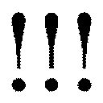

| 腕枕で眠らせて (ベリーズ文庫) | |
| 桃城猫緒 | |
| (2014) | |
腕枕で眠らせて
桃城猫緒
目次
第１章
ヒビワレタ ココロ
別れた元カレは、腕枕をしない人だった。
『腕、痺れるし。それにいざって時、すぐに動けないじゃん』
『いざって時って、なに？』
『んーと......地震とか、火事とか？』
ウソだ。
コイツの〝いざ〟って時は、スマートフォンの着信音が鳴った時。
私をベッドに置き去りにしてでも取る、ほかの女の子からの電話。
わかってた、浮気されてること。二股かけられてるって。それでも好きだった。
けれど、健気に想い続けていればきっと報われるなんて、そんなドラマみたいな夢物語は現実には訪れない。
『あんたさあ、いい加減、楷斗に遊ばれてるって気付いてくんない？』
そう、これが現実。よりによってアイツは、同じ会社の子と二股をかけていた。
ある日突然、女子トイレに呼びだされた私は、別の部署の名前も知らない女の子にいきなり責められた。
その時は、私だって彼が好きだったから、大人しく引き下がるはずもない。
『そ......そっちこそ遊ばれてんじゃないの？ 楷斗は私を本気で愛してくれてるんだから』
勇気を出して言い返す。バカだった。やめておけばよかったのに。
次の日から始まった陰湿な虐め......。
ロッカーの鍵穴には接着剤が詰められていた。机の中にはトイレの汚物が入っていて、私がファイリングしたはずの資料は、翌日全部捨てられている。
相手の子は想像以上にしたたかで、気がつくとオフィス中に、私が彼を寝とったという噂まで広めていた。
友達は事情を知って憤慨し、慰めてくれたけど、廊下であの子の友達らしき女子社員とすれ違うたびに、『ヤリマン』『ブース』などと小声で囁かれる屈辱は、私を日に日に限界へと追い詰める。
そうして一ヵ月が経ったころ、身も心もやつれ、耐えられなくなった私はついに、大泣きしながら彼に全部ぶちまけた。
女同士のいざこざに巻きこみたくない、面倒な女だと思われたくないと思って、今まで我慢してきたけれど。もう、嫌。もう嫌だ。
なのに......そんな私を、彼は冷たく突き放す。
「なにかの間違いじゃない？ 俺、二股とかしてないし。考えすぎじゃん？」
誠意の欠片もない、軽薄なセリフだった。
それから私は彼と別れ、会社も辞めた。人と会うことが怖くなって、しばらく家から一歩も出なくなった。
信頼ってなに。愛ってなんなの。
もう誰も信じない。絶対に誰も好きになんかならないんだから――。
私が陥った、暗くて長い心のトンネルは、あれから二年経った今でも続いている。
もっと大切にしてください
カーテンの隙間から射しこむ朝陽に照らされたスマートフォンが、私の枕元でしつこくアラームを鳴らす。
「......九時か......起きなくちゃ......」
いわゆる普通の社会人が起きるにしては遅い時間。でも今の私にとって、朝の九時はなかなか早起きだ。
重い体をベッドから起こし、思いっきり伸びをする。
「ねむ......。やっぱ午後からの約束にすればよかった......」
少し後悔しながら部屋のカーテンを開くと、窓辺に吊るされたサンキャッチャーが朝陽を反射して光りだす。
まるで小花のような色付き硝子がキラキラと輝き、小さく揺れている。我ながら上出来の作品、と満ち足りた気分になって、私は「まあいっか」ともう一度伸びをした。
以前の会社を辞めてから、私は対人関係が怖くなって就職をしていない。
ひとり暮らしもやめ、実家に戻った。
親が健在なので、ありがたいことに路頭に迷うことはなかったけれど、無職無収入というわけにもいかなくて......。昔取った杵柄を活かし、今では自宅でインテリアオブジェを作り、ネットで販売している。
学生のころは、キラキラ光るものが好きで、硝子やビーズを使ったストラップをよく作っていた。
わりと器用で細かい作業が性に合っていたからか、友達には「センスがいい」と褒められ、調子に乗った私は、時々それをネットオークションで売ってはお小遣い稼ぎをしていたのだ。
就職してからは忙しくって、すっかりやめてしまっていたけれど、退職した後さらにその技術を磨いて、今度はサンキャッチャーを作るようになった。
サンキャッチャーというのは、陽射しを受けて光の影を乱舞させる硝子細工のオブジェ。硝子ビーズとクリスタル硝子をワイヤーで連ねたものが一般的だけど、私が作る物はテグスとワイヤーで複雑な形に連ねたり、モビール型にしたものなど、一風変わったデザインが多い。
ある程度腕に自信がつくと、通販のサイトを立ち上げた。すると、クチコミで少しずつ売れていき、今ではそれなりに生活ができる収入を得られている。
作品を作る時は、昼夜問わず何時間も集中力を必要とするだけに、目と肩の凝る作業だけど、他人と接することがないという点では気がラク。友達とは時々会っているし、お客様ともメールで繋がってるから、寂しいと思ったこともない。
なにより、私はこの仕事に心からやりがいを感じ、充実感を得ていた。
サンキャッチャーを作るには、クリスタルとビーズの硝子を自分の手でひとつひとつ繋いでいく。キラキラと華やかに、ふわふわと儚げに光るそれは、まるで幸せを紡いでるような感覚にさえさせてくれる。
この光のオブジェが誰かに幸せを届けますように......。
すっかり人に臆病になっている私だけど、硝子を紡いでる時はそんな想いを抱くほど、穏やかで優しい気持ちになれた。
今の私にとって、サンキャッチャーを作ることは生活の手段だけでなく、唯一の生きがいともいえる。
ただ......。今でもまだ、あの時の傷が疼く夜はある。
でもきっと、時間が癒してくれる。
他人と関わらなければ、二度とあんなつらい想いをすることはないんだから。
光の硝子に囲まれていれば、私は幸せ。
あのメールが来るまでは、そう思っていた――。
私のもとに注文以外のメールが届いたのは、三日前の夜のこと。
都内で雑貨店を経営するという人からで、私の作るサンキャッチャーをお店で取り扱いたいという申し出だった。
自分の商品をお店に置いてもらえるなんて夢のようで、すごく嬉しかったけど、その反面、迷ってしまう。
ずいぶん他人と接していない私が、誰かとの繋がりを新たに作るなんて。
メールだけのお客様と違い、取引となると当然直接会っていろいろ交渉しなくてはならない。
すっかり気楽な自営業に浸かっている私にそんなことができるだろうか。
何度も文章を読み返しては、自問自答を繰り返す。
その人の文章はとても丁寧で、誠意が感じられた。
『あなたの作られるオブジェは、美しいだけじゃなく心を癒してくれます』
だなんて、なんとも嬉しいことまで書かれていて......。
きっと、この人なら会っても大丈夫だろう。
そう思えた私は、思いきって申し出を受けることにした。
そして今日。私は初めてメールの主と会って打ち合わせをする。
いくつかサンプルを持っていき、どんな物を何点置いてもらうのかなど、具体的な相談をするのだ。時間があれば商品を置いてくれる雑貨店も見せてもらいたい。
私は久しぶりにスーツに袖を通すと、丁寧に梱包したサンプルをまとめ、大きな紙袋に入れて家を出た。
先方の配慮で、打ち合わせはうちから遠くないカフェでやることになり、先に着いた私は一番奥の席で相手を待つことにした。
ほどなくすると、緊張していた私の耳に、お店のドアが開く音が聞こえる。
目を向けると、店内の女性客たちが何度もチラ見するほど爽やかで高身長のイケメンが、まっすぐこちらに向かって歩いてくるのが見えた。
そして、ついに私の前までやってきて、その足を止める。
「鈴原美織さんですね。初めまして、メールさせていただきました水嶋紗和己です」
その男性はニコリと微笑み、男の人への免疫がすっかりなくなっていた私の頭を完全にパニックにさせた。
〝雑貨店を営むのはたいてい女の人〟。
私の中にそういう偏見があったのは確かだ。そして、メールに書いてあった〝水嶋紗和己〟という漢字のイメージから、女性だと勝手に思いこんでいたことも。
勘違いしていたこちらが悪いのはわかってる......けど、正直困った。
丁寧な挨拶をして席に座った水嶋さんを前に、なんともいえない気まずさに襲われる。
私は、すぐにサンプルを取りだして仕事の話を始めた。
「ああ、やっぱり画像で見るよりずっと素敵ですね」
サンキャッチャーを手にした水嶋さんは、嬉しそうにつぶやく。
愛想も余裕もないこちらの態度に、水嶋さんは気にすることもなく、にこやかに商談を進めてくれ、内心ホッとしていた。
だって、いきなり男の人とふたりで打ち合わせだなんて、心の準備ができていないもの。ここ最近まともに喋った異性なんて、お父さんぐらいなのに！
「鈴原さんのサンキャッチャーは綺麗なだけでなく、優しいデザインがすごくいいですね。温かみがある」
......それも、こんな若いイケメンだなんて。そもそも、なんでこんなカッコイイ人が雑貨店なんてやってるんだろう。長い手足に、綺麗なラインの広い肩幅。スーツも似合うし、モデルでもやっていたほうが似合いそう。
そんなことを思いながら、水嶋さんがサンプルに気を取られている隙をついては、チラチラと観察してしまう。
肌はなめらかで、ソフトに分けてうしろへ流してある髪はサラサラ。鼻筋や頬のラインは男らしく、笑っている時は優しそうな表情を見せるのに、真面目な表情は目元が妖しいくらいに涼しげで妙に色っぽい。
「うん、窓際のコーナーの一角全てのスペースを使って、鈴原さんの商品を扱わせていただきたい。間違いなく人気商品になるでしょう」
......モテるんだろうな。......いくつだろう、三十歳くらい？ いっぱい恋愛してそう。この人も浮気したり二股かけたりしたことあるのかな......。
「鈴原さん？ どうされました？」
「えっ!? あっ、はい!?」
頭の中が余計な考えごとでいっぱいになっていた私は、水嶋さんが顔を覗きこんできたことに慌てて、サンプルを持つ手を滑らせてしまった。
「あっ」
カシャンと硬質な音を立てて、床に落ちた小さな硝子玉がいくつか砕け散る。
「し、失礼しました！」
ボケッとしていたことと、焦って硝子を割ってしまったというダブルの失態に、思わず顔が赤くなった。
嫌だ、私、なにやってるんだろう。
これは仕事なんだから、男も女も関係ない。変に意識しすぎて、こんな失敗までしてみっともない。せっかく商品を気に入ってくれたのに、呆れさせちゃったらどうしよう。
ただでさえ緊張していたところへ、自ら招いた失敗が追い討ちをかけるように鼓動を早くする。
動揺した私は、思わず落ちた硝子を素手で拾おうと手を伸ばした。
その瞬間、水嶋さんが私の手を掴む。
「ダメですよ、鈴原さん。怪我をします」
低くて優しい声。大きくて温かい手。私を見つめる眼差しは真剣でありながらも、柔らかさを帯びている。だけど......。
「は、離してください......！」
握られた手を、私は強く振り払った。
水嶋さんの一瞬驚いた顔を見て、しまったと気付く。けれど、露にしてしまった嫌悪感は消せない。
だって、あまりにも馴れ馴れしいじゃない。いくらなんでも、初対面の女の手を握るだなんて。
軽薄。いやらしい。優しそうな顔してやっぱりこの人だって、下心のある男なんだ。
緊張して混乱して、ドキドキ言いっぱなしの心から湧いてくるのは、どうしてか元カレへの......男への憎しみばかり。
私の手を握った目の前の水嶋さんの姿が、元カレとダブって見えてくる。
もうやだ、だから男なんかと関わりたくなかったのに！
唇を噛みしめて俯いた私は、自分でも今とても失礼なことをしているとわかっていた。
けれど、込み上げてくる憎悪がどうしても抑えきれない。
......もうダメだ、この話はきっとなかったことになる。
頭の片隅で落胆しながら、抗えない感情にぎゅっと目を閉じて耐えていた私に、水嶋さんはもう一度ゆったりと微笑むと、優しく声をかけてきた。
「すみません、失礼しました。怪我はありませんでしたか？」
「......あ......」
その途端、それまでの気持ちが嘘のようにパチンと弾けて消えた。
穏やかに微笑む目の前の笑顔に、自意識過剰な振る舞いをしたことへの羞恥心と、水嶋さんに対する罪悪感が湧きだして、再び私は焦りだす。
「あの......すいま――」
謝罪の言葉を言いかけると、お店の人がホウキとチリトリを持ってテーブルへとやってきた。
足元を掃いてくれる店員さんの邪魔にならないように立ち上がり、チリトリに掃きこまれる硝子の欠片を見ていると、いつの間にか同じように立ち上がっていた水嶋さんがポツリと零した。
「......割れても硝子は綺麗ですね」
その声はとても優しくて、でもどこか寂しそうで......。私はおずおずと隣に立つ水嶋さんのほうを振り向く。
「......あの......すいません......いろいろと......」
もう一度たどたどしく謝罪を口にすると、水嶋さんは少しだけ口角を上げて微笑んだ。
「なにも、鈴原さんが謝ることはありませんよ。それより......指先、血が出てます」
「あっ......」
言われて初めて気付き、慌てて指先を押さえる。
「大丈夫ですか？」
「はい、これくらいなんてことないです」
そう答えて、血の滲む指先をテーブルの紙ナプキンで拭うと、水嶋さんは穏やかだった表情を少し曇らせた。
「破片が刺さってる可能性があります。洗って綺麗にしてきたほうがいいですよ」
それでも「いえ、大丈夫――」と私が言いかけると、今度はきっぱりとした口調で「鈴原さん」と呼びかけられる。
「小さな傷でもあなたの大事な体です。もっと大切にしてください」
水嶋さんはそう言って、まっすぐに私を見つめた。
カフェの洗面所で小さな小さな傷を水で流しながら、水嶋さんの言葉を思いだして少しだけ涙ぐんだ。
『もっと大切にしてください』
水嶋さんがどんなつもりでそんなことを言ったのかはわからない。でも、あまりにも優しく温かいその言葉の響きは、まだ傷の癒えていない心に深く深く沁みこむ。
私は顔を上げて洗面所の鏡に映し、ちょっと崩れたマスカラを直すと、さっき掴まれた手を見つめた。
あの時、咄嗟に湧き出た嫌悪感はもうない。
私の大切な硝子のオブジェを......あの人になら預けても大丈夫かもしれない......。
きゅっと手を握りしめ決意すると、水嶋さんの待つテーブルへと戻っていった。
喜んでもらえて僕も嬉しいです
翌日、水嶋さんの経営する雑貨店を見せてもらうことになった。
やっぱり自分の作品がどんなお店に置かれるのか、作り手としては気になる。
昨日の打ち合わせの時、私が実際にお店を見てみたいと申し出ると、水嶋さんはすぐに「じゃあ今から車でお連れしますよ」と言ってくれたけど、丁重にお断りし、明日、改めて電車で行くと告げた。
......男の人とふたりきりで車に乗るのが嫌だったから。
仕事なのにこんなの甘えてると自分でも思う。
けど、水嶋さんはとくに理由を聞くこともなく、「お待ちしております」と、ゆったりと微笑んでくれた。
お店には約束した時間どおりに到着した。
大通りに面した店舗は、ダークブラウンの外壁で、入口前に観葉植物が飾ってある。想像していたよりずっとシックな雰囲気だった。
壁に飾られた『pauze』と書いてある木製の看板を横目にドアを開くと、鈴のような音のドアベルが鳴る。
「いらっしゃいませー」
と、中から声が響き、足を踏み入れた私は入るなりぎょっとして立ち止まった。
「やあ鈴原さん、いらっしゃいませ。お待ちしてました」
「み......水嶋さんっ!?」
店のレジカウンターから出てきて私を出迎えてくれた水嶋さんは、昨日の端整なスーツ姿とは打って変わって、リネンの白いシャツとチノパンというラフなスタイルの上にビブエプロンをつけた、とても〝経営者〟らしからぬ姿をしている。
一瞬、バイトのお兄ちゃんかと思ってしまった......。
「すみません、駅までお迎えに行けなくって。バイトの子が急にお休みしちゃったんで、僕が店に出ることになりまして」
目をまん丸くしている私に、水嶋さんは照れくさそうに頭をかいてそう言った。
「み、水嶋さん、オーナーなのに店番もするんですか？」
「オーナーって言っても二店舗だけですし、そんな偉いものじゃないですよ」
少しはにかんだ水嶋さんは、その格好と相まってか本当に偉そうな雰囲気はなく、爽やかなバイトのお兄さんにしか見えない。
......変な人。
申しわけないけれど、それが私の率直な感想だ。
男の人っていうのは、もっと肩書きや立場にこだわるものかと思ってた。
経営者という上の立場なら、ほかのバイトに「出ろ」と指示してしまえば済むことなのに、わざわざ自分が出るなんて。
訝しげな私の表情を見て、水嶋さんはパチパチとまばたきをすると、広い肩をしょんぼりさせてバツが悪そうに尋ねてきた。
「やっぱり僕みたいなデカい男が、雑貨屋で店番してると怖いですかね？ なんだか僕が店番してると、女の子のお客さんが怯えて見てる気がするんですよね」
その姿があまりにもおかしくて、つい噴きだしてしまった。
「ぶっ......くく......、水嶋さんて変わってますね......」
「ええっ、そうですか？」
「だって、オーナーなのに可愛いエプロンつけて店番してるし、そんなにカッコイイのに『怖いかも』なんて悩んでしょんぼりしてるし......絶対、変わってますよ」
不躾にも笑いが止まらなくなってしまった。
けれど、水嶋さんは怒ることもなく一緒になって笑いだす。
「ふふ、鈴原さんが笑ってるの見てたら、なんだか僕もおかしくなってきました。笑いってうつりますよね」
クスクスとふたりの笑い声が静かな店内にほんわかと響く。
この人、スマートな見た目とは裏腹にすごく面白い人かも。
心地いいほど柔らかな彼の雰囲気を感じながらそう思った。
「ちょうど今、お客さんも途切れてることだし、お店の中を案内しますよ」
そう言って、水嶋さんはゆっくりと店内を歩きながら、私にいろいろな商品を見せてくれた。
『pauze』は大人の女性をターゲットにした雑貨店で、外装だけでなく内装も商品も上品で落ち着いた雰囲気を醸しだしている。
値段はちょっとお高めだけど、それだけの価値が十分に感じられる、センスのいい品物ばかりが並べられていた。
「この革のペンケースいいでしょう？ 知り合いのツテを使ってハンガリーから取り寄せてるんです。たぶん、国内ではうちしか扱ってないですよ」
ここで扱う物はきっと、水嶋さんがひとつひとつ厳選して買い付けた物なんだろう。
まるで愛しい物にでも触れるような手つきで商品を取り、説明をする水嶋さんの横顔は、嬉しそうで、それでいてちょっと得意そうだった。
水嶋さんは、出窓型になっている窓辺のスペースで足を止めて私を振り返ると、大人びた顔を少年のように綻ばせながら、光の射す一角に向かって腕を伸ばした。
「ここに鈴原さんのサンキャッチャーを置かせてもらおうと思っています」
あけすけな笑顔が、窓から射しこむ太陽の光に照らされてキラキラしてる。その表情はとても柔らかく眩しくて。
......この人、大人なのに、どうしてこんなに無邪気に笑えるんだろう。しかも、仕事の話をする、ただの取引相手の私に向かって。
男の人への嫌悪感が根付いてる心には、そんな表情を上手く受け止めきれず、私は愛想笑いをしながら少しだけ目を伏せた。そして不自然にならないよう、視線をそのまま出窓のスペースへと移す。
「ここ、結構スペースありますよね。本当に全部使って置いてもらえるんですか？」
「ええ。せっかくの鈴原さんのサンキャッチャーですから、広めに空間を取って光がよく映えるようにしたいんです」
わぁ......作り手としてはすごく嬉しい扱い。
太陽を受けるための硝子細工だもの、飾るならやっぱり光をいっぱい与えてキラキラさせてあげたい。
この上ない優遇に、自然と私の顔が綻ぶ。
「嬉しいです。私、頑張りますね。きっとお客様に喜んでもらえる物作りますから！」
思わず少し高揚した口調で答えてしまった。今の私には、自分の作ったサンキャッチャーを大切にしてもらえることが一番嬉しい。
そんな私に水嶋さんは、この日一番の満面の笑みを見せて、日だまりに吹く柔らかい風のように、心地よく響く声で言った。
「喜んでもらえて僕も嬉しいです。でも、鈴原さんならそう言ってくれると思ってました」
鈴原さんなら？
そのセリフに、私は少し違和感を覚える。
「......水嶋さんて、昨日よりも前にお会いしたことありましたっけ？」
「いいえ、どうしてです？」
なんとなく今の言い方が、まるで私を以前からよく知っていたみたいだった。
気のせいだったのかな。
「いえ、なんとなくちょっと思っただけです」
不思議そうな顔をしている水嶋さんにそう答えると、同時に、店のベルが来客を知らせる。
「いらっしゃいませー。鈴原さん、すみません、ちょっと失礼します」
水嶋さんはそう言って長身に似合わない小走りで仕事へと戻っていった。
それからしばらくして、少しずつ混み始めた店内に、ショートカットのスラリとしたシルエットの女性がドアベルを鳴らして入ってきた。
「オーナー、お疲れ様です」
「玉城さん、おはようございます」
レジカウンターの水嶋さんに挨拶をして店の奥へ入っていったところを見ると、どうやらここの従業員らしい。
エプロンをつけたその人が再び店内に出てくると、水嶋さんは彼女を私の元まで連れてきて紹介してくれた。
「この店を任せている店長の玉城夏々さんです」
「初めまして、玉城です。今度扱わせていただくサンキャッチャーの製作者の鈴原さんですね。オーナーから話は伺っています。とても素敵な品物だそうで、私も楽しみにしてるんですよ」
そう挨拶してくれた玉城さんは、隙のない凛々しい顔立ちに、細身のジーパンとハイヒールを合わせたピシッとした立ち姿で、見るからに〝デキる女〟の雰囲気を醸しだしていた。
あまり人に会わない生活をしているせいか、ハツラツとしている人を前にすると、ちょっとすくんでしまう自分が情けない。
「ありがとうございます。よろしくお願いします」
ありきたりな挨拶しか返せなくて、会話も続かない。ぎこちなく愛想笑いでごまかしていると、水嶋さんがポンと私の肩を叩いて声をかけた。
「鈴原さん。玉城さんが来てくれたんで、僕、もうお店抜けられますから、よかったらもう一店舗のほうをこれから案内しますよ」
一瞬、体に触れられたことでよみがえった男性への嫌悪感は、目の前の水嶋さんがあまりにもラフで屈託のない姿だからか、すぐに治まった。
けれど、代わりに今度は、別の不安が私を襲う。
今から一緒に別の店舗に行くということは......きっと、車で向かうことになる。
「あ......あの、私、車は......」
やっぱりまだ男の人の車に乗るのは、嫌だ。
仕事だってわかってる。でも、自分でもこの気持ちはどうしようもないんだもの。
......この人なに言ってるんだろうって思われてるかな。
被害妄想、自意識過剰。
怪訝そうな表情を浮かべた玉城さんの視線がそう言っているようで、怖くて無意識に一歩後ずさる。
すると、水嶋さんがもう一度私の肩を叩いて言った。
「ご一緒に電車で行きませんか？ 今日はいいお天気だし駅まで歩くのもきっと気持ちいいですよね」
「えっ？」
おおよそビジネスとは思えない、まるで散歩の誘いのようなその提案に、私はもちろん、玉城さんまで目を丸くした。
「あ、もちろん別で行って、向こうで待ち合わせでも構いません」
そんなふうに言いながら、水嶋さんは身につけていた黒猫のワンポイント入りのエプロンをさっさと外している。まるで早く散歩に行こうと、ワクワクしながら急かすみたいに。
「......ふっ、ふふふっ」
思わず、私の口から笑いが零れた。
「ふふふ、ありがとう水嶋さん。一緒に電車で行ってください」
口元を押さえて笑いだしてしまった私に、水嶋さんも柔らかい目元を三日月型に曲げ、照れたように頭をかいて笑う。
「本当、鈴原さんの笑いってうつりますね。ふふ」
笑い合っている私たちを、玉城さんが不思議そうに見ていた。
「じゃあ、お店は私に任せてどうぞ行ってきてください、オーナー」
玉城さんはそう言うと、水嶋さんがざっくり畳んで手に持っていたエプロンを、ヒョイと取り上げて、ひらひらと手を振る。
「ありがとう玉城さん、じゃあ後のことは頼みます」
水嶋さんはお礼を述べてから、私の肩をポンポンと叩いてドアへ促し、一緒に表へと出た。
「ああ、いい天気だな。やっぱり今日は電車で正解です。さすが鈴原さん」
外に出て青空を仰ぐように伸びをした水嶋さんの隣で、私は小首を傾げる。
「さすがって、なんでですか？」
「サンキャッチャーの作り手としては太陽に敏感なのかなと思って。いい光を注ぐ日がよくわかってらっしゃるのかと」
「あははっ。なに言ってるんですか、水嶋さん」
本当に水嶋さんて、変。
「ふふふ、今日の鈴原さんはよく笑ってくれますね」
水嶋さんは私の見る限り、いつも笑っている。大人なのに、男なのに、どうしてこんなに優しく柔らかく笑えるんだろう。
この日、水嶋さんと一緒に、電車でもうひとつのお店を見に行った私は、とても久しぶりに心からよく笑った。
幸せですね
最近、よく眠れてる気がする。
別に今までも不眠症ってわけじゃなかったけれど、以前よりラクな気持ちで毎晩眠りに落ちていると思う。
夜、寝る前の真っ暗な空間。あれが嫌で、いつも電気をつけっぱなしにしたり、眠くなるギリギリまで本を読んでいたりしたけど、不思議なことに最近はそれがない。
電気を消し、ベッドに潜ってゆっくり呼吸をしていると、いつの間にかそれが寝息に変わっているようで、穏やかな気持ちのまま、朝を迎えることが多い。
「新しい人との出会いがよかったんじゃない？」
佐知はそう言って、小さなクリスタル硝子の入った箱の蓋を丁寧に閉じた。
「心も体も適度に刺激されて疲れたほうが、グッスリ眠れるってもんよ。美織は引きこもりだからたまにはそういう刺激がないと」
人を堂々と引きこもり呼ばわりする佐知は、高校時代からの親友でもあり、私のサンキャッチャー製作に欠かせない、硝子工房の奥さん。
サンキャッチャーに使うクリスタル硝子のトップやビーズを、私はこの親友の夫が営む硝子工房で主に買い付けている。
オーダーメイドでもこちらの納得がいく物を作ってくれるし、佐知の親友ということで、お値段の融通もきく。
その代わりではないけれど、郵送と梱包の手間を省くため、私は数週間に一度はこうして隣県の工房まで自分の車を走らせ、注文した製品を取りに来るのだった。
それに仕事にかこつけて、こうして佐知とお喋りをするのが、私のささやかな楽しみでもある。
「なるほど、刺激ね。たしかにずっとなかったかも」
佐知の言葉に相槌を打ちながら、でもその刺激がない穏やかな生活を望んだのはほかでもない自分なのよね、と頭の中でつぶやく。
「その雑貨屋の社長とやらはいい人なの？」
「うん、まあ、たぶん」
「よかったじゃない。男？ 女？ いくつくらい？」
「男の人。三十歳くらいかな」
「へえ！ そんな若い男が雑貨屋なんてやってるんだ？ めずらしいね」
佐知の瞳にキラキラと好奇の色が浮かんだ。こうなると彼女が次に尋ねることはもう決まっている。
「その人、独身？ 恋人は？」
べつに彼女がほかの異性に興味があるわけではない。彼女には上質なクリスタル硝子を上手に作る、素敵な旦那様がいるのだから。
「美織、チャンス、チャンス！ 引きこもりに出会い到来！」
そう。佐知の興味があるのは、私の異性関係なのだ。
失礼とおせっかい極まりないセリフだけど、彼女の口が悪いのは昔から。悪気がないのはわかっているので気にしないでおく。
「あのねえ。私、まだ水嶋さんが三十ぐらいの男って情報しか言ってないんだけど、どうしてそうなるかな」
「既婚者なの？」
「わかんない。......でも指輪はしてなかったと思う」
「じゃあ、いいじゃん。今の美織は圧倒的に出会いが少ないんだから、このチャンスを大事にしないと」
学生のころから恋愛至上主義だった佐知は、現在もその思想を持ち続け、人妻となった今ではこうして、自分ではなく周囲へ押し付けるようになった。
もちろん、それだけではないのはわかっているけど......。
「いい加減、新しい恋しなって、美織。昔の恋の傷を癒すには新しい恋が一番だよ」
そんなふうに直球で優しい助言をされると、なにも言えなくなってしまう。
わかってる。佐知なりに、私を心配してくれてること。
佐知は私の二年前の失恋を知っている。あの時はほぼ毎晩、会社の友人と佐知と、交互に電話をしては話を聞いてもらい、時には居酒屋で飲みながら慰めてもらった。
ボロボロに傷付いた私を知っているからこそ、佐知はこうしておせっかいをやいてくれるのだ。
「臆病になってるのはわかるけどさ、もう二年だよ。いつまでも引きずって閉じこもってないで、新しい幸せ見つけなくっちゃ」
恋愛が幸せの全てだとは限らない。現に今の私は、黙々と美しい硝子のオブジェを作ることに、一番の幸せを感じている。
でもそんな反論は、恋愛第一な佐知には通用しないし、それに私のためを思って言ってくれてるのだから、言い返すのは野暮ってものだ。
「ありがと、佐知。今後、水嶋さんと仲よくなることがあったら考えてみるよ」
佐知の優しさを当たり障りのない言葉でやんわり濁す。
契約から納品までの手続きが済んだ今となっては、もう水嶋さんと直接会うこともそうないだろうし、仲も深まりようがないのだけれど。
まあ、それ以前にやっぱり私には恋愛する気なんてない。
いい加減、長くなってしまったお喋りに終止符を打つべく、私はクリスタル硝子の入った箱を自分の車へ運びこんだ。
「いつもありがとうね。旦那さんにもよろしく」
運転席に乗り、別れの挨拶をすると、佐知は車の窓枠に手をかけて、名残惜しそうに、真剣な眼差しで話しだす。
「美織、本気でちょっと社長のこと考えてみなよ」
どうでもいいけど、その〝社長〟って呼び名は、ホステスに呼ばれてるオジサンみたいだからやめてほしい。
眉尻を下げながら、車を発進させたい気持ちを込めて苦笑いすると、佐知は窓枠から手を離して数歩下がった。
そしてエンジンの音に負けない、大きな大きな声で別れ際に叫ぶのだった。
「気付いてないだろうけど、社長のこと話してる時、美織すごくいい顔してたよ!!」
......だってさ。
家に帰った私は、夜になって、じっと部屋にある鏡とにらめっこしていた。
『社長のこと話してる時、美織すごくいい顔してた』
どんな顔よ、それ。
水嶋さんのことを思いだしながら、自分の顔を眺める。
......ほーら、なんの変哲もない。
自分に対してなのか佐知に向けてなのかわからないけど、当てつけのような嘲笑をニーと浮かべた。うわ、可愛くない。
佐知は、恋愛至上主義だから。彼女は常にロマンチックなピンクのフィルターをかけて世の中を見てるんだと思う。
私がめずらしく男の人の話をしたから、きっとあんなことを言ったんだろうな。
たしかに水嶋さんはいい人だと思う。雰囲気が柔らかくて、人に警戒心を抱かせないタイプ。
でもそれはあくまで仕事上の付き合いの話。プライベートではあの爽やかさの裏で、ひどい恋愛をしてるかもしれないじゃない。
そうよ。だってきっと、男なんてみんなそんなもの。
「だいたい、水嶋さんが独身だってハッキリわかったわけじゃないし、それに独身だったとしても彼女がいるかもしれないし。そもそも水嶋さんが私をそんなふうに見てるわけないし」
ブツブツ、チャリチャリ。
私のつまらないひとり言と、テグスと硝子を繋ぐためのカンをいじる音が、静かな部屋にほんのりと木霊する。
夜の自室で着々とできていく、太陽を浴びるための硝子のオブジェ。
時には雨の雫のように、時には綻ぶ花のように、様々な形に私の手が紡ぐ。綺麗で愛しい私の作品。
この硝子たちは数日後、水嶋さんのあのお店のあの窓辺でキラキラと輝かせてもらえるんだ。
「......嬉しいな......」
それを考えると、私の中はほっこり温かい気持ちになる。
ほらね、やっぱり。
私は恋愛なんかより、サンキャッチャーを作ってる時が、一番幸せ。
【先日送っていただいた上記の商品、本日確かに納品されましたのでご連絡いたします。今月に入って、鈴原さんのサンキャッチャーはますます好評です。今回お送りいただいた新作も、春らしく柔らかな雰囲気が素敵で、即完売しそうな予感がします。僕自身、お店に行くたびに、つい窓辺のコーナーで足を止めてしまうんです。優しくたゆたう光に囲まれて過ごす時間は幸せですね】
どうせすぐに受領印付きの納品書が送られてくるのに、水嶋さんは納品のたびに、必ず律儀にメールを送ってくる。
そこにはいつも心温まるメッセージがつけられていて、水嶋さんてマメだなぁ、と私は感心せざるを得ない。
パソコンの青い光に目を細めながら、繰り返しその文章を眺めた。
〝優しくたゆたう光に囲まれて過ごす時間は幸せですね〟か......。
ふと、お店を見に行った時に窓辺で見た、水嶋さんのあけすけな笑顔を思いだした。
単なる営業用のサービストークなのかもしれないけど......。
水嶋さんなら、本当にそう思ってくれていそう。
ちゃんとサンキャッチャーの魅力をわかる人に出会えて、本当によかったと思う。
水嶋さんになら、これからもずっと私の商品を扱ってもらいたい。
「これからもいい物を作り続けなくっちゃ」
いい気分で発奮した私は、さっそく今日もサンキャッチャーの製作に取りかかるべく、パソコンデスクから立ち上がって作業用のテーブルへ向かった。
と、その時。開きっぱなしのパソコンから、メールの着信音が短く響く。
私はデスクを振り返ると、立ったままメールボックスをクリックした。
【鈴原美織様――立て続けにメールしてすみません。実はご相談したいことがあります。お客様から自宅でのサンキャッチャーの飾り方について、よく質問を受けるのですが、それに対するアドバイスをいただけないでしょうか。それと、お客様の要望が多いので、今後、置き型のサンキャッチャーの扱いを増やしたいのですが、よろしかったら直接お会いしてお話できませんか？ 水嶋紗和己】
そんなメールの内容に、私はパチパチと目をしばたかせた。
変なの。こんな要件、わざわざ会わなくてもメールで済むのに。マメだから？ 真面目だから？
ちょっと首を傾げたけれど、私はパソコンのデスクに向かって座り直すと、さっそく返信を打った。
【水嶋紗和己様――了解いたしました。こちらはいつでも構いませんので、日にちと場所が決まりましたらご連絡ください。鈴原美織】
まあ、これも仕事だものね。商品を大事に扱ってもらってるお礼の気持ちもあるし。水嶋さんとは、いい取引関係を続けたい。
打ち終えたメールを送信してパソコンを閉じ、再び作業用のテーブルへと向かう。
さあ、今日も頑張ろうっと。私はこの時間が一番幸せなんだから。
いつものクリスタル硝子を手に取り、キラキラ光るそれを眺めて目を細めた。
気持ちが高揚してるのは、きっと、ほら、硝子がこんなに綺麗なせい。
第２章
そんな顔させるつもりじゃなかった
「えっ、じゃあ水嶋さんもテニス部だったんですか？」
「高校一年の三ヵ月間だけですけどね。途中でバレー部の友達に誘われて、そっちに行っちゃったんです」
「なあんだ。私はちゃんと三年間、テニス部やりましたよー」
「偉いなぁ、鈴原さん。僕は根性なしですみません」
「あはは、謝られても」
......あれ、どうしてこんな話になってるんだっけ。
今日は、水嶋さんの相談に乗るためにお店まで出向き、サンキャッチャーに関するアドバイスをいろいろとしてきた。
それから、この相談のお礼と、今後の商品についての打ち合わせを兼ねて、水嶋さんがご馳走してくれると言うので、外に食事にやってきたのだ。
おいしいベトナム料理のランチコースを食べ終え、食後には甘～いベトナムコーヒーを飲みながら......気付くと私は水嶋さんとたわいない話で談笑していた。
おかしいな。最初は仕事の話をしていたはずなのに、と不思議に思うも、楽しいお喋りはなかなかな止まらない。
「意外、水嶋さんてひとりっ子かお兄さんかと思ってました」
「そうですか？ 姉がふたりいる末っ子ですよ。鈴原さんは......兄のいる妹って感じですね」
「はずれ、弟のいる姉です」
「あれ、違ったかぁ」
おかしそうに水嶋さんが笑う。つられて私もクスクスと声を立てながらコーヒーを飲んだ。
明るい雰囲気の店内で、私たちのテーブルは、なおいっそう盛り上がる。
「あの海外ドラマ、僕、シーズンⅡまでしか見てないんですよ」
「えーっ、シーズンⅢからが面白いのに！ ダメです、ぜひ見てください。ＤＶＤ貸します」
「えっ、鈴原さん、もしかして全巻そろえてるんですか？」
「当然です、ボックスで買いました」
「それは恐れ入りました」
おどけて偉そうにしてみせた私に、水嶋さんもペコリと頭を下げてみせた。
ふたりの目が合って、また笑い声を零し合う。
ああ、本当に今日は楽しいな。
こんなにいっぱい男の人と喋ったのって、久しぶり。
こんなに自分のことを話したのも、こんなに誰かのことを聞いたのも。お喋りを、こんなにワクワクした気分で楽しめたのもいつぶりだろう。
「わ、もうこんなに時間経ってる！ ごめんなさい、水嶋さんお忙しいんじゃないですか？」
お店の時計を振り返ると、想像以上の針の進み具合に驚きの声を上げてしまった。
水嶋さんは目元をゆるめながら落ち着いた口調で返す。
「大丈夫です。実は僕、今日休みなんです。バイトの急な欠勤がなければ、ですが」
それを聞いてホッとしつつ、以前、彼がバイトの代わりにお店に出ていた姿を思いだす。
「ふふふ。もし欠勤が出たら、また水嶋さんのエプロン姿が見れるんですね。私、見たいなぁ」
「ひどいなぁ、鈴原さん。エプロン姿くらい、いくらでもお見せしますから、今日はゆっくりしたいです」
水嶋さんの言葉を聞いて、心の中で深く頷いた。
私も。今日はゆっくり、もっと水嶋さんとお喋りがしたい。
気がつけば、コーヒーのお代わりは三杯目。いい加減、口の中が甘ったるくなって、さらにお水も一杯。いくらなんでも長居しすぎかもしれない。
「そろそろ出ましょうか？ ランチタイムとっくに終わってるのに、席を占領してるのも悪いし」
「そうですね。僕らが一番、長居してますね」
辺りを見回しながらふたりで席を立った。ごく自然に水嶋さんが伝票を取る。スマートなその動作に感心しながら、彼の厚意に甘えて感謝する。
それにしても、楽しかったなぁ。誰かとこんなにいろんなお喋りをしたの久しぶりな気がする。
大人になると、どうしてもお互いの仕事とか立場とか考えちゃって、学生の時ほど無邪気にはなれない。会社員、自営業、既婚、未婚、幸せか、そうじゃないか......年を取れば取るほど、気を遣う会話が増える。
だから、こんなに心置きなくお喋りが楽しめたのって本当に久しぶり。
「水嶋さん、どうもご馳走様でした」
「いえいえ、相談のお礼ですから。それに楽しかったです。こちらこそ今日はありがとうございました」
やっぱり水嶋さんっていい人だなぁ、とレジで会計を済ませた彼に向かって頭を下げ、つくづく思う。
会う前はどうなるかと思ってたけど、水嶋さんとご縁ができてよかった。商品は大事に扱ってくれるし、お店に置いてもらえてるおかげで、こちらの収入も増えた。
こうして会って話しても、嫌な思いはしないし、それどころか安心感さえある。
ずっとひとりでやっていこうって、通販だけでいいやって思ってたけど、今はこうして水嶋さんと仕事ができることが嬉しい。
少し前を歩く広い背中をぼんやりと見つめ、そんなことを考えていたら、水嶋さんが突然振り向いたので、内心焦ってしまった。
「鈴原さん、お時間取らせちゃったので、よかったら送りますよ。もちろん電車でもいいですし......うちの店に車を停めてあるんで、鈴原さんがよければそれでも」
ドキン、と痛い音が私の中で鳴った。
でも、目の前の水嶋さんはいつもと変わらない。
穏やかな水嶋さん。いい人で、信頼できる仕事相手。
そう、仕事相手だ。
「......ありがとうございます。じゃあお言葉に甘えて、車......乗せてもらっていいですか？」
早まった......かも。
判断を、誤ったかもしれない。
そう感じたのは、水嶋さんの車の助手席に座った瞬間だった。
水嶋さんは男。男の人......。
男性の車に感じる、独特の雰囲気と匂い。たぶん、持ち主が誰だろうと、それが男の人なら一〇〇％感じる、拭いきれない独特のなにか。
それはきっと、逆も然りなんだろう。女性の車に漂う雰囲気もきっとある。
けど、今の私にとってこの〝男性の車特有の空気〟は、たまらなく不快に胸をざわつかせた。
嫌でもよみがえる、元カレとの思い出。
強く求められて拒みきれなくて、車でしたこともあった......。
よりによって最悪な思い出が頭をよぎる。
「鈴原さん？」
押し黙り、唇を引き結んでいた私に、少し心配そうな声がフワリとかけられた。
「大丈夫ですか？ 酔いました？ 窓開けましょうか？」
「......大丈夫です」
本当は今すぐ止めて、ここから降ろしてほしい。でも自分から、車で送ってもらうほうを選んでおいて、いくらなんでもそれは失礼すぎる。
「音楽でもかけましょうか？ さっきボサノバ好きっておっしゃってましたもんね。ＣＤありますよ」
水嶋さんは、私が酔ったとでも思ったのか、すごく気を遣ってくれている。
「少し近道しますね。この道だと空いてるし、ほら、海がちょっと見えるんですよ」
優しい。
「暑くないですか？ 窓開けるよりエアコン入れましょうか？」
水嶋さんは、優しい。大丈夫。ここにいるのはアイツじゃない。ここにいるのは、優しい水嶋さん。
心の中で必死にそう繰り返して、気持ちを落ち着かせた。
「ありがとう、大丈夫ですよ。気を遣わせてごめんなさい」
私がニコリと笑うと、隣の水嶋さんの表情がホッとゆるんだのがわかった。
「他の人の車に乗るのが久しぶりだから、ちょっと緊張しちゃったんです」
「そうでしたか。どうぞリラックスしてください。安全運転で行きますから」
「ふふ、水嶋さん、本当に安全運転ですね」
「安全第一ですから。僕、ゴールド免許なんですよ。友達にはお前の運転トロすぎるなんて言われますけど」
「あはは、ひどい。私、水嶋さんの運転、好感持てるけどな」
水嶋さんのかけてくれたボサノバのリズムが、ゆったりとした空気を後押ししてくれた。低くて穏やかな彼のお喋りと音楽が相まって、私を和らげてくれる。
大丈夫。そう安心しかけた時だった。
「鈴原さん」
「はい」
「お願いがあるんですけど」
前を向いたまま、そう声をかけてきた水嶋さんの顔は、優しかったけど、その声は少しだけ張り詰めていた。
「なんですか？」
「サンキャッチャーをひとつ......特注していいですか？」
「え？」
どうしてだろう、なんてことのない言葉なのに、どこか緊張が滲んで見えた。
「......僕が、欲しいんです。特注でひとつ、作っていただけませんか」
「ああ、もちろんいいですよ。デザインとかご希望があったら言ってください」
ゆったりとしていた空気が変わっていく気がしたのは、水嶋さんの声に、表情に、なにかの色を感じたせい。
......大丈夫。水嶋さんだから、大丈夫。
早鐘を打つ自分の心臓に言い聞かせる。
前を向いたままキュッと唇を引き結んだ水嶋さんの表情に気付いて、私は窓の外に目を逸らした。
大丈夫、そう繰り返して遠い海へと視線をさまよわせる。
「鈴原さん」
少しの沈黙の後に、呼びかけられた声。
今まで聞いたことのないその色に、体がジワリと汗ばむ。
「はい」
弱々しい私の返事の後に、再び少しの間、沈黙が訪れる。
「僕と付き合ってもらえませんか」
穏やかに、けれどはっきりと、その言葉は私の耳に届いた。
海の見える静かな道路で、水嶋さんが路肩に車を停める。
ゆるやかなボサノバと、かすかな波の音に包まれた車内で、水嶋さんはまっすぐに私のほうへと眼差しを向けた。
「......仕事相手に、こんなこと言うのはルール違反でしょうか......でも」
真面目な顔が少し赤らんでる。
「鈴原さん。あなたが好きです」
恥ずかしいのを堪えるように、一生懸命私を見てる。
「僕と真剣にお付き合いしてもらえないでしょうか」
真剣なのが、本気なのが伝わってくる。
水嶋さん。優しくて、穏やかな、水嶋さん。信頼できる、水嶋、さん。
なのに......。
私の中で、ピシリと亀裂の入る音がして、なにかがひび割れていく。
「......いっ、嫌です!! 絶対に嫌!!」
叫ぶような私の声に、ボサノバの音がかき消された。
ブルブルと手が震えてる。
「なんでそんなこと言うんですか!? 私は仕事のつもりで来たのに!!」
水嶋さんの見開いた目に、汚い私が映ってる。
「ひどい！ ひどい！ 水嶋さんのこと、信頼してたのに!!」
優しい水嶋さんを傷付けたくなんかない。
「いやらしい!! 軽薄!! 信じられない!!」
こんなこと言いたくないのに。
「もう会いません！ これから仕事の連絡は全部メールでしてください！」
言いたくないのに、止まらない。口から、汚い言葉がどんどん、どんどん、溢れてくる。
二年前のあの日からずっと、澱のように溜まっていた黒いものが、堰を切って溢れだす。
止めて。誰か止めて。
「男の人なんか大っ嫌い！ 水嶋さんなんか、大っ嫌い!!」
水嶋さんが、息を飲む音が聞こえた。
一気に捲し立て、ハァハァと息が切れる。
「......降ります。歩いて帰ります」
「......鈴原さん！」
ドアノブに手をかけた瞬間、水嶋さんの手が私を止めようと伸びてきた。
怯えて一瞬体がすくんだけれど、その手はハッと気付いたように引っこみ、触れられることはなかった。
「......ここで降りるのは危険です。駅までも遠いです。......送らせてください、せめて駅まで」
答えられない。水嶋さんのほうを見ることができない。すくんだ姿勢のまま固まったように押し黙る。
「......申しわけありません。仕事で呼びだしておきながらこんなことを言って、僕が卑怯でした。本当に......申しわけない」
私に向かって頭を下げる水嶋さんの姿が、助手席の窓に映って見えた。
ふたりとも無言のまま、車が動きだす。
私はずっと窓の外を見続けていたから、水嶋さんがどんな表情をしていたのかはわからない。
ただ、ボサノバの優しいリズムが耳を滑っていく。
駅で車を停めた水嶋さんは、私より早く運転席から降りる。そして、助手席側に回ると、車を降りようとした私に「本当に申しわけありませんでした」と頭を下げた。
そんな水嶋さんの横を、無言で俯いたまま通り過ぎようとすると、苦しそうにボソリと零れた声が聞こえた。
「......あなたに......そんな顔をさせるつもりじゃなかった」
立ち止まれず、振り向くこともできなくて。
駅のホームまで行ってやっと振り返って見た時、まだ、駅前に水嶋さんの車が停まっているのが見えた。
優しい人を汚く傷付けた私は、もうきっと綺麗なサンキャッチャーは作れない気がする。
幸せな気分になると言ってくれた、光のたゆたう硝子のオブジェを、もう、きっと作れない。
伝えてくれてありがとう
ごめんなさい。
ごめんなさい。
伝えられない言葉が私の中に降り積もっていく。
水嶋さんを傷付けた。ひどい言葉で、汚い言葉で傷付けた。
部屋でひとり、カシャリカシャリと硝子の玉を繋いでいく。キラキラの硝子を、より虹色に光が反射するように。
水嶋さんのお店に納品するサンキャッチャー。
春らしい色で、ワイヤーを曲げて蝶をかたどる。クリスタルがゆらり、ゆらりと踊る。
それはとても綺麗なはずなのに......悲しいくらい今の私の目には綺麗に映らない。
「......ごめんなさい」
音のない部屋で、零れたひとり言が虚しく響く。
水嶋さんは私の過去になんの関係もない。彼はなにひとつ悪くないのに、私を恋愛対象に見てるとわかった瞬間、抑えきれなかった。
目の前の穏やかで優しい顔が、卑しい元カレの姿と重なり、必死に遠ざけようとして汚い言葉が溢れでた。
あんなに優しかった人を滅茶苦茶に傷付けて逃げて。
私は最低だ。
カタンと、カンをつまむペンチをテーブルの上に放りだして両手で顔を覆った時、
スマートフォンの着信音が鳴った。
涙で滲んだ視界に映った着信表示には、数少ない私の頼れる友人の名前。
『もしもし、美織？ 今日届いた発注のファックスだけどさ、いつもと数が違うから確認しておこうと思ってさ』
「佐知......」
『ビーズのピンクがいつもより多......美織？ 泣いてるの？』
「私、消えちゃいたい......最低すぎて自分がもう嫌だ......」
『ちょっと美織？ なにがあったの？ ちゃんと話して！』
佐知には心配をかけてばっかりだ。
二年前もいっぱい電話で泣かせてもらい、今もまたこうやって......。
『美織、ゴメン。美織の傷がそんなに深いものだって、私、思ってなかった』
私の話を聞き終えた佐知の第一声は、思いもよらなかった謝罪だった。
「どうして佐知が謝るの......？」
『もうとっくに回復してるもんだと思ってた。ちょっと臆病になってるだけだって。だから早く恋しな、なんて無責任に煽ってた。本当にゴメン。美織、今でもまだ苦しんでたんだね』
「佐知......」
『でも、だからといって美織が水嶋さんを傷付けたことは、許されることじゃないよ』
どうしたらいいのかな、なんて情けないことを言う私に、佐知は『とにかく謝らなきゃダメ！』とキッパリと教えてくれた。
『ちゃんと謝って......言いづらいだろうけど説明しておいでよ。それで許してもらえるかは別だけど、美織を好きって言ってくれた人に、最低限の誠意は見せなくちゃ』
本当に佐知の言うとおりだ。それしかない。
水嶋さんに、真剣に私を好きと言ってくれた人に、私も誠意を見せなきゃ。あの優しい人に、傷付けたことを謝らなくちゃ。
『好きな人に傷付けられるつらさは美織が一番わかってるでしょう？ だったら、水嶋さんに同じことしちゃダメだよ』
うん。うん、うん。と、私は佐知の言葉に何度も頭を縦に振って頷いた。
あの人を傷付けたことを、苦しいほど申しわけなく思う。
「佐知、ありがとう。私、水嶋さんに謝る。謝って全部話してくる」
『うん、頑張って。ところで今日の発注、ピンクのビーズがいつも二十のとこ二百になってたけどいいの？』
「えっ、ごめん、それ間違い」
『やっぱ確認の電話してよかった。美織のＳＯＳが聞こえたのかもね』
電話の向こうで佐知はそう言って笑った。
もう会いません、なんて言っておきながら、水嶋さんに「謝りたいので会ってください」なんてメールするのは、はばかられる。
どうしようか考えた挙句、もしかしたら来てるかも、という淡い期待をして、水嶋さんの雑貨店をコッソリ見に来た。
直接謝りたい。あんなひどいことを言ったんだもの、メールや電話では済ませたくない。
それに私は臆病だから、あれこれ前置きをして勇気を使い果たす前に、当たって砕けたい。
手に紙袋を下げながら、私は水嶋さんのお店を遠目から眺めた。
......車がある。来てるんだ、水嶋さん。
ホッとしたと同時に、胸のあたりがズキリとした。
入っていくべきかどうしようか、躊躇逡巡した結果、車の前で待つことを決めた。
足音が近付くたびに、水嶋さんかとドキリとし、道を通り過ぎる人の視線をオドオドと気にしながら、じんわり手に汗をかくこと八十分。
コツコツと落ち着いた革靴の音が聞こえ、緊張が走った私の目に、背の高いシルエットが近付いてくるのが見えた。
......水嶋さんだ。
そのシルエットは駐車場までやってくると、自分の車の脇に立っている私を見つけ、「えっ？」と小さく声を上げた。
「鈴原さん......？」
「......水嶋さん」
なまぬるい風が吹く春の夜。雑貨店の裏の小さな駐車場に、張り詰めた空気が漂う。
驚いた表情の水嶋さんが口を開く前に、私は手に持っていた紙袋を差しだした。
「これ......あの......水嶋さんが特注された、サンキャッチャーです......」
「えっ......」
「あの......どんなデザインがいいか聞かなかったから、水嶋さんのイメージで私が勝手に作りました。もし......お気に召さなかったら、作り直します」
言いながら、私の顔はどんどん俯いていく。緊張と罪悪感で、まともに水嶋さんの顔が見られない。
「わざわざ持ってきてくださったんですか？」
そう聞いた水嶋さんの声に、怒りや迷惑そうな色は含まれていなくて少しだけ安心する。
私はコクリと頷いてから、水嶋さんの伸ばした手にそっと紙袋を渡した。
「......見てもいいですか？」
「......はい」
水嶋さんの大きな手がゆっくりと紙袋に入っていき、片手で器用に梱包を解いてサンキャッチャーを優しく取りだす。
シャラリと擦れる音を立てながら、少しずつその姿が現れた。
蒼翠の硝子ビーズに、一回り大きい薄橙色のクリスタル硝子がキラキラと小さく揺れる。
水嶋さんは、大きな手でそれを大切そうに持って、目を細めた。
「すごく綺麗です......。ありがとう、鈴原さん」
低くて優しくて、少し儚くて。
でも偽りない嬉しさを滲ませたその静かな声を聞いた時、私の目から涙が零れた。
「......ごめんなさい......水嶋さん......」
ぽろぽろ、零れていく。自分でも信じられないくらい。
「鈴原さん......」
水嶋さんの声が私の心をぎゅっと掴んで絞りだすみたいにぽろぽろと。
「ごめんなさい、水嶋さん......。私、あんなこと言うつもりじゃなかった。水嶋さんを傷付けるつもりじゃなかった」
泣く私に、水嶋さんが一歩近付いて、けれど躊躇うように半歩下がる。
「鈴原さん、泣かないでください。僕が悪かったんですから」
水嶋さんの優しい言葉は、私の心に沁み入り、自分がしたことの罪深さにズキリと胸が痛む。
「っ、違うんです！ 水嶋さんは悪くないのに......！ 私......私がいけないんです。私が勝手に......水嶋さんを、嫌な思い出に重ねてしまったんです......」
涙でグシャグシャの顔を上げて、必死で言葉にした。
そうして向かい合ったままのふたりの間を、ゆるりと夜風が吹き抜け、沈黙を落としていく。
水嶋さんは、戸惑いよりも心配を露にした眼差しで見ている。あんなに傷付けた私を、心配してくれている瞳。
......優しい、水嶋さん。
私は鞄からハンカチを出して、子供みたいに無理やり涙を拭うと、メイクの崩れた目元も気にせず、もう一度水嶋さんを見つめた。
「......ごめんなさい......聞いてもらって、いいですか......？」
私の言葉に、水嶋さんが唇をキュッと引き結んでそっと頷いた。
「......好きな人がいました。就職したばかりで初めてひとり暮らしをして不安だった時に、とても親切にしてくれた人で。一緒にいて面白い人で。私、その人と付き合いました......」
私は水嶋さんに二年前のあの苦い思い出を全て打ち明けた。浮気、嫌がらせ、裏切り......。
あの時のできごとを唇が紡ぐたびに、ズクリと心が痛みだす。涙が止まらない。苦しくて、声が詰まってしまう。
「もう......こんな思いをするなら、二度と恋なんかしないって......人が怖くて......男の人が憎くて......もう二年も経ってるのに、それでもずっと......苦しくて......」
最後まで伝えなきゃ......。かすれる声を必死に絞りだす。
「水嶋さんが私を好きって言ってくれた瞬間......あの時のこと、全部思いだしてしまって......水嶋さんは全然関係ないのに......彼と重なって見えてしまって......自分が抑えきれなくて......。水嶋さんはなにも悪くないのに......」
涙でつっかえ、途切れ途切れに伝えた言葉が、どうか水嶋さんに届いてほしい。
「ごめんなさい......ごめんなさい......」
思いの丈を込めて、深く、深く頭を下げた。
その拍子に、拭いきれなかった涙がぽとりとアスファルトに染みを作る。
灰色のアスファルトに黒く沈みこんでいく。まるで私の心のように真っ黒。
私はあの時、真っ黒く溢れ返った心であなたを傷付けた。優しいあなたを汚く傷付けてしまった。
ごめんなさい。水嶋さん。
「......全部話してくれて、ありがとう」
フワリと春の風にも似た音で、その言葉は私の耳に届いた。
「つらいのに、苦しかったのに、伝えてくれてありがとう」
顔を上げなくてもわかる。水嶋さんがどんな表情で言葉を紡いでいるのか。
苦しかった心がふっとほどけて、私の瞳がさっきとは違う、温かい涙で濡れだす。
顔が上げられないままの私に、水嶋さんがゆっくりと話しだした。
「鈴原さん......。初めて会った時から、あなたがなにかに怯えてるのは気付いてました。けど次に会った時、それでもあなたはたくさん笑ってくれて......。おこがましいと思いながらも、あなたをそのなにかから救いたいと僕は強く思いました」
水嶋さんの声が、少しだけ張り詰める。
「なのに僕は......救うどころか、あなたを追い詰めて苦しませた」
悲しげな色を含んだ言葉を聞いて、思わず顔を上げると、水嶋さんはサラリと素直な髪を揺らしながら私に向かって頭を下げた。
「申しわけありません、鈴原さん。やっぱり悪いのは僕です」
「違う、水嶋さんは悪くない......！」
ふるふると、首を横に振った私を安心させるように、水嶋さんは下げた頭を戻すと少しだけ微笑んだ。
「鈴原さん、覚えていますか？ 最初にお会いした日の割れた硝子のこと」
「え？」
「硝子はひび割れて砕けても美しい、と僕は思うんです。砕けてなお、透明のままキラキラと光を映していて......。けれど、砕けた硝子に手を伸ばせば、怪我をするのは当然です。あなたの砕けた心に不用意に手を伸ばしたのは僕なんです」
そう言った水嶋さんは、少し困ったようにはにかんで笑った。
「僕はあなたの心が透き通っていて美しいことを知っています。たとえ、ひび割れ砕けても、僕はそんなあなたさえ愛しいと思います。全てを話してくれてありがとう。僕はやっぱり、あなたのことが好きです。」
「......水嶋さん......」
「鈴原さん。あなたの心を守ってもいいですか。僕を好きになってくれとは言いません。ただ、あなたのつらい時、少しでもそばにいさせてください。......なんて、フラれたのになんだか往生際が悪いですね、僕。すみません」
そう私に伝えて笑った水嶋さんの笑顔は、夜の風のように穏やかで、春の風のように柔らかい。
水嶋さんは、たくさん泣いてしまった私に触れる代わりに、ずっと優しい眼差しで見つめ続けてくれた。抱きしめる代わりに、優しい声で私を包んでくれた。
「ありがとう......水嶋さん......」
涙と一緒に零した言葉と、シャラリと紙袋の中の硝子が揺れる音が、重なった気がした。
写真を送ってもいいですか
暖かい日と肌寒い日を繰り返しながら春は過ぎて、季節はだんだん移ろいでゆく。
「これがメールでお伝えしていた新作です。新しい試みなのでちょっと不安なんですけど......」
「ああ、これはロマンチックですね。サンキャッチャーというよりムーンキャッチャーって感じがします」
「それ、見たまんまじゃないですか。ふふ」
クスクスと笑う私の手の中には、銅板で作った三日月にクリスタル硝子を連ねた新しいデザインのサンキャッチャー......いや、ムーンキャッチャー？
「ライトやロウソクの灯りを反射させることを前提にして、置き型にしてあります。普通のサンキャッチャーほどキラキラしないけど、これなら落ち着いたレストランやバーにも置けるかなって。......インテリア小物をお求めになる飲食店のお客さんが結構いらっしゃるって、以前、水嶋さんが言ってたから......」
「覚えててくれたんですね。嬉しいです」
水嶋さんがニコリと目を細めて、揺れる硝子をそっと指で撫でた。
「うん、本当に綺麗だ。ロマンチックでいいムードが演出できるでしょうね。飲食店だけじゃなく、女性やカップルにも人気が出そうです。すごいですね、鈴原さん」
ストレートに褒められて少し照れる。口角がムズムズ上がってしまう。
「ふふ。もしこれが恋人たちの素敵な時間を後押しできるんだとしたら、すごく嬉しくなっちゃいますね」
私の言葉に、水嶋さんが細めていた目をよりいっそう嬉しそうに曲げた。
飾らない笑顔なのに、とても綺麗。
「ただ、銅板を使うので扱いに注意が必要になってくるかも......お客様には説明書をつけようかとも思っています」
「なるほど。じゃあ販売の際は梱包時にそれをつけて口頭でもお伝えするようにします」
「手間がかかりませんか？」
「全然。雑貨にはわりと多いんですよ、扱いに説明の必要な素材。革製品なんかもそうです。お客様には長くいい状態で使っていただきたいですからね」
そう話す水嶋さんの言葉からは、このお店の商品に対する愛情がひしひしと感じられる。もちろん、お客様に対しても。
自分のサンキャッチャー含め、このお店で扱われる品物は幸せだなぁと、しみじみ思った。
「じゃあお願いします。これ、このまま納品ってことでいいですか？」
カウンターテーブルに置いた新商品のムーンキャッチャーを指差すと「はい。確かにお預かりします」と水嶋さんは経営者の顔になってコクリと頷いた。
あれから......全てを話した私を、それでも好きだと水嶋さんが言ってくれてから、一ヵ月が経った。
関係は良好。ただし、ビジネスパートナーとして。
あんなことがあった後でも、水嶋さんは馴れ馴れしくも冷たくもならず、以前と変わらない。
私の心は、そんな水嶋さんとの関係性に、水嶋さんてデキた人だなぁと他人事のように感心しちゃう気持ちが三割、気を遣ってくれてるんだろうなと胸を痛める気持ちが六割。残りの一割は、臆病でズルいけど、変わらずにいてくれる水嶋さんにホッとしてたりする。
こうしてそばにいる時は、特にそう。
カウンターで納品書にサインを書いている彼の横顔を見ながら思う。
よかった、このビジネス関係が変わらずに続けられて。水嶋さんと、縁が切れるようなことがなくて。
きっとこんないい人と仕事ができることなんてなかなかない。
通った鼻筋に長い睫毛の端正な横顔を見つめる視線に、安堵と感謝の気持ちを込めてみた。
「はい。お待たせしました、鈴原さん」
納品書の記入を終えた水嶋さんがふいに顔を上げる。
「あ、ありがとうございます！」
私、ちょっと見すぎてた!? 慌てて視線を逸らしてしまい、そんな自分の態度が彼をとても意識していたみたいで、余計に焦ってしまう。
「あ、もうこんな時間ですね」
挙動不審の私を気にすることなく、水嶋さんは薄暗い店内の時計を見遣る。
時刻はもう夜の九時過ぎ。お店はとっくに閉店していて、水嶋さんと私のやりとりに構わず玉城さんが閉店作業をしている。
どうしても新商品を実際に見てもらって意見が欲しかった私は、水嶋さんがお店に来る時間を聞いて、閉店後にのこのことやってきていた。
「じゃあ私、帰りますね。お忙しいところすみませんでした」
納品書を鞄にしまいながら頭を下げた私に「送りますよ」と、とても当たり前のことのように水嶋さんが言う。
「大丈夫ですよ、まだそんなに遅くないし」
メールで済ませられなくもないところを、自分のわがままで押しかけてきたんだもの。これ以上、多忙の水嶋さんの手を煩わせられない。
なのに、帰ろうとした私の顔を見据えて水嶋さんは大真面目な表情をして言った。
「大丈夫じゃないですよ。夜、ひとりで鈴原さんを帰らせて、なにかあったら僕が後悔します」
水嶋さんてば心配性。こちらはもう立派な大人ですよ？ だけど......それって、私を大切にしてくれてるってこと......？
そう感じちゃった胸は、少しだけ温かい。
「鈴原さん、送ってもらったほうがいいですよー」
カウンターの奥でバインダーに挟んだ書類にペンを走らせながら、玉城さんが遠くから声を投げてきた。
「オーナー、心配性な上に頑固だから、お店の女の子なら誰でも、遅くなった時は必ず送るんですよ。だから鈴原さんも観念したほうがいいですよ」
朱の口紅を塗った唇を半円に綻ばせ、カラカラと明るい笑いを零しながら玉城さんが言った。
......そっか。みんな送ってもらってるんだ。私だけじゃないんだ。さすが優しいな、水嶋さん。
「じゃあ、観念しますんで、駅まで送ってください」
玉城さんの言葉に眉尻を下げてただ笑う水嶋さんの横顔に、そう声をかけた。
大して暗くもない、駅までの道を、高さの合わない肩を並べて歩く。
車で送ると言わないのは、水嶋さんの優しさなんだろう。
「最寄り駅からご自宅まで近いんですか？」
「そうでもないかな......歩いて十分くらい」
「結構ありますね、自宅までお送りしましょうか」
「えっ、あっ、大丈夫！ 駅からは父に迎えに来てもらうんで！」
とっくに成人した娘をわざわざ迎えに来てくれる甘い父など持っていないけれど、こうでも言っておかないと、水嶋さんは本当に一緒に電車に乗って、私の家まで送りかねない。
嘘も方便、です。と心の中でつぶやいた。
「じゃあ、大丈夫ですね」
本当に安心したように水嶋さんが笑う。私もそれに黙って笑い返した。
ふたりの間にゆっくりとした空気が漂って、心地いい。
水嶋さんと会ってから、私は沈黙の心地よさを知った。
ほかの人とは気まずく思えてしまう無言の空間も、どうしてか水嶋さんとならゆったりと感じられる。
目に見えない流れる空気がふうわりと移ろって、ふたりの間を抜けるそれは幸せなほど柔らかい。
きっと、水嶋さんがものすごくいい人だから......。
沈黙を許してくれる存在って、なかなかいないと思う。黙っていても不安にならない、不思議な人。
......今まで、私の隣に並んだ恋人でさえ、こんな気持ちにはさせてくれなかった。
「鈴原さん」
「はい」
沈黙の延長線上にあるような静かな声。
「月が綺麗ですね」
「......本当だ」
見上げた空には白い三日月。
周囲の雲をゆらゆら月明かりに染めていて、その美しさに目を細める。。
少しだけ歩調をゆるめ、ふたりで月を見上げながら歩いた。
着いた駅は喧騒と明るさで賑わっていて、私はその中に歩みを進めてから水嶋さんを振り返った。
「送っていただいてありがとうございました。新商品の説明書については、また後日メールしますね」
そう言って下げた頭を戻すと、水嶋さんはなにか言いたそうに口元に手を当ててから、駅の喧騒にかき消されないように少しだけ私に近付いて告げた。
「鈴原さん。実は僕、来週から一ヵ月ほど海外に出張に行ってくるんです」
「えっ、そうなんですか？」
「はい。人気のある商品の幅を広げようと思って、新しい取引先を作るのと......少し勉強も兼ねて」
「どちらへ行くんですか？」
「ハンガリーとオーストリアです」
「わあ、オーストリアですか!? オーストリアといえばスワロフスキーですね！」
思わずパッと綻んだ私の顔を見て、水嶋さんの表情もふっと嬉しそうにゆるむ。
「ふふ、やっぱり鈴原さんならそう言いますよね」
きっと水嶋さんの予想どおりの反応をしたんだろう、目をキラキラさせる私に水嶋さんが嬉しそうにクツクツ笑う。
「鈴原さんのサンキャッチャーのおかげで硝子商品全般の人気が高まってきてるんです。これを機にもっと売り場を広げようと思って」
そんな、私のサンキャッチャーのおかげなんて。言いすぎですよ水嶋さん、と、照れくさくなってしまった。
「お土産、たくさん買ってきます。楽しみにしててください」
とても明るい笑顔で、水嶋さんはそんな嬉しい約束をしてくれて、その翌週、日本を出発した。
「いいなあオーストリア。私も行ってみたい」
いつものサンキャッチャー製作の合間、部屋でひとり、コーヒーを飲みながらボソリとつぶやいた。
そういえば旅行もずいぶん行ってないな。最後に行ったのは......三年も前。アイツとの沖縄旅行だっけ。
コーヒーで黒く満ちたカップの中に自分が映る。
......嫌な旅行だった。どういうつもりなのか、どこへ行ってもなにをしてもアイツの態度が横暴で。旅の解放感を履き違えてるとしか思えない、がさつな振る舞いばかり。
いちいちお店の人やスキューバダイビングのインストラクターにまで突っかかっていたっけ。
『観光地なんだから観光客を優遇して当たり前なんだよ』なんて言ってのけた時には、こっちが居たたまれないくらいだった。
それからはアイツと旅行に行くことは避けてたし、別れてからもとてもそんな気になれなかった。
......でも、沖縄で買ったおそろいの珊瑚のブレスレットは、嬉しくてずっと大切にしていたから、別れた後もしばらく捨てられなかった。
『これよくない？ 美織と一緒に沖縄来た記念！ おそろいで買おうぜ！』
その言葉が、ぎゅっと笑ってくれた顔がすごく嬉しかったのを今でも覚えている。
けど、そんな思い出を必死に抱えていたのは私だけ。
アイツがそのブレスレットをしているところも、大事にしまってあるのも、最後まで見ることはなかった。
「......は――......」
嫌なこと、思いだしちゃった。
コーヒーカップから目を離し、天井を仰ぐ。
あーあ。私、いつまでこんな気持ち引きずってるんだろう。
もっと前向きになりたい、もっと元気になりたいのに、と自己嫌悪に陥る。
天井を仰いだついでに立ち上がって軽く肩を回した。細かい作業で凝ってしまっていた首筋をほぐし、腰も回す。
頭を切り替えよう。こんな気持ちで作ったって綺麗なサンキャッチャーはできない。
体のあちこちをほぐして、ストレッチからさらにヨガでもしようかと思ったところで、机の上のパソコンがメールの受信音を鳴らした。
【受信メール／水嶋紗和己】
【件名：インスブルックに着きました】
【本文：さきほどドイツ経由でチロル州のインスブルックに入りました。圧倒されるほどに雄大な山並み。それに囲まれ、ゴシック、ルネッサンス、バロックと、各様式の建築物の並ぶ街はまるでファンタジーみたいです。これからこのままスワロフスキーのクリスタルギャラリーに向かいます！】
感動がまっすぐに伝わってくるメールには、インスブルックの空にそびえるアルプス山脈の写真が添付されている。
蒼と碧の混じった、信じられないくらい雄大なパノラマ。
思わず「わぁ......」と声が出た。
水嶋さんは、私を送ってくれた日の別れ際、『向こうに行ったら写真を送ってもいいですか』と言った。
『遊びで行くつもりじゃないけど、でもやっぱり見たことのない景色を前にしたら僕は感動すると思うんです。そういう気持ち、誰かと共有したいって思っちゃうんです。ああ、一緒に見たかったって。もし迷惑じゃなければ、写真を送ってもいいですか。遠くにいても、一緒に感動を共有したいって......思ってもいいですか』
その時は、水嶋さんて旅で浮かれるタイプなんだなあ、なんて意外に思ったけど。
美しい写真に釘付けになって、私はその言葉の意味がわかるような気がした。
水嶋さんの見ている感動が、感じている心が、伝わってくる。
それからも、時々送られてくるメールには、遠い場所から水嶋さんの感動と一緒に美しい景色やめずらしい物の写真がいろいろと添付されていた。
中には、ハンガリーの甘いチョコ菓子にパクついておどけてる水嶋さんの写真まであって、私を愉快な気分にさせてくれる。
私はそんなメールが届くのが待ち遠しくなり、毎日写真を眺めては、うっとりと幸せな気分に浸った。
自分じゃない人が眺めてる景色を、こんなに美しく思えるなんて。なんだか不思議に思える。
そこにいないのに、どうしてこんなに感動できるんだろう。
......水嶋さん。あなたと共有しているからかな。
パソコンの中の美しい写真を見ながら、柔らかく微笑む彼の顔を思い浮かべた。
もしもこの景色をあの人の隣で見たのなら、私の目にはどんなふうに映るんだろう。
一緒に三日月を見上げた時のように、穏やかで優しい気持ちになれるのかな。
きっと、もっともっと感動できるのかもしれない。
そんな想いで、胸の奥がじんわりと熱くなるのを感じながら、私は水嶋さんの送ってくれた写真をデスクトップに飾ったパソコンの前で、幸せ心地なうたた寝をした。
第３章
おやすみなさい
水嶋さんから帰国のメールが届いたのは、日本もいよいよ本格的な夏が始まりそうになったころ。
ずいぶん早くなった夜明けに、窓辺の硝子飾りがキラキラと嬉しそうに光を踊らせ、私の目を覚まさせた。
きっと今ごろ、水嶋さんの家でも蒼翠と橙の硝子が持ち主の帰りを喜んでキラキラフワフワ光を映してるんじゃないかな。
窓の外に広がる快晴の空にそんなことを思いながら、昨夜も製作作業で就寝の遅かった私は、あくびをひとつしてからもう一度ベッドへ潜りこんだ。
どこかホッコリした気持ちでついた眠りの中、なんだかいい夢を見た気がする。
「うわ、ヤバい......さすがに寝すぎた」
開いた目に映った時計の時刻は十一時過ぎ。もうとっくに人が活動する時間のピークを迎えていて、なんだか取り残されたような焦燥感に駆られる。
慌てて自分も活動する人間側にまわろうと、顔を洗って身支度を済ませた。
コーヒーを淹れ、キッチンから適当な果物を拝借して部屋に戻り、パソコンの電源を入れる。
朝は何時に目覚めても、これが大抵の私のパターンだ。
通販のサイト宛にきたメールをチェックするところから一日の仕事が始まるんだけど......どうやら今日は違う始まりの予感。
「......あ......」
開いたメールボックスに見つけた名前を見て、思わず声が零れた。
【受信メール／水嶋紗和己】
【件名：本日お会いできませんか】
淹れたてのコーヒーを一口啜ってから、どのメールより先にそのメールを開いた。
「鈴原さん、ここです」
夕暮れというにはまだ少し早い午後。
近所のカフェで水嶋さんは奥の席から私に向かって手を振ってくれた。
「すみません、待ちました？」
「いいえ、全然」
小走りで駆けてきた私に、水嶋さんは久しぶりでも変わらない、穏やかな笑顔で迎えてくれた。
店員さんに紅茶を注文して椅子に座り直すと、目の前にはニコニコ顔の水嶋さん。
「急にお呼びだししちゃってすみません」
「いいえ、それより出張お疲れ様でした。おかえりなさい」
「ふふ、ありがとうございます」
なんだか嬉しそうに見える。
「すみませんね、一ヵ月も留守にしてしまって。なにか不都合とかありませんでしたか？」
「いいえ、発注は水嶋さんが発つ前にしてくれましたし。納品の連絡もちゃんと玉城さんがしてくれましたから」
「そうですか、ならよかった」
そう言うと、水嶋さんは経営者の顔を崩してさらに柔らかい笑顔になった。
「じゃあ来月の発注は後でメールするとして......はい、これ鈴原さんに」
「え？」
「お土産です」
白いカフェのテーブルに置かれた長方形の青い箱。
そのコントラストだけで胸がワクワクしてしまう。
「開けていいですか？」
「もちろん」
ああ、きっとそうだと思っていたけど。
開いた箱には世界最高峰の輝きを誇るクリスタル、スワロフスキーのオブジェ。
「......素敵......」
一片の濁りもない硝子で作られた薔薇の花。
一輪挿しとセットになっているクリスタルのそれは、繊細なカットの花弁が薄い赤を優雅に光と踊らせている。
そのあまりにも鮮やかな煌めきに、思わず時間を忘れるほどうっとりと魅入ってしまった。
ふと気付いた時には、向かいの水嶋さんが目を細めて私のほうを眺めていて、その穏やかな視線に我に返る。
「あっ、すみません、なんかすごく綺麗で惹きこまれちゃった」
「喜んでいただけてよかった」
そう言って嬉しそうに頷いた水嶋さんは、今度は茶色い紙袋に入った箱を差しだしてきた。
「わっ、これもしかして」
「本場のザッハトルテです。これも、どうぞ」
「うわぁ嬉しい。ありがとう、水嶋さん」
綺麗な硝子の薔薇も最高だけど、女子としてはこれもかなり嬉しい。
「本当にありがとうございます。スワロフスキーもザッハトルテもすごく嬉しい」
頬を紅潮させるほど喜んだ私を見て、水嶋さんは照れたように笑いながらコーヒーをひと口飲んだ。
「写真もいっぱいありがとうございます。オーストリアのクリスタルギャラリー、憧れてるけど行ったことないから、水嶋さんの撮った写真で見ることができて嬉しかった」
「想像以上に綺麗でしたよ。硝子にこんな使い方があるんだってすごく感心しました」
「街にもスワロフスキーのお店が多いんでしょう？」
「ええ。インスブルックのひとつの売りですね。面白い街ですよ。妙に可愛らしい建物があったりして」
「あ、それ写真で送ってくれたあのホテルですか？」
「ははは、正解です」
水嶋さんのお土産は、硝子の薔薇と甘いケーキだけじゃない。
送ってくれた写真と同じ、彼が見たたくさんの感動。聞いている私も異国の空気に酔いしれるほどのお土産話。
話す水嶋さんも普段の穏やかな口調よりちょっと饒舌になっていて、会話しながら一緒に感動を共有しているみたいで嬉しい。
「チロル州からウィーンって端から端ですよね」
「飛行機で一時間くらいですよ。でもやっぱり雰囲気変わりますね」
「やっぱり音楽の街？」
「あとハプスブルク宮殿とか......」
まだまだ聞き足りない旅のお話に、私が二杯目の紅茶をティーポットから淹れようとした時。
ピピピピピ......、とふたりの耳に響いたのは、水嶋さんの胸ポケットで鳴った電話の着信音。
「失礼」と言って席を外して通話してきた水嶋さんが、ちょっと悲しそうな色を浮かべて戻ってきたのを見て、私は電話の内容を悟った。
「すみません、鈴原さん。今日はもう予定はないつもりだったんですが、急に仕事が入ってしまって......」
やっぱり、そっか。と心の中で溜め息をつく。
「そうですか、大変ですね。私のことは気になさらず」
「すみません......もう少しゆっくりしたかったんですけど」
申しわけなさそうな表情と少し焦った表情を交ぜて、水嶋さんが頭を下げた。
それは、私も同じ気持ちだ。もっと水嶋さんの話を聞いていたかった。
「本当にお気になさらず。それよりお土産ありがとうございました」
残念な気持ちが表情に出ないようにして私も頭を下げると、水嶋さんは「それじゃあ、また」と名残惜しそうに背を向けて歩きだした。
ひとりぽつんと残された席で飲む紅茶は、どうしてかさっきと味が違う。
行き場のなくなった胸のワクワクは、水嶋さんのくれたキラキラの薔薇を指で撫ぞってゆっくり眠らせた。
クリスタルの薔薇は、同じ硝子の一輪挿しに活けてあるデザインで、置き型のオブジェになっていた。
部屋のどこに置こうか迷い、愛用のシェルフの模様替えをして飾った時には、夜はたっぷりと更けていた。
「さて......仕事しなくっちゃね」
しばし薔薇のオブジェに魅入ってからテンションを上げると、私はいつもの作業用テーブルに向かう。
今日は綺麗な物ももらっちゃったし、素敵なお話も聞けた。ザッハトルテもおいしかった、と自分がいっぱい〝いいもの〟で満たされたことを感じる。
うん。いいサンキャッチャーが作れそう。
気合いの入った私はいつもの硝子ビーズとピンセットを手にして、集中のスイッチをオンにした。
「ふー」
満々の気合いから自分を解放した時には、時計は夜から深夜に変わっていた。
「さすがに疲れた......肩イタイ」
グリグリと肩を慰めながら体を伸ばそうと立ち上がると、開いていたパソコンにメール受信の表示が出ていたのに気付いた。
「集中してたから受信音、気付かなかったなあ」
なんてつぶやきながらさっそくチェック。そして「......あ」と、もうひとつ声がぽろりと零れる。
だってそれは、たった十分前に送られてきたばかりの水嶋さんからのメールだったから。
【今日はお呼び立てしたのにバタバタしてしまってすみません】という丁寧なお詫びと来月分の発注の書かれたメール。
発注はともかくとして、やっぱり水嶋さんてば律儀、と思いながら見た時計は夜中の二時。こんな時間まで起きて仕事してるのかと思わず感心する。
なんとなくそれに応えたくて、私もすぐに返信してみた。
そしてそれを送ったわずか数分後。
【お返事ありがとうございます。こんな時間にすぐ返信いただけてビックリしました。起きてらしたんですか？】
と、水嶋さんが目をぱちぱちさせてる顔が浮かぶようなメールが来た。
【起きてましたよ。作業に没頭しちゃうと深夜まで起きてることもしょっちゅうです。その代わり朝はゆっくりだけど。水嶋さんは今ご自宅ですか？】
またまた即返信してみる。なんかチャットみたいになってきちゃった。
【そうでしたか、お疲れ様です。僕は今、寝室でノートパソコンから打っています。すみません、鈴原さんはお仕事中だというのに、実は僕、もうパジャマです（笑）】
「あははっ、水嶋さんのパジャマ姿！」
想像するとなんだか可愛らしくてギャップがおかしい。
【水嶋さんのパジャマ姿見てみたい（笑）。きっとエプロン姿並みに可愛いんでしょうね。私ももう今日の作業は終わり。そろそろ寝ます】
ちょっとイジワルな冗談も交ぜて送ったメールの返信は、さらに驚くくらい早かった。
そしてその内容はもっとビックリで、胸の奥がキュッとするほど嬉しくなるものだった。
【鈴原さん、もしよかったら少しだけ電話でおしゃべりしませんか？】
メールで盛り上がって結局電話になってしまうなんて、こんなのいつぶりだろう。
昼間おしゃべりしたのにそれじゃ物足りなくて、夜中の電話で続きが始まる。
『昼間ゆっくりできなかったこと、本当に残念に思ってたんで』
「私も。実はもっと水嶋さんのお話聞きたかったです」
クスクスと、電話で繋がったふたりが小声で笑う。
街も人も寝静まった時間のおしゃべりは、まるでナイショ話みたいねって。少女に戻ったような気持ちは恥ずかしいから隠しておこう。
マクラを抱きしめながら弾んだおしゃべりは、幸せ心地のまま、水嶋さんの『おやすみなさい』で、幕を閉じた。
あなたが、そうさせた
相も変わらず我が友人のツッコミは手厳しい。
「甘えてるかなあ」
「甘えてるね」
「私、嫌な女かな」
「客観的に見ると、わりと」
「......悪女？」
「調子乗んな」
今日も今日とて佐知の硝子工房へ材料を取りにきた私は、近況報告という名の雑談を繰り広げる。
そしてやっぱり、話題は水嶋さんのことへ。
以前相談に乗ってくれた佐知も聞きたがってるし、ぶっちゃけ半引きこもりの私には、ほかに実のある話題もない。
けれども、ここ最近の私と水嶋さんのやりとりを聞いた佐知からは容赦のないツッコミが繰りだされた。
「だって社長、絶対未だに気があるじゃん。なのに一度フッておきながらお土産もらったりイチャイチャしたり、それって思わせぶりすぎない？ 社長、かわいそう」
どうやら佐知の中で〝社長〟のあだ名は固定してしまったらしい。というか、べつにイチャイチャはしてないよ。
でも、佐知に言われて改めて自分と水嶋さんの距離に違和感を覚える。
時々思わないでもない。仕事の枠を越えてるって。
けれど、あんなことがあったにもかかわらず、あまりに水嶋さんとの関係が心地いいから。この曖昧な距離に、ユラユラたゆたっていたいと思うのは、やっぱり甘えてるんだろうか。
「そりゃさ、美織が社長と付き合うつもりなら喜ばしい状況だけどさ。それはないんでしょ？」
「......うん......」
「じゃあこれ以上近くなりすぎたら社長がかわいそう。期待持たせる前に少し離れなよ」
「ですよねー......」
佐知にズバリと言われて思わず腕を組んで考えこんでしまった。
でも、あの日。私が水嶋さんの気持ちに応えられないと知ってなお『つらい時、少しでもそばにいさせてください』と言ったあの人の心を......私はどう捉えればいいんだろう。
「うーん」
思わず唸ってしまう。
私ってこんなに恋愛下手だったっけ。水嶋さんの気持ちも、彼との正しい距離感も、上手く掴めない。
「......もう一度聞くけどさ、美織は社長と付き合う気はないんだよね？」
思案に暮れていた私に、佐知の問いかけが侵入してきた。
「だって、もう恋愛は――」
「相手が社長でもダメ？」
被せ気味に問いを重ねられる。
「話聞いてるとさ、美織、社長なら大丈夫な気がするんだよね。元カレと全然タイプ違うじゃん」
「......たしかに、全然違うけど......」
「ていうかさ、本当はちょっと惚れてない？」
友人の直球すぎる質問に、思わずウッと息を飲んだ。
「痛いとこ突くね、佐知は。たしかに私、水嶋さんのことすごく好き。気も合うしあんないい人いない。でも、男としては別だと思う」
そう、それが全て。
水嶋さんと仲よくできるのは、彼が〝男〟を感じさせないから。それは裏を返せば、彼に異性としてなにも感じてないということ。
あんなイケメンに、なんて失礼なとも思うけど、それ以上に水嶋さんの魅力は人としての心だから、私はそこに惹かれている。
佐知は盛大な溜め息をついたあと「しょうがないか」とぼやいて、私の手にいつもの硝子たちを詰めた箱を手渡した。
「あんまし社長を弄ばないであげなよ」
なんて、別れ際まで水嶋さんの心配をして、佐知は動きだした私の車に手を振った。
うーん、私ってばいつのまにかすっかり悪い女になってしまった。
田舎特有の広い道で悠々とハンドルを握りながら私は水嶋さんのことを考える。
佐知の言うことはもっともだ。私、水嶋さんに甘えすぎてると思う。少し離れたほうがいいのかも。
......ズキン。
胸のどこかで、痛い音がした気がする。
とはいえ、離れるもなにも、特に用事がなければ私たちは顔を合わさないんだよね。と、翌日になっても私はぼんやり考えていた。
実際、メールだけのやりとり、それも仕事のみでこの一ヵ月は過ぎている。
相変わらず水嶋さんのメールは優しくて丁寧で私をほっこりさせてくれるけど、彼は経営者だし常に忙しい。
このまま顔を合わせない日が続けば、それまでじゃないかな。
......ズキン。
また、痛い？ ......もしかしてちょっと寂しい？
私ってズルいな。気がないくせにいざ離れるとなると寂しいだなんて。
やっぱ佐知の言うとおり、私、嫌な女だ。って自己嫌悪に片足ハマった瞬間、スマートフォンの着信音が鳴った。
画面の表示には【水嶋紗和己】の文字。タイミングがいいのか悪いのか。
とにもかくにも、私は通話ボタンをタッチして水嶋さんからの電話に出た。
「突然お電話してすみません、今、大丈夫ですか？」
たった今まで自分の思考を占めていた人の声に、なんだか意識をしてしまう。
「はい、大丈夫です。なんでしょう？」
しまった。声が微妙に裏返った。恥ずかしい。
変に肩の力が入ってしまった自分に、ちょっと落ち着けと心の中で戒める。
......それに、少し離れなくっちゃ。
「あの、実はご報告とそれに伴って相談したいことがあるんですが、近いうちにお時間いただけませんか？」
報告と相談？ いったいなんだろう。
「ええ、いつでも――」
と答えかけて、デスクの上にあるカレンダーを見た私は慌てて口をつぐんだ。
いけない。明日から三日間、法事で青森の田舎へ行く予定だった。
その後は溜まった注文分の製作をしなくちゃいけないから、会えるとしたら来週以降になってしまう。
私は少し首を捻ってから考えて言った。
「すみません。今日じゃ......ダメですよね？」
「えっ......今日、ですか」
水嶋さんにしてはめずらしいくらい驚いた声を上げた。
「あ、ごめんなさい。急すぎますよね。じゃあ来週――」
「あの、いえ、大丈夫です。今日、午後からでいいですか？」
さらにめずらしく、水嶋さんは慌てた様子をうかがわせながら約束を取り付けた。
「じゃあ三時に。この前と同じカフェでお待ちしています」
最後にはいつもどおりの落ち着いた彼に戻ったけど。
もしかしてなにか用事が入ってたかな。大丈夫なんだろうか。
ちょっと気にしつつ、通話を切ってもう一度首を捻った。
近くなりすぎないように、と決めたばかりで早々に顔を合わせることになった、この偶然。
これは、だって、仕事だから。と心の中で誰かに言いわけをする。
約束の時間に待ち合わせのカフェに着いて、中に入る前に一回深呼吸をした。扉を開いて店内を見渡せば、前回と同じ席で水嶋さんが手を振っている。
緊張を隠しきれないままテーブルに着いたけれど、変な意識をする余地もないほど水嶋さんの報告は一〇〇％仕事の話だった。
「三店舗目ですか......！」
「ええ、おかげ様で。来年の春にオープンの予定です」
水嶋さんの営む雑貨店『pauze』。それの三店舗目を出店するというおめでたい報告に、私はさっきまでの緊張も忘れ、喜びと感心に目を輝かせた。
「すごい！ おめでとうございます!!」
「ありがとうございます。鈴原さんをはじめ、いい取引をしてくださってる皆さんのおかげです」
水嶋さんってやっぱりすごい。まだ若いのに都内に三つもお店を持つなんて。心の底から感心してしまう。
それなのに目の前の彼は謙虚な姿勢を崩すこともなく、私をますます感服させる。
「それで、相談なんですが」
「あ、はい」
「鈴原さんの商品を新しいお店でも扱わせていただけないでしょうか」
水嶋さんの言葉に、私はまばたきを返すばかりで即答ができず、少しの間考えこむ。
私のサンキャッチャーは当然手作りだ。それもひとりで黙々と作るのだから、どうしたって数に限界がある。正直、今もサイトの通販分と水嶋さんのお店に卸す分だけで手一杯だ。
「んー......」
少し、目を閉じて考えこむ。
もちろん自分の商売的にも、なにより私のサンキャッチャーを気に入ってくれている水嶋さんのためにも、それに応えたいと思う。
なんとかならないかと必死で考えてはみたけれど、私にはやっぱり無理だとあきらめざるを得なかった。
「......ごめんなさい、水嶋さん。今の私にはこれ以上生産数は増やせません。拙作ですけど、買ってくださった人に幸せな気分になってもらいたくて始めた仕事なんです。ひとつひとつ、心を込めて作りたいと思ってるんです。だから、数を増やしたことで忙しさに追われた形だけの物は作りたくないんです。せっかくのありがたいお話なのに、ごめんなさい。その代わり、今までのお店に納品する分はこれからも精一杯、真心を込めて作りますから」
本当に申しわけないと思う。水嶋さんの期待に応えられず、せっかくの新しいお店に華を添えられないなんて。
でも、これだけはどうしても譲れない。想いの込もっていないサンキャッチャーなんかじゃ人を幸せにできないと思う。そんなもの、いくつ作ったって意味がないから。
「......わかりました。鈴原さん」
残念な返事をした私から目を離さずに、水嶋さんは穏やかに微笑んで言った。
「......本当に、ごめんなさい」
こんないい人に応えられない自分が不甲斐なくて深々と頭を下げる。
「謝らないでください、鈴原さん」
「......でも、せっかくのお話なのに」
せめて仕事相手としては、できる限り水嶋さんの力になりたいと思ってるのに。
ああ、申しわけなさの海にのまれそう。
「たしかにお店的には少し残念ですが......鈴原さんの返事を聞いて、僕はますますあなたのサンキャッチャーが好きになりました」
「えっ」
水嶋さんの、予想外に明るい声に顔を上げる。
「自分の利益より他人の幸せを無条件に優先できる人はそうそういません。鈴原さん、僕はそんなあなたの作る物を扱わせていただいて本当に光栄に思います」
「......そんな......」
私も、そんなふうに思ってもらえて幸せです。って言いたかったのに、胸が熱くなりすぎて上手に言葉が出てこなかった。
それから、少しの雑談を交えながらも新しいお店の話を聞いたり今後の取引の話をしたりと、会話は終始ビジネスモードで進んだ。
ちょっと物足りない気もするけど、これでいいんだと自分に言い聞かせ、きっと多忙であろう水嶋さんを私なりに気遣って早々に切り上げることにした。
ふたりでレジに向かうと当然のように水嶋さんが財布を出す。
「今日は私に払わせてください」
お詫びがお茶代ってのも情けないけど、水嶋さんのお話に応えられなかったせめてもの気持ちに、と思って声をかけた。
「いいえ。僕が呼んだんですから」
それなのに、やっぱり水嶋さんはスマートに私の申し出を断ってしまう。
「当店のスタンプカードはお持ちですか？」
お札をカルトンに乗せた水嶋さんに向かってレジ係の店員さんがにこやかに聞いた。
「あ、あります」
そう言って革の長財布からピンクのスタンプカードを取りだした水嶋さんを見て、私は思わず噴きだした。
だって、あまりにも似合わない。
高身長のスマートな体をキリッとスーツに包んだ、色気さえ漂う大人の男性が、こだわりの窺える渋い革の財布から可愛いスタンプカードを出す姿。ギャップってレベルじゃない。相当面白い。
「あは、あははは。水嶋さん、スタンプカード持ってたんですか？」
ついに笑い声を上げてしまった失礼な私にも動じず、水嶋さんは涼しい顔をしてカードをカルトンに乗せた。
「最初に来た時に作ったんです。スタンプカード大事ですよ。うちの店でも扱ってるので、お客さんの目線を知るためにも積極的に作るようにしてるんです」
ふうん、なるほど。お仕事の一環か。と納得はしたものの、やっぱりその姿には笑いが込み上げてきちゃう。
そんなやりとりを、スタンプを押しながら営業用スマイルで見ていた店員さんが、突然「あ、少々お待ちください」と言ってお店の奥へ引っこんでいった。
そして駆け足ですぐに戻ってくると、小さな箱を水嶋さんに渡しながら言った。
「本日お誕生日ですね、おめでとうございます。バースデーご来店のお客様にお店からのプレゼントです」
「えっ！ お誕生日だったんですか？ 水嶋さん！」
驚いて私は大きな声を上げてしまった。
「はは、今日から三十路です」
店員さんから小箱を受け取りながら、恥ずかしそうに水嶋さんが言う。
「ええっ、やだ、言ってくださいよ！」
私ってば、ビジネスの話をお断りしただけじゃなく誕生日の人にお茶まで奢らせて。
申しわけなくてたまらない気持ちになる。
店員さんからお釣りを受け取り、頭を下げて歩きだそうとした水嶋さんの腕を、私は後ろからギュッと掴んだ。
「水嶋さん！ 今日、この後お時間ありますか？ なければ来週でもいいです！」
「えっ？」
「晩ごはん、ご馳走させてください！ このままじゃ私の気が済みません！」
水嶋さんは、鳩が豆鉄砲を喰らったような顔をした。
「この後は、予定はありません」と、らしからぬはにかんだ表情で言うと、その後に「でも、お気持ちだけで十分ですから僕にご馳走させてください」と、実に彼らしいセリフをつけ加えた。
「ダメです。水嶋さんにはお世話になりっぱなしなんだから、たまには私に返させてください」
少し距離を置こうって、さっきまで思ってたけれど、さんざんお世話になってる人の誕生日が今日だと知って、無関心でいられるほど私は不義理じゃない。
「和洋中、なにが好きですか」
「僕はなんでも好きです。鈴原さんのお好きな物で選んでください」
「ダメです。今日は水嶋さんが主役です。たまにはワガママ言ってください」
「じゃあ、和食で」
やっと少し観念してくれた水嶋さんは、やっぱりはにかんだように鼻をかきながら言った。
聞いておいてなんだけど、水嶋さんが和食を選んでくれてよかった。
会社を辞めてからはめっきり外食のレパートリーが減った私だったけど、和食ならいいお店を知っている。
家族で時々訪れる、創作懐石のお店。本格的なお店の構えに、目新しくも確かなお味の料理。それに私でも手の届くお値段なのが嬉しい。
ディナータイムにはちょっと早かったけど、それが幸いして予約なしでもいい個室が取れた。
「いいお店ですね」
案内された部屋に腰を下ろすと、夾竹桃の咲き誇る園庭を眺めて水嶋さんが目を細めた。
それだけでも私は「ああ、喜んでもらえてよかった」と、ほっこりした気分になれてしまう。
水嶋さんが喜んでくれて嬉しい。私もこの人をもっと笑顔にしたい。
そう思った時、突然水嶋さんの胸ポケットから電話の着信音が鳴ってふたりの耳に届いた。
......こういうこともある。大人だもの。ましてや水嶋さんは忙しい人だもの。仕方ない。
「すみません、ちょっと失礼します」
そう頭を下げて部屋から出た水嶋さんを、私は表情に出さないようにしつつあきらめの気持ちで眺めた。
数分後に戻ってきた水嶋さんは、やっぱり困ったような複雑な顔をしていた。
「お仕事ですか？ あの、私のことは気にしないでください」
私は、無理やりにでも笑ってそう言うしかない。
「すみません......お店、バイトの子が急に休みになったみたいで、玉城さんから連絡があって......」
本当に申しわけなさそうに水嶋さんが言う。
そんな顔、しないでほしい。喜ばせたくて連れてきたのだから。そんな顔させるつもりじゃなかったんだから。
「お仕事じゃ仕方ないです。また、お時間できたらご一緒しましょう」
頑張って笑顔を作って言った。これ以上、水嶋さんが申しわけなく思わないように。
きっとこれでよかったんだ。近くなりすぎちゃいけないって、佐知みたいな神様が言ってるのかもしれない。そう自分を納得させて一生懸命、微笑んで見せた。
「......鈴原さん......」
「いってらっしゃい、水嶋さん。......それから、お誕生日、おめでとう。水嶋さん」
......ズキン。
作った笑顔と裏腹に、胸が、切ない。
「......すみません、ちょっと失礼します」
水嶋さんは意を決したようにそう言うと、突然私の目の前で電話をかけ始めた。
「......もしもし、山下さんですか？ 水嶋です。急で大変申しわけないんですが今日の夜勤出られないでしょうか？ ......ええ、すみません。どうしても外せない用事がありまして。......はい。そうですか、ありがとうございます。後日、お休みのほうシフト調整しますんで。はい。ええ。本当にありがとうございます。それじゃあお願い致します」
大きなことをやり遂げたような表情でフーッと大きく息を吐きだして通話を切った水嶋さんを、私はポカンと見ていた。
そして彼はそんな私のほうを向くと、ちょっと困ったようにはにかんで頬を赤らめて言った。
「......今日だけ......誕生日ってことで、ワガママ言っちゃいました」
その姿に、そのセリフに、私の口角が自然と上がっていく。
「......ふふ......あははっ、水嶋さん子供みたい。あははは」
真面目な水嶋さん。仕事を、従業員を、大切にしてる水嶋さん。そんな水嶋さんが、お仕事サボっちゃった。私が、サボらせちゃった。
「あはははっ、バレたら玉城さんに叱られちゃいますよ」
水嶋さんも私も、なんていけないんだろうと思うけど、嬉しくて笑い声が零れるのが止まらない。
そんな私に近付いた水嶋さんが、顔を覗きこみながら言った。
今度ははにかんでない、大人の笑顔で。
「子供じゃないですよ。大人のワガママです。......あなたが、そうさせた」
切なげに零れた静かな声は、風に揺れた夾竹桃の音に霞んで消えた。
気が付くと私は、自分から水嶋さんの胸に飛びこんでいた。
頭の中でなにかが弾けて、抑えつけていた感情が目覚めたように全身を駆け巡った。
どうか僕を......信じてください
言いわけは、誰のために？
異性として見てないなんて、恋愛する気はないなんて、嘘。
本当はこんなにも育ってた、あなたへの想い。
ただ、怖くて。切なさが、ときめきが、あの日の傷をなぞるのが怖くって、必死に目を逸らして気付かないふりをしてたのに。
もう言いわけなんてできない。
水嶋さん。あなたが、そうさせた。
胸に顔をうずめた私からは、彼の表情は見えなかった。驚かせた、と思う。
けれど水嶋さんは私を抱き寄せるでもなければ突き放すでもなく、ただじっとこの状況を受け取めてくれた。
「......怖い......」
自分の中の高鳴りが抑えきれず震えた声でつぶやく。
「......どうしてですか......？」
ゆっくり聞いてくれた声は、吐息のようにささやか。
「......もう......恋したくないのに......傷付きたくないのに......」
なのに、一歩踏みだしてしまったことが、怖いと思った。
「鈴原さん」
優しく囁くように呼びかけてから、水嶋さんが言葉を紡ぐ。
「......僕を、信じてください......。あなたが恋に怯えなくなる日まで、僕はいつまでも待ちます。だから。どうか僕を......信じてください」
私の背中に腕が回されることはなくても、その言葉が私の全てを包んでくれた。
「僕は決してあなたを裏切らない。守ります。鈴原さん、あなたを」
水嶋さんのワイシャツ越しに聞こえる鼓動と声が、私をときめかせて安心させる。
......水嶋さんが、好き。
「......好き......」
震える唇で、精一杯の想いを伝えた。
次の瞬間。トントン、と襖をノックする音で、私は跳ねるように水嶋さんの体から離れた。
「ご注文お決まりでしょうか？」
スッと襖が開かれ、現れた和装の従業員さんが部屋に進み入ってオーダーを尋ねる。
「あっ、え、えっと。あの、コースを二人前と。あ、水嶋さんお酒大丈夫ですよね？ えっとお酒もふたつ」
我ながらすっごい挙動不審。
突然現実に戻されたみたいで顔が熱くなり、従業員さんのやけに落ち着いた接客が、なんだか余計に私を焦らせる。
「失礼致します」
そう言って従業員さんが襖の外へ出ていったのを見届けてから、私はフゥッと息を吐きだした。
振り返ると、水嶋さんが口元に手を当てて肩を震わせ笑っている。
「......笑わないでくださいよ」
「ふふふ、あんなに慌てる鈴原さん、初めて見ました」
嬉しそうにクスクスと声を立てる水嶋さんの視線に、再び私の頬が熱くなる。
恥ずかしくてちょっとむくれながら座布団に座った私に、水嶋さんは綻んだままの笑顔を向けて言った。
「好きです、鈴原さん。あなたのことがとても」
――恋をしないなんて、頭で決めてどうにかなるもんじゃないんだ。
積もりに積もった愛しさは、いつか理性を置き去りにする。
まるで古い瘡蓋が剥がれ落ちるように。時の経った傷痕は瘡蓋の下に、必ず新しくて強い自分を用意してくれる。
水嶋さんは待ってくれた。
そしてこれからも待ってくれる。時が満ちるのを。
「水嶋さん、お誕生日おめでとう」
「ありがとうございます、鈴原さん」
私、恋をしたんだ。
臆病で、でも、信じられる恋を。
「水嶋さん」
甘えてもいいのかな、あなたの優しさに。
ゆっくりだけど、前に進むから。私、あなたの隣にいたい。
ときめく想いをいっぱいに抱え、照れた表情を隠せないまま私はそっと聞いてみた。
「紗和己さんって、呼んでいいですか」
水嶋さんは一回まばたきをすると、切り子硝子のグラスを乾杯で合わせたまま、日溜りのような笑顔を見せて答えた。
「もちろんです。美織さん」と。
『おめでとう美織!! 本っ当によかったねー』
友人からの祝福の声は盛大すぎて、私は思わずスマートフォンを耳から遠ざけた。
「ありがと、佐知。でも声おっきい」
青森に向かう新幹線のデッキのスペースで、私は佐知にさっそく昨日の報告をしていた。
『ごめんごめん、だってあんまりにも嬉しくって』
素直にそう言ってくれる佐知は本当に素敵な親友だと思う。だから、昨日のことを誰より先に佐知に教えたかった。
『ねえ、今度時間あったら社長も一緒に工房連れてきなよ！ 会ってみたいな、美織の好きになった人！』
「うん、そのうちにね。ふふ、イイ男だから、佐知きっとビックリするよー」
『うわ、ハードル上げたね。超楽しみにしてるから』
新幹線の到着時間を気にしながら佐知との楽しい会話を終わらせると、私はいつの日かこの賑やかな友人と会わせた時の紗和己さんの様子を想像して、ひとり笑いながら父と母の居る指定席へと戻った。
法事といえど十三回忌ともなれば、故人の冥福を祈るというよりは、久々に親類が集まるための大義名分、と感じるのは私だけじゃないだろう。
そんなことをぼんやりと思う、青森の空の下。
「美織ちゃん、立派なお嬢さんになったわねえ！ いくつだっけ？ あら、もうそんなに!? やだ、私ったらまだ学生さんかと思ってたわぁ！」
「仕事は今なにしてるんだ？ え？ サン......？ ああ、手芸か。へえ、流行りなのか知らんがそんなので食っていけるのか？」
「そろそろ美織ちゃんもいい人見つけなくちゃね。子供産むなら早いほうがいいって、ほら、テレビであの、なんとかって先生が言ってたわよ」
頑張れ、私の口角挙筋。フルパワーで浴びせられる、親戚の不躾で遠慮のない会話に、私は持てる筋力を口角に集中させてニッコリとかわした。
二年前までは仕事を理由に避け続けてた親戚の集まりも、融通の利く自由業では逃れることもできず。久々に顔を見せた妙齢の私は、伯母や伯父にとって格好の話題のネタになってしまった。私と入れ替わりで、今年から堂々と仕事を口実に逃げおおせた弟が憎い。
晩餐の用意を手伝うふりをして、すでにビールと煙草の匂いが充満する広間を抜けだした。
「やっぱ来なければよかった......」
周りに人がいないのを確認して、そっと母に向かってぼやく。
「いい年してなに言ってるの。あなたいっつも集まりに顔出さないんだから、来た時くらいシャンとしなさい」
いい年して叱られてしまった。
ひどい。エグい質問攻めされてる娘が不憫じゃないの。
「だってみんな仕事は大丈夫かとか、早く子供産めとか、余計なお世話ばっかりなんだもん」
空いた食器の片付けを手伝いながら、なおも愚痴を零し続けた。そんな私に母は向き直ってピシャリと言い切る。
「余計なお世話じゃないでしょ。従妹のエミちゃんはあなたより年下なのに、もう三人も子供がいるのよ。あなただって少しは焦らないと」
え......？ お母さん、普段はそんなこと言わないのに。伯母さん達の毒にあてられてる？
苦々しい顔をしている私に構わず、母はさらにとんでもないことを言いだした。
「津軽の姉さんが美織にお見合い話紹介してくれるって言ってたわよ。せっかくだからお話聞いてらっしゃい」
「ええっ!? なにそれ！ いらないわよ、そんなの！」
あまりにも嬉しくない話に、ぶんぶんと首を横に振る。
「いらなくないでしょう。姉さん顔が広いからきっといい人紹介してくれるわよ」
「本当にいらないってば！ お断りします！」
たまらず私は手に持っていた食器を置くと台所からも逃げだし、自分の鞄を掴んで裏口から庭へと脱出した。
すっかり暗くなった庭の隅っこにしゃがみこんで、フゥと一息つく。
お母さんどうかしてる。なにが嬉しくて青森くんだりまで見合いに来なきゃいけないのよ。
ズーンと重くなる気分を振り払うように鞄を漁って、愛用のスマートフォンに助けを求めた。
「あ......メールきてる」
ほらね、便利な現代の通信機器は私の期待に応えてくれる。
画面に表示されてるメールの着信表示は【水嶋紗和己】。
たったこれだけの情報で、私の胸はほっこりと満たされていく。
はやる気持ちで画面を指で叩くと、紗和己さんの声が聞こえてくるような丁寧な文面が表れた。
【お疲れ様です。青森はどうですか？ この時期、もう夜は冷えるんじゃないでしょうか。風邪などひかないようご自愛くださいね。東京は今日は雨でした。これから秋雨の季節に備えて、お店にレイングッズを入荷したところです。落ち着いた萩色の傘がオススメで、とても綺麗なので僕が欲しいくらいです。よかったら今度、植物園に行きませんか。萩がまだ咲いているはずです。美織さんと一緒に季節の花を愛でられたら素敵だなと思います】
メッセージを読み終えて、私の胸がときめきと幸せで溢れ返る。
......もう。この人はどうしてこんなに温かいんだろう。
遠く離れた地にいても、こんなに私の胸を温かくさせてくれる彼に、愛しさが募っていく。
......よかった。あの時、彼の胸へ飛びこんで。すくんだ心をはねのけて情熱を信じて。本当に......よかった。
どこからか犬の遠吠えが響く夜の空に、視線を泳がせた。空気が澄んでいて星がよく見える。
【紗和己さん。こちらは星がよく見えます。空気が澄んでいて、どこまでもどこまでも空が見えます。キラキラと星が綺麗です。紗和己さん。あなたと見たいです。星も、花も、空も、海も。もっと、もっと。あなたの隣で、たくさんの景色が見たいです】
満点の星空の下で、遠い東京の空の下にいる恋人に宛ててメールを打った。
こんな気持ちになれる日が来るなんて思わなかった。目に映る景色が前よりずっとずっと美しく見えるこんな日が。
いっぱいの感謝の気持ちを胸に抱いて、大きく夜空を仰いだ。
ありがとう、紗和己さん。
一歩踏みだせる日を、手を差し伸べたままずっと待っていてくれて。
怖さより、信じる心を思いださせてくれて、本当にありがとう。
そんな想いで見上げた空は、今の私の気持ちと同じように、キラキラといっぱいに星が瞬いている。
帰ったらどんな話をしよう。お見合い薦められたって言ったら驚くかな。お土産の林檎はいつ届けにいこう。
彼の元に帰る日を考えながら、ほっこり温かくなった胸は、再びうるさい親戚の元へ戻っても温かいままだった。
第４章
ゆっくりゆっくり、僕を愛してください
青森から帰って二週間。あれ以来、家の居心地が悪い。
「だからね、あなたももっと将来のことを真面目に考えないと」
私も伯父や伯母から相当な口撃を受けたけど、母もきっとなんやかんや言われたんだと思う。今まで黙って見守ってくれていたのが嘘のように最近では口うるさい。
それでも、子を心配するのも親の務めだしと割り切って、大人しく話を聞いていたのだけど、黙っているのをいいことに、母はどんどんエスカレートしていく。
「いつまでもそんなオママゴトみたいな仕事で食べていけないでしょう？」
これはさすがに聞き捨てならない。私の大切な仕事をママゴト扱い!?
「ヒドイ！ お母さん！ 私、この仕事に誇り持ってやってるんだから、そんな言い方しないで！」
たしかにＯＬ時代に比べたら、収入は減ったし社会保障もない。でも、昔よりずっとずっとやりがいを感じられる。
「だって美織、お母さんたちだっていつまでも健康じゃいられないのよ。そうなったらあなた、ひとりでどうするつもり？ お仕事変えるつもりがないならせめてお見合いぐらいしてちょうだい」
「またその話!? 付き合ってる人がいるのにお見合いなんかするワケないでしょ！」
......あっ。
激昂して思わずポロリと言ってしまった。
「あら！ あなた、お付き合いしてる人がいたの!? どうして言わないのよ！」
しまった、と口をつぐんだ時には手遅れだった。
「今度うちへ連れてらっしゃい！ お父さんにも言っておくから」
ああ、もう。これだから言いたくなかったのに。
余計な心配をかけ、うるさく言われる前に、紹介しておくべきだったかもしれない。
けど、付き合ってまだ一ヵ月も経っていない、キスもハグさえもしていない相手を親に会わせるのは、さすがになんだか気が引ける。
「鈴原さん？ 元気ないですね」
そんなことでごちゃごちゃ悩んでいる私の雰囲気を、紗和己さんは敏感に察知する。
「えっ、そんなことないですよ、水嶋さん」
自然と八の字に下がっていた眉毛を上げてニッコリと微笑んだ。
「それより、ほら。これ自信作なんです。ハロウィン向けのオレンジベースのサンキャッチャー。もともと幸せを呼びこむおまじないのインテリアですから、魔除け的な側面もあって。こういうお祭りにはうってつけかなって」
「可愛いデザインですね。これは若いお客さんに人気が出そうです」
普段より饒舌な私の説明に、紗和己さんは素直に頷いてカウンターに置かれた新作のサンキャッチャーを見つめた。
本日はお仕事モードの紗和己さんと私。
お互いを名字で呼び合うのも仕事とプライベートのメリハリをつけるためで、別にすぐそばで閉店作業をしている玉城さんに隠しているつもりはない。
「そうですね......季節ものだから様子を見ながら入れましょう。まずは各店舗に三つずつ。売れ次第、同じ物を追加発注するかたちでいいですか？」
「はい、ありがとうございます」
自営業の私は、企業でいうところの〝開発〟から〝営業〟まで自分でこなさなくてはならない。新作ができたらこうして売りこみに来るのも仕事だ。たとえ相手が紗和己さんでも。
......なんて、本当はちょっと、紗和己さんに会いに来たかったのと、〝ちゃんとした〟仕事をしてる気分が欲しかったからなんだけど。
きっと、昼間の母とのやりとりで、グラグラに不安になったいろんなものを回復したかったんだと思う。
急遽、紗和己さんにアポを取り、閉店後の『pauze』に駆けこんだ私は、ビジネスの話も済み、〝ちゃんとした〟仕事をした満足感を得たところで帰ることにした。
「それじゃあ私、帰りますね。お忙しいところ失礼しました」
挨拶をしながら、でもきっと紗和己さんのことだから『送ります』って返ってくるんだろうな。なんて考えていると、予想とは少し違った言葉を返された。
「一緒に帰りましょう。僕ももう店ですることは済んだんで」
一緒に。その言葉が特別な存在として扱われた気がして、なんだかすごく嬉しくなった。
「お先に失礼します」
ふたりでまだ店に残ってる玉城さんに挨拶をして表へ出た。
途端に頬に触れた少し冷たい夜風に、もう夏じゃないんだということを教えられる。
「このまま直帰って、玉城さんは送っていかなくていいんですか？」
気になっていたけど店の中では聞けなかったことを聞いてみた。
「玉城さんは原付で通勤してますから。大抵、閉店作業は彼女が担当だし、僕も毎日店に来てるわけじゃないんで、自力で安全に通ってもらったほうがこちらも安心ですしね」
「ふーん......」
それもそうか。紗和己さんだって忙しいのに毎日毎日、従業員の送迎なんてやってられないものね。
「従業員の安全を考えるのも僕の務めですけど、誰かれ構わず送ってるわけじゃないですよ。仕事が夜中近くまでかかったとか、未成年の子が夜遅くなった時とか......あとは、僕がよっぽど心配してる人だけです」
そう言ってから紗和己さんは、口元を手で押さえながら照れくさそうにさらにつけ加えた。
「以前、玉城さんが『誰でも』って言ってたの、美織さんが誤解されてたら困るなって思って......」
モゴモゴと恥ずかしそうに言う彼を見て、私の胸と顔が熱くなっていく。
「......車と電車、どちらで帰りますか？」
赤い顔をして俯いてしまった私に、紗和己さんはそっと聞いた。
ここで車を選択するのが、恋人として正しい答えだと思う。
夜の車でふたりきりという、密な空間。もしかしたらキスぐらい進んじゃうかもしれない。
ついでに、家まで送ってもらって親に紹介しちゃえば、今日の私の悩みはひとつ解決だ。
けど、未だに男性の車に乗るのは、どこかまだ拒絶反応が出てしまう。
それはきっと紗和己さんへの信頼とは別に、もう私の中で生理的嫌悪になってしまってることなのかもしれない。
「車置いてっちゃうと、明日困りません？」
「平気ですよ。どうせ明日も朝イチで店に来る予定なんで」
それが本当か嘘なのかはわからないけど、選択肢を与えてくれた紗和己さんの優しさに今夜は甘えて、私は電車で帰ることを選んだ。
ありがたいと思いつつ、ふたりの進展を避けているみたいで罪悪感も湧く。
「どうかしましたか？」
申しわけなさに少し曇ってしまった顔を、紗和己さんが覗きこんできた。
「ん、なんでもないですよ」
余計な心配をかけまいと、パッと明るい表情を作ってみせる。
「そうですか」
そう言ってふわりと微笑んだ彼の笑顔は、胸のくすぶりを消してくれて、私はやっぱりワガママを受け入れてくれるその優しさに安心してしまう。
「美織さん、晩ごはんは？」
「済ませてきました、紗和己さんは？」
「僕も、店に来る前にサッと」
駅に続くお店が建ち並ぶ道を、前より近くなった肩を並べて歩いた。
「時間、大丈夫でしたらお茶でも飲んでいきませんか」
「いいですね」
少しでも一緒にいたい気持ちを、お互い素直に出せるようになったこの関係が嬉しい。
適当なカフェを探していた私たちの目に『新規ＯＰＥＮ』と書かれた看板の出ている一軒のバーが映った。
「お酒にしましょうか？」
ふたり、同じセリフが重なる。
見つめあった私たちは、笑いを零しながらバーの扉を開いた。
ジャズの流れる真新しい店内には、若いお客さんが多くいて、わりと明るい雰囲気が感じられる。
カウンターに席を取り、ふたりで隣り合って腰を降ろした。
「バーなんて久しぶり。嬉しいな、なに飲もう」
カラフルなカクテルの写真がついたメニューを嬉しそうに眺める私に目を細めて、紗和己さんはモヒートをオーダーした。
私の頼んだルビー色のスプモーニとミントの揺れるモヒートのグラスを触れ合わせ、乾杯をする。
タンブラーを持つ紗和己さんの長い指に、爽やかな香りのアルコールを流しこむ唇に、普段は見えない色気を感じるからかな。なんだかドキドキする。
そんな気持ちで飲むカクテルはとても甘く感じられて、口当たりのよさにピッチが上がってしまった。
「いけない、私ペース速いかも。酔っ払っちゃう」
「酔い潰れちゃったら、僕がおぶって家までお送りしますよ。だから安心して飲んでください」
「やだ、そんな醜態見せたら、私、恥ずかしくて紗和己さんと顔合わせられなくなっちゃいます」
楽しそうに笑う彼に、ちょっと拗ねた表情をしてみせた。
どんな私でも受け入れてくれる揺らぎのない優しさに、またひとつ安心をする。
ふと視界の端に、隣の席の体を密着させてるカップルが映りこんだけれど、妙に気まずくて目を逸らした。
「顔、熱い......」
店から出て、涼しい夜風を手で扇いで頬に当てた。
「顔、赤いですよ」
そう言って私の顔を覗きこみクスクスと紗和己さんが笑う。
「やだ、見ないで。恥ずかしい......」
近くなった視線にますます顔が赤らんでしまい、思わず頬を手で覆って横を向いてしまった。
紗和己さんは意外とアルコールに強いみたい。全然顔に出ていない。
彼のほうが度の強いカクテルを飲んでたはずなのに、私ばっかり酔っ払ってるみたいで恥ずかしい。
「あまり遅くならないうちに帰りましょうか」
腕時計を確認した紗和己さんが、にこやかにそう言って優しく肩を叩いた。
さっきよりもいささか静かになった夜の道を再び並んで歩きだす。
特になにも喋らなくても、ふたりの纏う雰囲気は柔らかいまま。
コッソリと覗き見た街灯に照らされた紗和己さんの横顔は相変わらず穏やかだ。
安心する。安心するから......私は甘えすぎてしまう。
「紗和己さん」
「はい」
「私......ズルくないですか？」
紗和己さんが足を止めてこちらを向いた。
私も顔を上げて彼のほうを向くことができたのは、きっとお酒の力。普段だったらこんな勇気出ない。
「......ズルいって......？」
困惑の色を浮かべて紗和己さんが尋ねる。
「......付き合って一ヵ月近く経って、デートだってして、こうして一緒にお酒だって飲んでるのに、私......紗和己さんとの接触、拒んでる......」
そんなことを口にしてしまったのは、きっとやっぱりお酒のせい。
母にごちゃごちゃ言われて、私の中でも焦りが芽生えてた。
早く紗和己さんを紹介して親を安心させたほうがいいのかなって。もっと早く、紗和己さんと確固たる恋人になったほうがいいのかなって。
三十と二十五の男女がこんな呑気な付き合いをしてることに罪悪感を感じ始めていた。
親や世間に対してどこか後ろめたい。そして、紗和己さんに対して申しわけなくて。
いつ家庭を持ってもおかしくない年の人に、私は恋人を名乗りながらキスひとつさせていない。
きっと我慢させている。いろんなことを。
『男は抱けない女に価値は感じないよ』
昔、体を求められて拒んだ時に、元カレに言われたことがある。卑しいと思いながらも今でも私に男性への偏見を植え付けているセリフ。
『あなたが恋に怯えなくなる日まで、僕はいつまでも待ちます』
紗和己さんの言ってくれた優しい言葉と交じり合って、頭で考えるよりただただ胸が痛い。
バーでお酒を飲んでる時、隣のカップルが気になって仕方なかった。そっと手を握り合って肩を寄せ合いながらお酒を飲んで。私と紗和己さんの距離とは明らかに違う。
比べるものじゃないってわかってても、なにか突きつけられてる気がした。
「......紗和己さん。......キス......しましょうか......」
進まなくちゃいけない気がして。
両親も親戚も隣のカップルも知らない他人も、紗和己さんも。〝早く進め〟って、言ってる気がする。
さっさとキスをして、抱かれて、結婚して、子供を産めって。
......大丈夫。紗和己さんのこと好きだから。私、きっと進める。
「......美織さんは......したいですか？」
勇気を出した私の言葉に、紗和己さんは驚くような質問を返してきた。
街灯の光が映りこむほど大きく見開いた私の目には、いつもと変わらない紗和己さんのゆったりとした笑顔が映る。
「僕はまだしたくないって言ったら、怒りますか？」
「えっ」
思ってもいなかったセリフに、言葉を失った。なのに紗和己さんはそんな私を見てニコニコするばかり。
「今日の美織さん、なんだか焦ってますよね？ もったいないですよ、そんな気持ちでしてしまったら」
見透かされていたことに驚いて、私はついに口をポカンと開けてしまった。
「美織さん、人生は長いですよ。すごくすごく、長いです。なのにそんな幸せなことを、焦って駆け足で過ぎていったらもったいないです」
「......紗和己さん......」
言い含めるように話す紗和己さんの口調は、けれどそれでも温かくて、私は自然と彼の言葉に耳を傾けた。
「会うたびに距離が一センチずつ縮んでいくこの毎日が、僕は愛しくてたまりません。少しずつ心が重なって、距離が縮まって、いつか体が触れ合って。それじゃあダメですか？」
その言葉に嘘はないって、まっすぐに見つめる瞳が言ってる。
「......でも......紗和己さんは、それでいいの......？」
それでも、おずおずと尋ねた私に、紗和己さんはキッパリと言い切った。
「もちろんですよ。僕はね、美織さん。あなたとこれからもずっとずっと一緒にいるつもりです。だからなにひとつ焦りません。ただただ、楽しみなだけです」
その言葉に、私の顔がこの日初めて心から綻んだ。
欲しかった......ううん、それ以上の答えだ。
バカみたいに捉われていた自分の情けない心が、嘘のように安らいでいく。
どうしよう、私。嬉しすぎて微笑むばかりで上手く言葉が返せない。
その笑顔に紗和己さんは、幸せそうに微笑み返して告げた。
「ゆっくりいきましょう、美織さん。ゆっくりゆっくり、僕を愛してください」
心から私を愛しむ声で。
きっと、さっきより一センチ近くなった距離で、私たちはまた歩きだす。
「男の人ってみんな、もっとガツガツしてるものかと思ってました」
「人によりますよ。僕は気が長いんです」
「草食系とは違うのかな」
「待つのが楽しい肉食系ですかね。熟成系とでも言いますか」
「あはは、新ジャンルだ」
紗和己さん、私、あなたがとても愛しい。
そして、あなたの隣を歩く自分さえも愛しく思えるの。
ふたりの間を抜ける夜の風に少し冷たさを感じながら、この風がもっと冷たくなるころには、きっと間を抜けることができないくらい私たち近くなってるといいな。と、ぼんやり思いながら駅までの道を歩いた。
私は弱いなぁ。母の言葉、周りの目、いろいろ気になってすぐ流されそうになってしまう。
揺らぎない紗和己さんが隣にいてくれて本当によかった。
そんな幸せをしみじみ感じながらいつものようにサンキャッチャーを黙々と作る私の部屋に、今日も母は突撃を開始する。
「美織、昨日は帰り遅かったわね。誰かと一緒だったの？」
「うん、彼氏と一緒に飲んでたの。ちゃんと送ってもらったよ」
手元の細かい硝子から目を離せないまま答えた私に、母が溜め息をついたのがわかった。
「送ってもらったなら紹介ぐらいしなさい。子供じゃないんだから」
私は手元の細かい作業に一区切りつけると、ピンセットと硝子ビーズをテーブルに置いて母のほうを振り向く。
「あのね、お母さん。私、焦らないことにしたの。お母さん達は気を揉むかもしれないけど、でも、マイペースでやるって決めたから」
「あなたねえ、そんな呑気なこと――」
「焦らなくてもいい人を見つけたの。私が前を向けるまで、どんなに時間がかかっても必ず一緒に居てくれる。これからもずっとずっと隣で待ってくれる人なの。だから、いつか必ずお母さんたちにも紹介するから、待っててよ。娘が大切な人を連れてくるなんて、そんな幸せなこと焦って済ませちゃもったいないじゃない」
そう言って笑った私に、母は目をパチパチさせた後、もうひとつ溜め息をついてから、呆れたように笑った。
「......せめてお母さんがおばあちゃんになる前には紹介してちょうだいよ」
そして、一旦部屋から出ると淹れたての紅茶を持って戻ってきた。
「......今度は安心してお付き合いできる人なのね」
テーブルにカップを置きながら母が静かに尋ねる。
「うん。いろいろ心配かけてごめんね」
その紅茶をありがたくいただいた私に、母はただ黙って笑うと頭をポンポンと撫でてくれて、部屋から出ていった。
今夜はずっと、手を繋ぎましょう
薄布のカーテンのように、陽を柔らかく遮る明るい霞色の空の下、乾いた風が足下で時折くるくると遊びだす。
紛れもない、冬。
そんな早い冬の訪れを感じさせる十一月のある日。ひんやりした空気とは裏腹に、私の心はホカホカに温かかった。
「情緒あるなぁ......小江戸の名は伊達じゃないですね」
「日光や浅草なんかとはまた違った感じの情緒ですよね」
冬色に染まった蔵造りの町並みにうっとりと感心しながら、紗和己さんと足並みをそろえて歩く。
来春に迫った新店舗の開店準備に追われ、忙しい毎日を送る紗和己さんの貴重な休日。そんな稀少な一日を、彼はこうして私と過ごす時間にあててくれている。
それだけでもう私は幸せで、朝から胸がホカホカするのが止まらない。
ふたりして行きたいと思っていた江戸情緒の溢れる町に、電車で一時間の旅をして、のんびりプチ観光デート。
なにひとつ不満のない今日の一日に、私は神様に感謝したいくらいの幸せを噛みしめていた。
「芋焼酎、おいしい。私、初めて飲んだ」
「僕は飲んだことあるけど、ここのはすごく飲みやすいですね。うん、おいしい」
「お父さんのお土産に買っていこうかな」
博物館に行き、お店を巡っておいしい名物を食べて。
紗和己さんと過ごすそのひとつひとつが温かく胸に降り積もっていく。
「わあ、紗和己さん。あれ、乗ってみたい！」
子供のようにはしゃいでしまった私に、目尻を下げて紗和己さんは頷いた。
初めて乗る人力車に興奮気味の私と、それを嬉しそうに見つめる紗和己さん。
その視線に胸がきゅうっと鳴る。
そんな眼差しは、反則すぎて見つめ返せない。
ふたりを乗せた人力車は冬の匂いのする風を纏いながら、時代を遡った町をゆったりと魅せてくれた。
ガラガラとなる車輪の音も、ふわふわと流れる景色も、このまま永遠に続けばいいのに。
今か昔かよくわからなくなった不思議な空間で、永遠にコート越しの彼の温もりに寄り添っていたいと思った。
そっと見たすぐそばの紗和己さんの横顔は、風を受けた髪がサラリと額になびいて儚いほど綺麗。
......触れたいな。
そんな自分の熱に気付いて、改めて実感させられる。
嗚呼、私、とても恋してる、と。
「はい、終点です。ご利用ありがとうございました」
終点に着いた人力車から降りる時、紗和己さんが手を差し伸べてくれた。
「美織さん、気を付けてください」
「うん」
温かくて大きなその手を取って地面に足を下ろした私は、その手の感触があまりにも心地よいから離せなくなってしまう。
「......美織さん？」
なんだか照れてしまって、黙ってそのまま歩きだそうとすると、紗和己さんは無言のまま軽く手をほどき、指を絡め直して固く私の手を握ってくれた。
嬉しくて思いっきり口角を上げて笑った私と、こちらを向いて少しはにかんで幸せを口元に滲ませた紗和己さんの視線も絡まって、きゅう、きゅう、胸が鳴る。
恋独特の胸が痛くなるほどの甘い疼きを抱いて、私たちは冬の町を歩きだした。
ずっとずっと、歩いていった。
たかが手を繋いだだけで、切ないほどに幸せな恋。大人なのに甘酸っぱい。
そんな贅沢な日々を送っていると、自然と外見にもそれが表れるみたい。
「あれ？ 美織、なんか綺麗になったね？」
それは数ヵ月ぶりに会った友人に、第一声でそう言わせてしまうほどの威力だった。
「あはは、いきなりありがとう愛子」
「や、ほんとほんと。前に会った時と全然違う」
久方ぶりの再会を果たした愛子は私から目を離さないまま、テーブルを挟んだ向かい側に座った。
愛子は私が会社勤めをしていた時の同じ部署の同期で、そしてあの失恋の時、私を慰めてくれた大切な友人でもある。
「とりあえず、乾杯しよっか」
店員さんにビールを頼みつつおしぼりで手を拭いた愛子は、空いている席にどかっと鞄と書類の入った封筒を置いた。
懐かしい社名入りの封筒。二年前までは私もよくこの封筒を持ち帰っていたものだ。
「お疲れ様。相変わらず忙しいみたいだね」
「まあね。でもやってることは美織がいたころとなにも変わってないよ。代わり映えのない仕事で嫌になっちゃう」
疲れを滲ませながら吐きだした友人に労いの気持ちを込めて、私は運ばれてきたビールで乾杯をした。
愛子とは、私が退職してからも交流は続いていたものの、なかなかこうして会う機会もなく、今日の再会は実に数ヵ月ぶり。素直に嬉しくて乾杯のビールがいっそうおいしく感じる。
「あ、これお土産。こないだ川越行ったの。お芋のお菓子。愛子、さつま芋好きだったよね？」
「わー、ありがと。いいね、川越。誰と行ったの？」
差しだした箱を受け取って嬉しそうにお礼を述べた愛子が、それをしまいながらハッと顔を上げた。
「もしかして......美織、彼氏できた？」
「えへへっ」
「本当に!? おめでとうー!!」
私の報告に躊躇いのない祝福をしてくれる友人が嬉しい。
「久しぶりに飲もうなんてめずらしいこと言うからなにかと思ってたら、そういうことかー！」
愛子は本当に嬉しそうに目を細めると、私の手を両手でぎゅうっと握りしめて、
「本当によかったねー！ おめでとう美織！」
と、繰り返した。
それから、愛子との楽しいお喋りで夜が更けていった。
自分のこと、愛子のこと、女同士のお喋りはアルコールを潤滑油になかなか尽きない。
今日は愛子と飲めてよかったな。
三杯目のビールを飲み終えたところで、そろそろお開きにしようかと思った時。
「......えーっとさ......本当は今日、言わないでおこうかと思ったんだけど......」
少し視線をさまよわせながら、愛子が突然口火を切った。
「なに？」
「......美織、今幸せだもんね。素敵な彼氏がいるんだからもう平気だよね」
そう言った愛子の前置きに、一瞬スッと私の背中に冷たいものが走った。
聞く前に酔いが醒める。聞くべきじゃない予感がした。
「......あのね。......アイツ、半年前に会社辞めたんだよ」
胸が、変な音を立てて大きく動いた。
ずっと綻びっぱなしだった顔が、表情をなくす。
「......えっ......楷斗......が......？」
その名前が自分の口から出てしまったことに、嫌悪と驚きを覚えた。
「うん。アイツ大きい商談で立て続けに失敗しちゃってさ、居づらくなっちゃったみたいで......」
「......あの人は？ どうしてるの......？」
「美織に嫌がらせしてた女？ あれとはたぶん別れたんじゃないかな。今、別の男と付き合ってるし」
この感情を、なんて呼べばいいんだろう。嬉しいの？ 悲しいの？ 腹立たしいの？
自分でもわからない。
「......一応、元同じ部署の仲間の進退として教えておいたほうがいいかと思ったんだけど......ごめん、言わないほうがよかったかな......」
きっと、普通じゃない表情をしている私に向かって、愛子が心配そうに声をかけた。
「......平気。教えてくれて、ありがとう」
微笑んで返したつもりの言葉は、自分でも意外なほど震えていた。
もう私には関係ない。
愛子と別れてからの帰り道で、お風呂の中で、眠れないベッドの中で、その言葉を何十回と繰り返した。
もう二年も前に別れた人のこと。ひどい男で早く忘れたい過去のこと。もう私とはなんの関係もないのに。
そう思うのに、ふとした瞬間に考えてしまう。
......バカな男。
仕事に失敗して会社も辞めて彼女とも別れただなんて、情けない。
いつだって、図太いくらい元気なことだけが取り柄だったくせに、居づらくなって退職しちゃうなんて......らしくないじゃない。
思考の隙間から自分でも理解できない感情が零れてくる。
ベッドに潜ってもなかなか寝付けない私は、うつ伏せた顔をギュッと枕にうずめた。
いっそう暗くなった瞼の裏に、楷斗の顔が浮かぶ。
『美織はさぁ、いろいろ考えすぎなんだよ。人生なんとかなるんだから、もっとラクに生きろって』
付き合っていた時、私が落ちこむといつも楷斗が言ってくれたセリフ。
頼もしく思えて、そのおかげで私、何回も立ち直れたんだっけ。
初めてのひとり暮らしで私が寂しがっていた時も、毎日仕事が終わってから遊びにきてくれた。
全然料理できないのに、ヘタクソなオムレツ作ってくれて、一緒に大笑いしながら食べたりもしたな。
いつだってバカみたいに明るくて、ポジティブで、私のこと元気にしてくれて......大好きだった。
楷斗の隣にいれば、きっと一生、私は笑顔でいられると思ってた。
我ながらバカだ。明るさは軽薄であることの裏返しで、ポジティブなのは、他人の痛みを気にしないから。
そのことに私が気付いたのは、彼にさんざん傷付けられた後だった。
とても愛していたからこそ傷は深くて、長い間私を苦しめて、一刻も早く忘れてしまいたいとさえ思っていたのに。
......せめて元気でズルい男でいてほしかった。なんて、そんなことを願ってしまう自分に困惑する。
苦しい。こんな気持ち、意味がわからない。
持て余した感情の意味がわからなくて、寝付けない私は何度も寝返りを繰り返した。
コチコチとかけ時計の音が響いて夜が更けていく。
人は、簡単には割り切れない生き物だとわかってる。
未練じゃない。けど、一度は心から愛した人だ。傷付いた楷斗に心を痛めてる私がたしかにいる。
同時に彼を支えてやらないあの女に怒りも湧いてくる。私を押しのけてまで手にいれたくせに、と。
そして結局、あんなに憎んでいた元カレをこんなに心配している自分に、私は一番失望しているんだ。
翌朝、寝不足の頭で目覚めた私に残ったものは、自分への嫌悪と紗和己さんへのひたすらな罪悪感だった。
......会いたい。紗和己さんの顔が見たい。あの優しい笑顔で、ゴチャゴチャ考えてしまった頭の中を消してほしい。
......なんて、最低。私、紗和己さんへの罪悪感を紗和己さんで癒そうとしてる。
自己嫌悪のループ。こうなってしまうと私はなかなか這い上がれない。
いつまでも元カレを憎んでる感情も、なのに心配してしまった自分の情けなさも、そんなことが罪悪感になる後ろめたさも、全部全部、消えてなくなれ。
それができないなら、きっと私に新しい恋をする資格なんか、ない。
部屋でひとり、仕事をほっぽりだして膝を抱えた。
作りかけのサンキャッチャーが虚しくテーブルの上でキラキラと光ってる。
自分が情けなくて悔しい。強くなりたいよ。自分の感情もコントロールできないなんて、自分の気持ちもちゃんとできないなんて......そんなの、ダメだ！
私は勢いよく顔を上げると、自分の頬をパシンと両手で叩き立ち上がった。
こんなことで落ちこんでどうする。落ちこむものか。吹っ切ってやる、弱い自分なんか。
そう気を取り直して再びテーブルへ向かった。
強い気持ちで作ったサンキャッチャーは、でもどうしてか......私の目には綺麗には映らない。
「美織、最近肌が荒れてるわね」
晩ごはんを食べながら言った母のひと言がザックリ胸に刺さる。
愛子からあの話を聞いてから一週間。私は一生懸命、自分の気持ちをコントロールしようとしてもがいてた。
頑張って仕事をして、元気に振る舞って、嫌なことは考えないようにしているのに、気を抜くと例のごとく自己嫌悪のループに陥ってしまう。
よく眠れてないせいか、それともストレスだろうか、肌まで荒れてきた。
お互い忙しくて、しばらく紗和己さんと顔を合わせていないことだけが不幸中の幸いだ。こんな顔、見せられたもんじゃない。
「最近忙しいから疲れてるのかも。お母さんの美容液貸してよ。あの高いやつ」
「それは構わないけど、ちゃんと休んでちゃんと寝たほうがいいんじゃないの？」
わかってるよ、お母さん。でも、それが難しいんじゃない。
お風呂から上がって、さっそく母に借りたお高い美容液でパッティングする。
「うわ、三万円だって。これは効く。絶対に効く」
有り難いと思いながら真珠色の美容液を顔にすりこんでいると、テーブルに置いていたスマートフォンが電話の着信を知らせた。
『美織さん、今大丈夫ですか？』
「紗和己さん、大丈夫ですよー。お仕事上がりですか？ お疲れ様です」
いつもよりたぶん、私の声ははしゃいでると思う。紗和己さんに落ちこんでいることを知られたくなくて、無意識に無理してる。
大丈夫、きっと気付かれない。気付かれないうちに元気にならなきゃ。
『お疲れ様です。あの、急で申しわけないんですが今から少し出てこられます？』
「えっ、今からですか？」
『出先から帰るところでちょうど近くにいるんですよ。最近会ってなかったから少し顔が見たいなって......』
紗和己さんからの会いたいコール。胸がときめかないわけがない。
けど、荒れた肌と心に答えを躊躇する。
「えと......」
『会いたいです、美織さん』
一瞬、鏡に映った自分に目を泳がせたけれど、電話越しにまっすぐ囁かれてしまっては、躊躇なんて恋心にひれ伏すしかないじゃない。
メイクでごまかす時間ももったいなくて、私は途中のコンビニで買ったマスクをつけて紗和己さんの待つ近所のファミリーレストランまで走った。少しのお喋りだけなら、これで乗り切れるはず。
そうして着いた店内で、紗和己さんは電話で言ったとおり、窓際の席で私を待っていた。
「紗和己さん、おまたせ」
「すみません、呼びだしちゃって......あれ。風邪ですか？」
マスク姿の私を見て、紗和己さんの表情が途端に心配に染まる。
「あ、違うんです、あの、空気冷たいから、風邪予防にって」
慌てて言いわけした私に、紗和己さんは半分だけホッとした顔をして申しわけなさそうに言った。
「やっぱり家の前まで行けばよかったですね、すみません」
私のつまらないウソで彼の表情を曇らせてしまったことに、またひとつ罪悪感を覚えてしまう。......と、同時に、彼の雰囲気にちょっと違和感を覚えた。
「すみません、今日の僕はちょっと余裕がないみたいです。美織さんに会いたい一心で、そこまで気が回らなかった」
「......なにか......ありました？」
紗和己さんの笑顔がいつもと違う。
「......ちょっとだけね。上手くいかない時もあるなって」
そう言って困ったように笑った紗和己さんに、胸がギュウっと締めつけられた。
「大したことじゃないんです。ただちょっと、新しいお店のことで予定どおりにいかない件がいくつかあって」
心配になった私はメニューをオーダーするのも忘れて、身を乗りだすように紗和己さんの話を聞いた。
「だから、美織さんの顔を見て元気をもらおうと思って。突然会いたいなんて、甘ったれたこと言っちゃいました」
そう言ってふわっと微笑んだ紗和己さんの笑顔には、まだ少し疲れてる顔が同居していて、切なすぎて抱きしめたくなる。
疲れていて当然のはず。たくさんの責任を抱えてる人だもの。きっと私の知らないところで、もっといっぱい苦労をしてるんだろう。
「......紗和己さん......」
支えたい。慰めたい。つらい時に私を必要としてくれたあなたを、刹那だとしても癒したい。
そう強く思って、紗和己さんの大きな手をギュウッと自分の両手で包んだ。
それを受け止めるようにゆっくりとまばたきをして、それからこちらを見つめた紗和己さんがもう片方の手をそっと私の顔に伸ばした。
「......美織さんは、元気でしたか......？」
長い指が撫でるように優しく、私からマスクを外した。
ふわりとわずかなぬくもりを感じて、涙が零れた。
すっぴんで肌まで荒れてる私の泣き顔は、きっと醜いことだろう。
でも、泣きたかった。
私も、素直にこの人に弱い自分を見せたいと思った。
きっと紗和己さんの大変さに比べたら私の悩みなんて本当にくだらない。
けれど、そんなくだらないことで悩んでもがいてる私も、この人は受け止めようと待ってくれているから。
「......私も......ちょっと悩んだりしてました。紗和己さんに会いたかったです。ひとりでなんとか元気になろうとしたけど上手くいかなくて......もっと早く、会いたいって言えばよかった......」
笑顔でポロポロと零した雫を、紗和己さんはその優しい指でゆっくり拭ってくれて告げた。
「いつでも、頼ってください。つらい時こそ、そばにいさせてください」
それはきっと、私と同じ気持ち。
弱いところを見せ合って、支え合いたい。つらい時こそ、信じて寄り添いたいと願う。
「紗和己さん......」
だって私たち、恋人なのだから。
たかが、自分の気持ち。されど、自分の気持ち。
紗和己さんが涙を拭ってくれたから、どうにもならなかったモヤモヤがやっと晴れた気がする。
ファミレスを出て固く紗和己さんの手を握りながら、スッキリした気分で澄んだ星空を見上げた。
大丈夫。私、紗和己さんが好き。なにも後ろめたくない。
楷斗を心配したのはきっと、私に余裕が出てきたから。過去の恋愛を憎むだけじゃなくて、ちょっとは優しさを持てるようになれたんだ。
それは紛れもなく紗和己さんが隣にいる日々が作ってくれた気持ち。ひび割れた心を慈しんでくれた紗和己さんがそばにいるから。
――バカ楷斗。二度と会いたくないけど、元気でいてよね。願っててあげるから。
遠い空に向かって大きく深呼吸した。心で叫ぶように。
「美織さん」
呼ばれて振り向くと、紗和己さんも空を見上げていて、それからゆっくりと私のほうを向いた。
頬に当たるひんやりした空気から守るように、紗和己さんの手が私の顔を包む。
ドキリと、胸が跳ねた。
「眠れてますか？」
「えっ？」
真面目な顔をして聞かれたその質問に、私は自分のひどい肌を思いだして別の意味でドキリとした。
ああ、さっきの高級美容液が速効で効いてますように。
「実は......あんまり......。でも、たぶん今夜は寝られ――」
「美織さん、今夜は一緒に寝ませんか」
三度目のドキリが、一番大きく胸を鳴らした。頭が熱くなってなにも考えられなくなってしまう。
恥じらいを通り越しポカンとする私を見ると、紗和己さんはクスクスと笑いだした。
「布団はふたつ敷きます。泊まりに来てください。手を繋いで、一緒に寝ましょう」
「え......あ......ふたつ......？」
「いくら僕でも、同じ布団じゃ狼になっちゃいます。少し離れて手を繋ぎましょう」
真っ赤に染まった私の顔を、紗和己さんはおかしそうに見つめ、ゆるりと長い指で撫でる。
「それだけじゃ不満ですか？」
「えっ！ えっ!? や、全然っ!!」
今日の紗和己さん、ちょっと意地悪？
焦りまくって大きな手を振りほどき、赤い顔を俯かせた私は、ドキドキいう心臓に翻弄されて、唇を噛みしめることしかできない。
けれど、紗和己さんはふっと切なそうな目をすると、キラキラの星空を仰ぎながら、優しい声で私に言った。
「今夜はずっと、手を繋ぎましょう。そして明日の朝、一緒にまた元気になりましょう」
その言葉に、私は胸が締めつけられるような愛しさを抱いて、彼の手を握って答えた。
「......うん。一晩中、手を繋ぎましょう」
弱いところを見せ合った夜は、たくさん、たくさん、強くなれた気がする。
急いで家に戻って慌ててお泊まりの支度をした私は、紗和己さんの車に乗って、彼のひとり暮らしするマンションへと行った。
「ふふふ、やっぱり紗和己さんのパジャマ姿、可愛い」
シャワーから上がった紗和己さんは、私が前に想像したとおり、ネイビーブルーの前開きのパジャマをきちんと着ていて、その彼らしい寝巻き姿に思わず口元がゆるんでしまう。
「美織さんだって、可愛いですよ」
紗和己さんも私のパステルピンクのパジャマ姿に目を細めながら、キッチンでホットワインを作ってくれて、ふたりで一緒にそれを飲んだ。
「昔はよく友達が泊まりにきたんでいっぱいあるんですよ」
そう言ってふたつ敷いてくれた布団で隣り合って寝ると、不思議なことに緊張より安らぎのほうが強くて、私は心地よさに包まれる。
絡め合った指から、静かに紗和己さんの鼓動が伝わる気がした。
温かい。こんなに安らぐ眠りは、いつ以来だろう。
「おやすみなさい」の声は、半分夢うつつで言えなかったかもしれない。
明日はきっと、元気になれる。もっともっと強くなれる。紗和己さんと一緒に。
眠るのが惜しいほど幸せな気持ちを抱えたまま、私は優しい夢に落ちた。
恋って、堕ちるものでしょう？
紗和己さんの隣で眠った朝に、私の目を覚まさせたのは瞼の裏に踊る光だった。
チラチラと、朝陽が妖精のように私の閉じた瞳の上を舞っていく。そのあまりに煌めかしい刺激に、頭がゆっくりと覚醒していった。
「ん......まぶし......」
手で目元を覆いながら開いた瞳に映ったのは
「......あ......サンキャッチャー......」
窓辺に飾られた蒼翠と橙の硝子のオブジェだった。
「おはようございます、美織さん。よく眠れましたか」
とっくに寝床を空っぽにしていた紗和己さんを探していたら、彼はおいしそうな音と匂いの充満するキッチンに立っていた。
「おはよう、紗和己さん......」
言いながらおずおず入っていったシステムキッチンのテーブルには、すでにでき上がったサラダと抽出を終え保温に切り替わってるコーヒーメーカー。
「今、玉子焼くんでもうちょっと待っててください」
そう言いながら器用に片手で玉子を割りボウルへ落としていく紗和己さん。
そのあまりにも鮮やかな手付きに、私の寝ぼけてた頭がみるみる正気に戻り自分の今の姿を思いださせる。
「え、えっと！ 私、着替えてきますね!!」
慌ててキッチンを飛びだし洗面所へ向かった私の後ろで、紗和己さんがクスクス笑っている気がした。
紗和己さんてば、女子力高すぎ。
先に起きて、お布団畳んで、しっかり身支度整えて、エプロンつけて完璧な朝食作って待ってるって......普通これって女のほうがすべきことだと思う。
いくら今日は私のほうがお客さんとはいえ――。
そこまで考えて、はたと顔を上げた。鏡を見れば......すっぴんで寝癖付きのパジャマ姿の自分が映っている。
そのあまりにひどい有り様に、起きたての頭がクラクラした。
なにもなかったとはいえ、初めてのお泊まりで、彼氏に女子力で圧倒的に負けてるなんて情けない。
私は慌てて冷たい水で顔をザブザブ洗うと、ここから挽回するべく、顔を叩いて気合いを入れた。
それにしても。借りたタオルまでしっかり柔軟剤のいい香りがして悔しい。
とりあえず最低限の身なりを整えて紗和己さんの元へ戻ると、キッチンから続くダイニングのテーブルに完璧な朝食がセットされていた。
「どうぞ、冷めないうちに食べてください」
最後に紗和己さんはキッチンから焼きたてのトーストとバターを持ってくる。
淹れたてのコーヒーに、バルサミコ酢の効いたベビーリーフとトマトのサラダ。スクランブルエッグにはご丁寧にベーコンとマッシュルームまで入ってる。
どれもこれも悔しいぐらい否の打ち所がなくおいしい。おまけに。
「わっ、このバターおいしい」
「でしょう？ 幻のバターって言われるくらい生産数の少ないモノなんですけど、僕、好きなんで、よくお店を巡って買いに行くんです」
持ち物にこだわりのある人だとは知っていたけど、そんなところにまでこだわっていたとは......。
おいしくいただいているうちに、私はなんだかもう女として完敗してもいいような気持ちになってきた。
「紗和己さん、私よりいいお嫁さんになれそう」
デザートに、ひと口大にカットされたオレンジとウサギの林檎を出されて、私はついに白旗を上げた。
そんな私の完敗宣言に、紗和己さんはコーヒーを噴きだしそうになって笑う。
「え、僕、お嫁さんなんですか？ 男なのに？」
「だって紗和己さん、たぶん私が今までに会ったどの女の子よりも女子力高いです」
「ひとり暮らしが長いだけです。それに今日は美織さんがいるから当然張り切ってますよ。普段なら林檎をウサギになんかしません」
それはそうだろうけど。
手元の硝子の器に入った林檎のウサギと見つめ合う。
けどこれだけの実力があるんだもの。絶対、紗和己さんは最高の奥さんになれそう、と思いながら私は林檎から目を離して部屋を見渡した。ダイニングもキッチンも惚れ惚れするほど整理整頓されてて美しい。
つくづくと思う、紗和己さんてすごい。
ただでさえイケメンで性格もいいのに、おいしい朝食が作れて、掃除も洗濯もキチンとできるなんて、非の打ちどころがない。
ふと、少しの不安が私によぎる。
前々からなんとなく思ってはいたけれど、紗和己さんって......すごくモテそう。
「またいつでも泊まりにきてください」
私を家まで送る車の中で、紗和己さんはハンドルを握りながら言った。
「本当は今日ももっとゆっくりしたかったけど、お互い仕事がありますもんね」
前を見ながら、眉毛を下げて残念そうに笑った紗和己さんの言葉に同意しながらも、私の頭は別のことを考える。
「......紗和己さんって、モテるでしょう？」
口に出すか迷ったけど、溜めこんでまたモヤモヤするのは嫌なので思いきってみた。けれど、拍子抜けするほど紗和己さんはサラリと答える。
「そうでもないですよ」
謙遜なのか、それとも私と彼の〝モテる基準〟が違うのか。
「紗和己さんほどカッコよければ彼女に困らなそうだけどな」
「まあ、いなかったわけじゃないけど......若いころだけですね。大学以降は女性とお付き合いしてません。美織さんだけです」
「えっ！ 本当に？」
「本当です」
自分の彼氏に向かって、なんだか興味本意丸出しの失礼な言い方をしてしまった気がするけど、でも、これは驚かざるを得ない。だって紗和己さんほどのイイ男がどうして？
「ずっと仕事に夢中でしたからね」
私の頭の〝なんで〟はだだ漏れしていたみたいで、紗和己さんは視線を正面に向けたまま、動じることなく答えた。
そして、ゆったりとハンドルを切りながらふっと表情をゆるめると、少し照れくさそうに言った。
「男のくせにロマンチストすぎるかもしれませんが、僕は恋人って作るものじゃないと思うんですよ」
それを聞いて目をパチクリさせていると、ちょうど信号でブレーキを踏んだ紗和己さんが、こちらを向いて真剣な眼差しに私を映して口を開いた。
「恋って、堕ちるものでしょう？」
うわぁ。
こんなセリフ、ほかの人が言ったら失笑ものだけど紗和己さんだと許せる。むしろ、彼だから様になってしまう。
けど、みるみる赤くなっていく私の顔を見た紗和己さんまで、あろうことか赤面しだす。
「......今のはキザでしたね......って、朝からなにを言わせるんですか」
そう、ボソリとつぶやき、信号が変わったのをいいことに思いっきり目線を逸らしてしまった。
「言ったほうが照れてちゃダメですよ、もう」
「すみません。僕、浮かれてますね......」
ああ、車内の温度が熱い。十二月だけど。
最大限に照れてしまったふたりを乗せて、車はホカホカになりながら冬の街を走る。
こういうのをバカップルとか言うのかな。それはそれで悪くないんだけど、そのせいでもうひとつ気になっていたことを聞くタイミングはすっかり失ってしまった。
なにかとハイスペックな紗和己さん。七、八年も彼女を作らなかった紗和己さん。
そんな紗和己さんが、どうして私を選んだんだろう。
聞いてみたかったけれど、今のタイミングでは車内の温度を上げる会話にしかならなさそうなので、やめておいた。
十二月の雑貨店は忙しい。
クリスマスプレゼントはもちろん、新年に向けて新しいインテリアやステーショナリーを買いそろえる人が多いから......と、紗和己さんが教えてくれた。
なのでこの時期はいつも短期のバイトを募集したりスタッフを増やすそうだけど、それでも人手が足りない時はやっぱり紗和己さん自らもお店に立つ日が続く。
つまり、ただでさえ忙しい紗和己さんは十二月に入ってますます忙しく、あの幸せで熱々なお泊まりの日以来、私たちは顔を合わせるどころか、のんびり電話すらできていなかった。
紗和己さん、忙しすぎて体壊したりしてなきゃいいけど。ちゃんと寝てるかな。食事もとれてるかな。
いつものサンキャッチャー製作の合間、ふと考えるのはそんなことばかり。
会いたいなあ。お店に行ってみようかな。でもお邪魔になっちゃ悪いし。
ウダウダと迷っていたある日、それは思わぬ形で......望んでない形で叶うことになる。
「あれ？『pauze』からだ」
パソコンに届いてた一通のメール。それは『pauze』のアドレスからだったので私はてっきり紗和己さんかと思って開いたのだけれど、メールに書かれた署名はいつもの〝水嶋紗和己〟ではなく〝玉城夏々〟だった。
「なんだろう、今月はもう発注も納品も済んでるのに」
それ以外の用件なら、紗和己さんだったらスマートフォンのほうにメールを送ってきそうだけど、と不思議に思う。
メールを開くと、書かれていた内容は私の胸を大きく不安にさせるものだった。
「えっ......返品......？」
その日の夜、私は居ても立ってもいられず慌てて『pauze』へ向かった。
『close』の看板はかかっているけどまだ鍵はしまっていないみたいだ。
扉を開け中に入ると、店内には玉城さんがひとりで閉店作業をしていた。
「玉城さん、すみません、あの」
「あれ、鈴原さん。来られたんですか？ わざわざ来なくても明日郵送したのに」
薄暗い店内で、玉城さんは入ってきた私を見るとバインダーにペンを走らせるのをやめないままそう言った。
「すみません。でも、早く自分の目で確認したかったので」
焦りが滲む私のセリフを聞いた玉城さんが、バインダーを商品棚の脇に置いてお店の奥へと入っていく。そして、見覚えのある郵送用の箱をふたつ持ってくると「これです」と言ってレジカウンターの上に並べて見せた。
「......本当だ......割れてる......」
薄暗い照明の下、私の目に映ったのは、箱の中で無惨に硝子の砕けたサンキャッチャーだった。
「こちらで箱を開いた時点でこの状態でした。五箱中二箱だけがそうだったので郵送時の事故というより梱包が甘かったんでしょうね」
そう説明して、玉城さんは再びバインダーを持って店内の商品を数え始めた。
「申しわけありません......私の責任です。ご迷惑おかけして本当にすみません......」
「お客様にお出しする前でしたから大丈夫です。ただ、硝子製品なので、亀裂のチェックや梱包は厳重にお願いしますね」
玉城さんの言葉が胸に痛く突き刺さる。目の前の痛々しいサンキャッチャーの姿と併せて涙が出そうだ。
硝子製品を扱うことを決めてから、その扱いには細心の注意を払ってきた。買ってきたクリスタルとビーズをひとつずつチェックして、梱包も硝子を傷付けない素材を選び、丁寧に慎重にやってきた。おかげでこの二年間、破損や亀裂のクレームは一度もなかったのに。
......一度にふたつも......。それも、こんな粉々に......。
ショックが隠せなかった。
お客様の手に渡る前に発覚したのはよかったけれど、紗和己さんや玉城さんに迷惑をかけてしまった。
商品の不良は取引の信頼に関わる。せっかく私のサンキャッチャーを気に入って扱ってくれている紗和己さんに、申しわけがたたない。
次から次へと襲う自責の念に飲みこまれていく私は、気付かないうちに長い間立ち尽くしていたんだろう。
「鈴原さん。お店、閉めますよ？」
玉城さんに声をかけられてやっと私は我に返った。
「あ......すみません、もう出ます。お邪魔しちゃってごめんなさい」
「それ、どうします？ 返品になるんで、もちろん持って帰ってもらうのが正しいんですが、確認もしたし、もし不用ならこちらで捨てておきますけど」
「......えっ......!?」
サラリと言った玉城さんの言葉に、思わず表情を歪ませてしまった。
「硝子だし、割れてるから持ち帰るの危ないかと思って」
そう付け加えた彼女に、悪意はない、気を遣ってくれたんだ、と自分に言い聞かせる。
「......大丈夫、持って帰ります。梱包の見直しもしたいし......それに、割れても大切な私の商品ですから」
泣くのを堪えたせいで小声になった私の言葉は、玉城さんにちゃんと届いたかはわからない。
箱を閉じて持参してきた紙袋に納めた私を見て、玉城さんはパチ、パチと店内の電気を消した。
そろって裏口から外へ出て、玉城さんが最後に鍵を閉める。そのまま駐車場へ向かおうとする姿勢のいいショートカットの後ろ姿に私は声をかけた。
「今日は......水嶋さんはお店に来てないんですか？」
「オーナーは今日は新店舗の打ち合わせに行ってます。返品の件については私から報告しておくんで大丈夫ですよ」
鞄から原付のキーを出して手の中で遊ばせながら、玉城さんはそう答えた。
ただ、なぜだろう、語調が強い気がする。
「お手数おかけします。お願いします」
そう頭を下げた私に「お疲れ様です」と、軽く会釈を返してくれた時には、いつもの玉城さんだったけど。
陰鬱な気分で迎えた深夜に、私はやっぱり水嶋さんへお詫びのメールを書いて送った。取引相手の鈴原として。
パソコンのアドレスに送ったにもかかわらず、その返事はすぐに返ってきた。『pauze』オーナーの水嶋さんから。そしてその直後、スマートフォンには恋人としての紗和己さんから、電話が鳴る。
「本当にごめんなさい、水嶋さん......」
せっかく〝恋人〟としてかけてくれた電話に、落ちこんでいる私は上手く割り切れなくて〝水嶋さん〟と呼んでしまう。
『あまり落ちこまないでください。美織さんの梱包はいつも丁寧で完璧です。品質だって充分に信頼に値する。今回はたまたま運が悪かったんだと思いますよ』
「けど、水嶋さんにも玉城さんにも迷惑かけちゃって......」
『この商売やってて返品やら不良やらは避けて通れませんよ。以前、海外から入荷した陶器が木箱に詰めこまれて全部破損してたなんてこともあったくらいです。しかも先方には〝日本の郵送業者の運び方が悪かったんだろ〟って突っぱねられちゃって。それに比べたら今回のことは迷惑の端くれにもなりませんから」
電話の向こうで姿は見えなくても、紗和己さんは明るく笑ってそう言った。笑い飛ばして私を元気づけようとしてるのがわかる。
これ以上メソメソするのは、きっと余計に紗和己さんに、水嶋さんに、心配をかける。迷惑をかける。
「うわぁ、それはスゴい話ですね。そんなふうに突っぱねられちゃグウの音も出ない」
明るい声をお腹から絞りだし、一生懸命彼の励ましに応える。
立ち直れ私、元気出せ。
『本当にあの時は参りました。まだ『pauze』がオープンしたばかりのころだったんですけど、玉城さんとふたりで途方に暮れちゃいましたよ』
その言葉を聞いた途端、湧きかけた元気がみるみる消えていった。
「......ああ......それは大変でしたね」
表情の伝わらない電話のこちらで、ぐんにゃりと不器用な笑顔を零す。
「......玉城さんって、オープンのころから店長されてるんですね」
『ええ、オープニングスタッフです。かれこれ五年になりますかね』
ああ、それは責任感があって当然だ。紗和己さんの信頼も厚いだろう。
「今回の件、玉城さんにもご迷惑をかけてしまいました。すみません」
『玉城さんもそこまで気にされてませんよ、きっと』
そうかもしれない。いつもハキハキしてサッパリしてる玉城さんのことだもの。
でも、今日の玉城さんのどこか冷たい口調が、親切心からとはいえ、私のサンキャッチャーを捨てるかと聞いたセリフが、私の胸を濁らせる。
「今日の返品分、早急に新しい物を納品させていただきますね。明日の午前中には郵送で出しますから」
嫌な色が漂いそうな気持ちを必死に押しとどめると、口調はどこか事務的なものになった。
けれど、紗和己さんはまるで悪戯を思いついた子供みたいに、言葉にワクワクを滲ませながら、電話越しの私に伝えた。
『美織さん。もしお時間があったら納品を口実にお店にいらっしゃいませんか？』
「え？」
『僕、明日、夕方から店番なんです。閉店までいますから一緒に帰りましょう』
それを聞いて、私の濁っていた水がスッと澄んでいく気がした。心の澱が大人しく沈んでいく。
「うふふ。わかりました、行きます。明日の夜、納品にお伺いします」
『お待ちしております』
クスクスと、笑い声と一緒にそう言った電話の向こうの声は、水嶋さんの言葉だけど、紗和己さんの色だった。
郵送用の箱の中で私の手元に返ってきたかわいそうな硝子は無惨に砕けてもなお美しく。
けれど、私の手ではもう元に戻してあげられないことが、悲しい。
第５章
寂しくさせませんよ
硝子のクリスタルに、キラキラの命を吹きこむことがこんなに好きになったのはいつからだろう。
踊る光にたゆたって幸せな気持ちになってほしい。そんな祈りを込めて硝子のオブジェを紡ぐようになったのは。
カシャリ、カシャリとピンセットを使い細かい硝子と装具を繋ぐ。窓から射しこむ夕陽が私の手の中の硝子にキラキラと反射した。
優しい光が、誰かを癒しますように。自然とそんな祈りが湧いてくる。
「できたっと......」
シャラリと音を立てて持ち上げてみたサンキャッチャーは、冬をイメージして色のない、ただ透明の硝子を連ねた。重なりあった硝子は純粋に光を映しだし、白く眩くさえ見える。
その出来に満足した私は、全体をもう一度細かくチェックすると、宝物のように大切に梱包材にくるんで箱にしまった。
昨夜の約束どおり、閉店時間を見計らって、私は『pauze』にやってきた。手には新しく作ったばかりのサンキャッチャーをふたつ持って。
昨日は焦っていて気付かなかったけど、お店の扉にはシンプルなリースが飾ってあった。窓にもスノースプレーで〝Merry X'mas〟の文字が描かれてたりして『pauze』もクリスマス一色だ。
「クリスマスかぁ......」
リースの出迎える扉を開こうとして、いったん手を止めた。
......クリスマス、やっぱり紗和己さんは忙しいんだろうな。一緒に過ごしたいけど無理かなぁ。せめて、お店が終わってから少しだけでも。......いっそ、紗和己さんのマンションに泊まりに行っちゃおうかな。
ほとんどあきらめてはいるけれど、でもなんとかならないかなという期待。その両方を胸に抱いて、私は紗和己さんの待つお店の扉を開いた。
「こんばんはー」
いつもより明るい声で挨拶をしたのは、昨日かけてしまった心配を払拭したかったから。
けれど、私の思いは行く宛もなく、そのまま虚しく消える。
「ああ、お疲れ様です」
薄暗い店内の隅で、昨日と同じように玉城さんがバインダーに記入をしていた。
「お疲れ様です......。あの......水嶋さんは......」
てっきり紗和己さんひとりだと思ってた私は、拍子抜けするやら気恥ずかしいやら。
「オーナーはクリスマス用のラッピングバッグが足りなくなっちゃったんで、二号店まで取りに行ってます。すぐ戻るって鈴原さんに伝えとくように言われました」
「そうですか......ありがとうございます」
こちらを見ないまま、事務的に言う玉城さんにちょっと萎縮しながら礼を述べた。
......すぐ戻るとはいえ、私、きっとこんな所に突っ立ってたら邪魔だよね。
店内をキョロリと見回して、玉城さんの邪魔にならなそうな所までそっと移動する。
なるべく目立たないようにしていよう。
お仕事の邪魔しちゃ悪いし、納品に来たとはいえ、半分は紗和己さんに会いに来たヨコシマな気持ちがそうさせる。
けれど、玉城さんは壁際に溶けこんだ私を振り返ると、手に持っていたバインダーを置いてこちらへ向かってきた。
「ああ、納品でしたっけ？ すみません、今、検品して伝票出すんで品物出してもらえますか」
......なんとなく。今日の検品は紗和己さんにしてほしかったと思うけど。それはあまりにも私情じみていて、口には出せない。
シャラシャラと硝子の擦れる音を立てて、玉城さんが箱の中のサンキャッチャーを真剣にチェックした。
「今日は平気みたいですね。じゃあ無事納品ってことで。今、伝票書きますから」
そう言って俯き、ショートカットの髪を頬に垂れさせながら、玉城さんは納品伝票に日付けとサインを書きこむ。
そのわずかな沈黙になんだかソワソワして、彼女の隣で口を開いた。
「あの......すみません、お忙しい時に手間取らせてしまって」
「いえ、別に」
私の気遣いは二秒で切って落とされた。
......昨日も思ったけど、私、あまりこの人によく思われてないのかな。
べつにことさら仲よくしたいわけじゃないけど、でも一応仕事で繋がってる以上、関係は良好なほうがいい。
「た......大変ですね。雑貨屋さんはクリスマスの時期が一年で一番忙しいって、水嶋さんから聞きました。玉城さん、店長さんだからきっと特に大変ですよね」
当たり障りのない時候ネタと、相手を労う話題。たぶん、私のチョイスは間違ってなかったはずだ。
「まあ毎年のことですから、もう慣れました。一日中レジに出ずっぱりなのも、延々ラッピングするのも」
そう言ってクスリと笑った玉城さんの横顔を見て、私はやっとホッとした。
けれど、次に彼女が発した思いもよらない言葉に、私の笑顔は凍りつく。
「オーナーと四六時中一緒にいるのもね」
体の奥からジワリと嫌な気持ちが広がっていく。
「今年は新店舗の準備があるから例年ほどではないけど」
そう話を続けながら、玉城さんは納品伝票にギュッと店舗印を押した。
「毎年この時期は、毎日、毎日オーナーと私が休みなくお店に出てるんですよ。まあバイトの子もいるけど、それでも猫の手も借りたいくらい忙しいですから。追加発注や納品も多いし、取り寄せや予約なんかで在庫管理も複雑だし、結局私とオーナーがやるしかなくって。それこそバイトの子がそろって帰省に入っちゃったりすると、朝から晩までオーナーとふたりきりとかね。連続出勤が続いた時なんか、帰るの億劫になっちゃって、『もうふたりで布団持ちこんで店に泊まっちゃおうか』なんて言ったりして」
あははは、と朱色の口が半月の形に笑う。こんなに楽しそうに喋る玉城さんは初めて見た。
ヌルリと私の水が濁っていく。ヌル、ヌル、と。
愛想を込めて相槌を打った私の顔は笑えてるだろうか。
これは仕事。水嶋さんも玉城さんも。そんなことは十分すぎるほどわかってる。
わかりすぎているから、つらい。こんなことで澱んでいく自分が。
あの夜に、隣り合って一緒に寝ようと言ってくれた紗和己さんが......仕事とはいえ、冗談とはいえ、玉城さんに同じ言葉を紡いだかもしれないと疑ってしまうことが。
チリリンと鳴ったドアベルの音が、濁っていく私の頭をハッと覚めさせた。
「鈴原さん。すみません、お待たせしちゃって」
扉を開けた紗和己さんに呼ばれて、安堵と不安で泣きたくなってしまう。
「......紗和己さ――」
「お帰りなさい、オーナー」
うっかり名前で呼んでしまった私の声をかき消して、玉城さんが店に入ってきた紗和己さんへ駆け寄った。
「すみません、遅くなりました」
「いいえ、お疲れ様です。ああ、よかった。二号店のほうは、ラッピングバッグに結構余裕があったんですね」
紗和己さんの抱えている紙袋の束を、玉城さんが確認して数を数える。
「明日の午後には入荷されますから、とりあえずこれだけあれば足りますよね」
「十分、十分。二号店の野原店長にお礼言っとかなくっちゃ。野原さん元気にしてました？」
「ええ、あちらも忙しくて疲れてますけどね。玉城さんによろしくって言ってましたよ」
「あはは、野原さんとまた会いたいなあ。オーナー、一段落したらまたみんなで飲みに行きましょうよ。去年の新年会みたいに。あれは楽しかったなあ」
耳に届く会話は、私の知らない話。知らない名前、知らない時間。
最低限の電気だけ点けられた閉店後の店内は薄暗くて、ほんの少ししか離れていないはず......なのに。おかしいな、紗和己さんが遠い存在に感じられて、よく見えない。代わりによく見えるのは、半月に笑う朱色ばかり。
「鈴原さん」
穏やかに呼ばれた紗和己さんのその声さえ、一瞬、私に向けられてるものだとわからなかった。
「お待たせしました。もう帰れますから、ちょっとだけ待ってください」
ポンと肩に置かれた手の重さで、やっとそれが私にあてられてるものだと気付く。
思わず見上げた顔は、いつもと変わらない紗和己さんの笑顔。
「あ、はい。大丈夫です」
私の返事を待ってから、紗和己さんは手を離しレジの奥へ歩いていった。
「玉城さん、じゃあ僕はこれで上がりますんで。明日また来ます」
ラッピングバッグの束をレジ下に納めながら少し急いだ様子で紗和己さんが言うと、玉城さんはハッキリした瞳を弓形に曲げて「お疲れ様でした」と返した。
もう一度ポンと背中を優しく叩かれ、無言の笑顔で「帰りましょう」と促された私は、慌ててさっき書いてもらった納品伝票をしまう。
「お疲れ様です......」
覇気のなくなった声で玉城さんに言い残し、薄暗い店内を小走りでドアに向かった時、そろって店から出ようとしたふたりの背中に、明るい声でそれは投げかけられた。
「あ、そうだ、オーナー。山下さん、やっぱり二十四日、二十五日と出られないそうです。今年も私とオーナーで棚卸しやるしかないですね。はは、去年みたいに夜中までかかんなきゃいいけど」
「そうですか、仕方ないですね。今年は早く切り上げられるように頑張りましょう」
玉城さんを振り返って、紗和己さんが言う。
嗚呼。ああ。嗚呼。濁りたくない。
「うちの店、毎月二十四、二十五日が棚卸しなんですよ」
チリリンとドアベルを鳴らして扉を閉めると同時に紗和己さんが言った。
「十二月はちょうど忙しくてゴチャゴチャしてる時期と被るから、いつもより時間かかっちゃって。去年は在庫が大きく合わなくてずいぶん手間取ってしまって、結局終わったのが夜の十一時過ぎですよ」
へちゃっと力のない笑顔だと自覚していたけど、今の私にはそれを向けるのが精一杯。崩れそうな笑顔で必死に頷いた。
「でも、今年は急ぎますから」
キュッと、ふいに両手で頬を包まれた。
「......紗和己さん......」
「寂しくさせませんよ」
頬をふにふにと大きな手が包む。
ふにふにと撫でられていると、へちゃっとした笑顔は段々と自分の笑顔に戻っていった。
「クリスマスを堪能できないのは雑貨屋の宿命ですけど、でもやっぱり一緒にいたいじゃないですか。ふたり初めての聖夜なんですから」
「......ふふ、紗和己さんて本当にロマンチスト」
「言わないでください、それを」
照れたように紗和己さんが笑って、私も本当の笑顔でそれに返す。
「ケーキ用意して待ってます。何時になっても」
「じゃあ僕はシャンパンを持っていきます」
真冬の空の下で交わした約束は、切ないくらい温かい。
すぐに濁ってしまう私の弱い心をあなたはいつも澄みきらせてくれて、優しい眼差しと、いつか言った『信じてください』の言葉は、私の膝が崩れ落ちないようにいつも支えている。
「クリスマス、楽しみです」
紗和己さん。苦しいほどに、あなたが好き。
まだサンタクロースを信じてた子供のころ以来じゃないかな。こんなにクリスマスが待ち遠しいのは。
「あら、おいしそう」
「お母さんダメよ、つまみ食いしちゃ。それ、持っていくんだから」
キッチンに広がる甘い香り。久しぶりに焼いたケーキはなかなか上出来。
「うちにも一個焼いていってよ。お父さん喜ぶわよ」
「また今度ね」
私の返事にちょっと拗ねた顔をして、ボウルのラズベリーをひとつつまみ食いした母の姿は見なかったことにした。そんなことより手元のデコレーションのクリームに集中、集中。
「ずいぶん気合い入ってるわねえ。彼氏のおうちへ持っていくの？」
「まあね。でも今日は家には行かないけど」
「あら、じゃあどこで食べるの？」
不思議そうな顔で、母が今度はカットした苺をつまみ食いする。
私は表情で「コラ」と訴えてから得意気に微笑んでみせた。
「きっとすごくイイ所」
「お待たせしました、美織さん」
と、紗和己さんが私を迎えに来たのは夜の十時過ぎ。
デートには遅すぎる時間帯だけど、きっと紗和己さんは最速で棚卸しを終わらせてきてくれたはず。
私もそんなことは百も承知で待っていた。
「さあ、行きましょう」
ケーキを焼いて待っていると言った私に、紗和己さんは「それを食べるのにふさわしい場所を用意します」と約束してくれた。
それがどこかは当日まで秘密だけれども、ディナーには遅すぎるレストランでも、紗和己さんのマンションでもないことは確かだ。
マンションでのお泊りの案は少し捨てがたかったけど、翌朝も早い紗和己さんの予定を考えると、かえって慌ただしくなってしまいそうでやめた。
そのかわり、残り僅かなイブの空の下、紗和己さんが連れてきてくれた場所は......。
「これ、ブランケット。使ってください。寒くないようにして」
そう気遣いながら私を車から降ろして連れだした先は、住宅街ではあるけれど夜景が一望できる高台の公園だった。
幸い晴天の夜空には東京なりにも星が瞬いて見えて、公園の柵の下にはかがり火のような家々の灯りと、クリスマスらしくキラキラ輝くイルミネーションがいくつも見えた。
「......わあ、綺麗......」
柵に手をかけ思わずうっとりとそれに見入った。
「レストランでもホテルでもなくて申しわけないけれど、美織さん、こういう景色好きかなって思って」
空にも足元にもキラキラを敷き詰めた風景に夢心地で酔いしれる私の隣に並んで、紗和己さんは白い息を吐きだしながら言った。
誰もいない夜の公園。静かでふたりの吐息の音しか聞こえない。ただ瞬く光の粒に囲まれて、隣の彼の熱だけ感じられる。
今、ここには、幸せしかない。
「紗和己さん、ありがとう。すごくすごく嬉しい。私、こんな素敵なクリスマス初めて」
幸せすぎて、顔が綻んで止まらない。
「喜んでもらえて、よかった」
そう言う紗和己さんの顔も、細めた目元から幸せが零れ落ちそう。
嬉しくて、嬉しくて。もっと近くなりたい、もっと紗和己さんの熱を感じたいと私の体が求めてる。
だから、ふたりが身を寄せ合ってその距離がゼロになったのは、きっと自然なことだった。
コート越しに、ブランケット越しに、それでも熱は伝わる。
初めて、彼の背中に腕をまわした。
彼も初めて、大きな手で私を抱きしめた。
身長が高いのも胸板が広いのもわかってた。なのに、いざ抱きすくめられると、思ってた以上に私は彼の中にスッポリ収まってしまって、自分でもおかしかった。
「......ふふ、ふふふ」
「どうしたんですか」
「紗和己さん、おっきいね」
「美織さんが小さいんですよ」
「紗和己さん、あったかいね」
「美織さんも、温かいですよ」
「ふふふふ」
「なんですか」
「すごい、幸せ」
「......僕もです」
困ったなあ。幸せすぎて笑いが零れて止まらない。ムードなくなっちゃう。
笑いを零したままギュウギュウと彼の背中を掴む私に、紗和己さんはおかしそうに目を細めると、長い指で私の前髪をするりとかき分けて、おでこにキスをした。
ふっと温かいものをおでこに感じたのは、ほんの一瞬だった。
「......紗和己さん......」
「乾杯、しましょうか」
赤くなった顔で紗和己さんを見上げると、彼は照れくさそうにはにかんで言って、ゆっくりと腕をほどいた。
景色を一望できる場所に備え付けられたベンチと木のテーブルに、私たちは持ってきたシャンパンとケーキを広げた。
白い息と一緒に「メリークリスマス」を唱える。静寂の公園にカチンとシャンパングラスの触れ合う音が響いた。星を溶かしこんだような色のシャンパンは、ピカピカと遊ぶように泡を弾けさせている。
「わあ、おいしい。本格的」
「ノンアルコールで申しわけないですけど、気に入ってもらえてよかった」
さすが紗和己さん。なにを選ばせてもセンスがいい。
「ケーキ、とってもおいしいですよ。手作りってすごいですね」
「そうかな。紗和己さんならケーキも作れちゃいそう」
「ケーキはさすがにないなぁ。やっぱりケーキは女の人が焼いたほうがおいしいと思いますよ」
「えーじゃあパティシエの焼いたケーキは？」
「あ、そうか。じゃあ今の取り消しで」
クスクスと、光と静寂の公園にふたりの笑い声が響いた。
短い時間で豪華でも派手でもないけれど、世界一甘いクリスマスだと思った。
「あれ？ 鐘が聴こえる？」
「ほら、あそこ、教会があるんですよ。ちょうど今、イブから聖夜に日付けが変わったから」
シャンパンを飲みながら紗和己さんの指差す方向に目をやると、高台からの景色の中に十字架を屋根につけた建物が見える。
「わあ、なんかロマンチック......って、もしかして紗和己さんわかっててここ選んだ？」
「もちろん。ロマンチストですから」
口角の端を持ち上げて頷きながら、紗和己さんは得意げにそう言った。
クスクスとふたりで笑い合いながら、世界一幸せなクリスマスだと思った。
この幸せを壊したくないと願ったから、もう濁りたくないと思ったから、私はしばらく『pauze』には行かないことを密かに決めた。
つまらないことでやきもきしたくない。私より紗和己さんに近い場所にいるのは仕事だから。その女性に妬いたりしたくない。そう思ったから決めたことだったのに。
どうして私は気付かなかったんだろう。
自分があの時と同じ行動を繰り返そうとしてることに。
臆病で見て見ないふりをして、盲目的に信じることで不信感を消せば、それがますます私を静かに濁らせるというのに。
どうして「あの人が怖い」って素直に言えなかったんだろう。
紗和己さんならきっとそんな弱ささえ受け止めてくれたのに。
忙しい十二月が終わって、一緒に年越しをして、前よりもっと近くなった距離を感じていたある日にそれは訪れた。
「えっ、玉城さんが入院？」
「ええ、検査入院ですが元々は体調が悪くて来院したらしいんで......先月の疲れが出たのかもしれないですね。僕、明日、お見舞いに行ってこようと思うんです」
「......そう、ですか。......私からもお大事にと伝えておいてください」
トロリ、トロリ、と。私の中に、静かに澱が溜まっていく。
たくさん抱きしめさせてください
――なにしてるんだろう、私。
「......もしもし、紗和己さん？」
なに考えてるんだろう、私。
「......電話、電源切ってました？ 何回かけても繋がらないなぁと思って......」
自分でもよくわからない。
「......そうですよね、病院ですもんね」
嫌だ。なんなの。
「べつに、大した用事じゃないんです。ちょっと声が聞きたかっただけ」
嫌だ。嫌だ。嫌な言い方。嫌な口調。
「......お見舞い......ひとりで行ったんですか......？」
やめて。やめて。私のこんな声、聞かないで。
「なんでもないです。紗和己さん、これからお仕事でしょう。会いに来なくて平気ですから」
やめて。紗和己さん、聞かないで。
「またメールします。それじゃ、お仕事頑張ってください」
通話を切った電話を握る手はびっしょりと汗をかいて震えていた。汗で濡れたスマートフォンにパタパタと涙が落ちて、暗転した画面に自分の泣き顔が映った。
昨日、紗和己さんが玉城さんのお見舞いに行くと聞いてから、胸のざわつきが治まらなかった。
サンキャッチャー作りにも全然集中できず、耐え切れなくなった私は紗和己さんの携帯に電話をかけたけれど、切られていた電話の電源が余計に私の不安をかきたてた。
数分おきに繰り返す発信。なぜそんなことをしてるのか、自分でもわからない。
そして、やっと繋がった挙句、私は紗和己さんに疑うような言葉をぶつけた。
嫌な私。どうしてあんな言い方をしたの。
紗和己さん困ってた。戸惑ってた。最悪だ。
冬らしい薄曇りの空から砂色の日射しが照らす窓の外。鈍くて優しい明るさの部屋で、私は膝を抱えて顔を突っ伏した。
項垂れた頬に自分の髪が触れて、うっとおしい。
嫌われたくない、紗和己さんに。あの優しい人に。
疑っちゃダメ。私、信じてるんだから。
自分の中に渦巻く感情を抑えこむように、ギュッと目を閉じ、膝を抱えた手に力を込める。
もう変なこと言わない。ちゃんと明るく振る舞って心配かけないようにしないと。次に会った時はちゃんと明るい顔で笑って、こないだはごめんなさいって謝って、可愛く甘えて、玉城さんの心配もちゃんとして。
可愛い彼女でいなくちゃ。じゃないと。
――また、ほかの人に取られちゃう。
チリンチリンと、ドアベルを鳴らして扉を開く。
「いらっしゃいませ」と優しくて低い声が響いた。
その声の主は、レジカウンターからこちらを見てその顔に驚きを浮かべる。
「......美織さん......」
「き、来ちゃった......」
会いに行くと言った紗和己さんの申し出を断っておきながら、数時間後にこうしてのこのこと『pauze』まで、連絡もなしにやってきたんだから、驚かれて当然だ。
目をぱちくりしてる紗和己さんの様子に、店内にいたほかの従業員らしき子も何事かとこちらを見た。
「オーナー、お知り合いですか？」
アルバイトだろうか、高校生ぐらいの従業員の子がふたり、私と紗和己さんを見遣ってそう尋ねた。
「......ええ、鈴原美織さん。うちで扱ってるサンキャッチャーの製作者で......僕のお付き合いしてる方です」
「ええーっ!?」
紗和己さんの言葉に、従業員の子がふたりそろって声を上げた。店内にいたお客さんが振り返ると、慌てて口をつぐむ。
紗和己さんがお客さんにペコリと頭を下げてから、従業員のふたりに「コラ」と言って口元に人差し指を当てた。
「すみませーん。だって～超驚いたんだもん～」
「ねーっ、だって、えーっ？ すごいびっくりー」
「すみません、失礼な従業員で。アルバイトの春日さんと松田さん。高校生です」
キョロキョロと私と紗和己さんを交互に見ながら驚きを露にしてる若い従業員に、困った顔で笑いながら、紗和己さんはふたりを紹介してくれた。
ペコリと腰を折った私に、高校生たちも礼儀正しくそれを返してくれはしたものの、彼女たちの瞳から好奇心の色が消えることはない。
挨拶を済ませるとふたりはこちらを気にしながらも再び商品補充の作業に戻っていった。同時に店内にいたお客さんがレジで支払いをすませ、紗和己さんの「ありがとうございました」の声に見送られて外へ出る。
「美織さん」
周りに誰も居なくなったのを待ちわびてたかのように、紗和己さんが私を呼んだ。
「どうかしましたか。今日の美織さん、なんだか......」
「ち、違うんです。あの、ちょっと退屈だったから来ただけ」
真摯な表情に、下卑た笑顔を返した。
紗和己さんの瞳はそんな醜い私を映してもなおまっすぐで、卑屈な疑いを責められるような後ろめたさと、けれど、至誠な眼差しにほっとしてしまう情けなさが私の中に同居する。
「美織さん、あと三十分だけ待っててください。夜勤の山下さんが来たら僕、上がれるんで」
捲ったシャツから覗く手首の腕時計を見ながら紗和己さんが言う。腕時計の似合う引きしまった手首に、彼らしい男くささを感じながら無言で私は頷いた。
三十分だけですし、と言って紗和己さんは私を店の奥の事務室で待たせてくれた。
小さな部屋にはパソコンの乗ったオフホワイトのデスクと大量のファイルが入ったキャビネット。商品の入った段ボールがいくつか置かれたりして、特になんの変哲もなくよく片付いている普通の事務室という印象。
パソコンデスクの脇に置かれてるブライドルレザーの鞄だけが唯一見覚えがあって、私をホッとさせる。
デスクのすみっこにあるコーヒーの空き缶は紗和己さんが飲んだものだろうか。
ひとりなのをいいことにキョロキョロと辺りを見回してしまった。
きっと紗和己さんはお店に来た時いつもここで仕事をしてるんだろうな。このパソコンから発注のメールも打ったりして。そう考えると気持ちが少し和らいだ。
デスクの前の椅子にギシリと座ってなにげなく缶コーヒーの空き缶を手に取る。鼻につくまだフンワリと香ばしい香り。
加糖だ、めずらしいな。紗和己さん、甘いコーヒーなんかあまり飲まないのに。
......疲れてるのかな。先月忙しかったのに、やっと少しラクになると思ったら、玉城さんの入院の穴埋めでまた出勤だもんね。
そんな大変な時に......私はダメだなあ。
甘い香りのする空き缶をコツリとデスクに置き直した。その芳香を振り切るようにパッと顔を上げる。
もう絶対、心配かけない。大丈夫。紗和己さんの顔見たら落ち着いたし。そうだ、今日は一緒に帰って、紗和己さんの部屋でごはんを作ってあげよう。大したことはしてあげられないけど、私、恋人なんだから。彼を支えてあげなきゃ――。
「オーナーって、玉ちゃんとつきあってたんじゃなかったのー？」
顔を上げた壁の向こうから、無邪気で無遠慮なお喋りが聞こえた。
壁の向こうはロッカールームだと思う。そして声の主は退勤の時間を迎えたさっきの高校生ふたりだと。
「あたしもそう思ってたー。だっていつもふたり一緒じゃん」
「オーナーと玉ちゃんお似合いなのにね。なんかショック。ミサにメールしちゃお」
「おはようございまーす」
「あー山下さん！ ちょっと聞いてくださいよー！ 今ね、オーナーの彼女って人が来てて......」
......どうして私、ここに来たんだろう。
ここは、あの人の場所なのに。この椅子は紗和己さんとあの人がいつも座ってる物で、この事務室は紗和己さんとあの人が一緒に過ごしてる場所。なんで私、こんな所に飛びこんできたの。
悪いのは紗和己さんじゃない。たわいない噂話をしてる高校生でも、もちろん玉城さんでもない。
些細なことで濁っていく、私。
ドンドンと嫌な音を立てる心臓を押さえて事務室の壁にもたれかかった。
逃げ場がない。どこにも行けない。
息が、苦しい。あの時と同じプロローグが始まっている――。
＊ ＊ ＊ ＊
「ちょっと美織！ 楷斗が経理の子と付き合ってるって噂、流れてるよ!? どういうこと？ このままでいいの!?」
激高した愛子が私のデスクまで走ってきて、仕事中にもかかわらず声を荒げた。
「......気にしないよ。だって、噂じゃない」
冷静なふりをしたのは、愛子に心配をかけたくなかったのと、自分でもまだ噂を信じたくなかったから......。
けれど、日々広がっていく噂に私は耐えかねて、ある日ベッドの中でついに楷斗を問い詰めてしまった。
「え？ 経理の子と？」
「うん、みんな言ってるよ」
「みんなって誰だよ。俺、浮気なんかしてないよ？」
飄々と、楷斗が言う。私の顔も見ずに。
「愛子とか......ほかの人も言ってた」
「お前さー、俺と友達どっち信じるの？」
「でも......」
なおも食い下がった私に、彼はこれ見よがしに大きな溜め息をついた。
「あーあ、ガッカリだよ。俺は美織をこんなに愛してんのに。美織は俺のこと信じてくれないんだもんなー」
その言葉に含まれた呆れの色に、彼に嫌われる恐怖が胸に芽生える。
「......ごめん......」
「べつに、信じないならそれでいいけどさ。俺たちの関係ってその程度だったってことだろ」
別れを予感させるそのセリフに、彼を問い詰めた後悔が襲った。
「ごめん......！ もう言わないから......！」
ぎゅっと胸にしがみついた私に、楷斗は不機嫌な表情を消して、子供をあやすように頭を撫でてくれた。
「ん、いい子いい子。俺は美織だけだから信じろって。よしよし、愛してるよ」
＊ ＊ ＊ ＊
あの日してもらったキスは、今でも覚えてるほど悲しい味がした。
「ご馳走様でした。おいしかったです」
紗和己さんは、ニコニコと嬉しそうな顔をして手を合わせた。
あれから、店での仕事を終えた彼と一緒にマンションへとやってきて、私は晩ごはんを作ってあげることにした。お店での出勤が終わっても紗和己さんは忙しく、私が買い物に行きキッチンを借りて晩ごはんを作ってる間にも、彼はずっと書斎でパソコンを叩いたり電話をしたりしていた。
もっと力になってあげたいと思うけど、せいぜい栄養を考えた食事を作ってあげるぐらいしか私にはできることがない。
「お粗末様でした。大したものじゃないけど、喜んでもらえてよかった」
本当に、大したものではないけれど。私の作った筑前煮と春菊と柚子のサラダを、紗和己さんはおいしそうに食べつくし、お皿を綺麗にしてくれた。
「まだお仕事残ってるんでしょう？ 私、お皿洗ったら帰るから構わず続けて」
せめて、彼の邪魔にならないようにと思い、手早く片付けようと食器をシンクに運んだところで、ギュッと後ろから抱きすくめられてしまった。
「すみません。なかなかゆっくりできなくて」
「紗和己さんが謝ることじゃないのに。私こそ忙しい時にお邪魔しちゃってごめんなさい」
「......泊まっていきませんか？ 美織さん、今日、元気ないですよね。このまま帰せないですよ」
後ろから首筋に顔を寄せて言う紗和己さんの吐息が、くすぐったい。
「......吐きだしてラクになることならどうぞ吐きだしてください。言いたくないことならば黙ってて構いませんから、そのかわり......たくさん抱きしめさせてください」
紗和己さんの言葉が、眼差しが、匂いが、私を包む。
その温かさに泣いてしまいそうになる。
......とても不安なの。
あなたと玉城さんのことが。
有り得ないのに、まさか、もしかしたらと思ってしまう。
浮気じゃないとしても、玉城さんは私より近いところにいて、紗和己さんにとても必要な人だから。
もしも彼女がその気になったら、あっさりあなたを奪われてしまう気がする。
......怖くて、たまらないの。
嫌な思い出がいくつもよみがえって、あんなにあなたが〝信頼〟をくれたのに、こんがらがってしまって、私はもう、どうしていいかわからない。
助けてって、上手に伝えられない。
「美織さん......」
ただ俯く私の顔を、紗和己さんは包むように撫でてゆっくりと自分のほうへ振り向かせた。
とてもまっすぐな瞳とぶつかるほど近くなって、心配そうに見つめる彼の顔が、私のすぐそばにある。
優しい右手は慈しむようにフワフワと頬を撫でてくれて、大きな左手がそうっと力強く腰を抱いた。
空気さえ邪魔なほど近いから、私は黙って目を閉じたけど......触れ合ったのは唇じゃなくて、コツンと音を立てた額と額だった。
そっと開いた瞳に映ったのは、穏やかに、でも困ったように笑う紗和己さん。
不安でいっぱいの私に彼がくれたのは、悲しい味のキスじゃなくって、ただひたすらに穏やかに待ってくれる温もりだった。
「......紗和己さん、あのね」
「うん」
「私ね、紗和己さんが好きみたい」
「うん」
「好きだから......怖いみたい」
「うん」
「すごく、怖いみたい」
「うん」
吐きだした感情の欠片は、きっととても濁っていたのに、紗和己さんはただ頷きながら、全部を抱きしめ続けてくれた。
それでも、ほんの欠片でも吐きだして受け止めてもらえたことで、私は少し元気になれた気がする。
「帰るんですか？」
「うん。紗和己さんのおかげで元気になれたし。私も受注してるサンキャッチャー作らなくっちゃ」
本当は一緒に夜を過ごしたいけど、そうするときっと紗和己さんは私のために時間を割いてしまう。私が眠るまで寄り添って、それからひとりで起きだして朝まで仕事をするような、そんな無理をしかねないから。
送っていくという申し出だけ素直に甘えて、ひとりで夜を越えることを決めた。
夜の街を走る車の中で、信号で止まるたび私を心配そうに窺っていた紗和己さんが、四回目の信号待ちの時に口を開いた。
「美織さん。来週、僕と目黒まで行きませんか」
「目黒？」
「自由ヶ丘にできる三店舗目が先週から着工されてるんです。よかったら一度見に来ませんか」
「えっ、いいの」
「もちろん。美織さんにも見てほしいです」
紗和己さんの誘いに、ほわっと顔が綻ぶ。
素直に、嬉しいと思った。
恋人のまま、彼の仕事に寄り添えることが。彼の大切な場所へ連れていってもらえることが。
私をラクにしてくれた約束の日は真冬の水曜日。
乾いた晴天の青が怖いほど延々と空に続いていた。
最近、紗和己さんと会う時は仕事の後が多かったから、ランチコートにカットソーとマフラーというカジュアルな格好で迎えに来た彼を見て、なんだかホッとしたような喜びが込み上げた。
「スーツじゃなくていいんですか？」
「今日はオフですから。今日の僕は打ち合わせに行くオーナーじゃなくて、建設現場を見学に来たただの好奇心旺盛な男です」
そっか。今日は紗和己さん休みなんだ。
その安心と相まって笑いが零れる。
「ふふ、見学なんて紗和己さん、小学生みたい」
「美織さんも今日は小学生気分でいきましょう。社会科見学ですよ」
「あはは、やだ、紗和己さん、おかしい」
なんだか久しぶりに明るい気分になれた。こないだ感情を吐きだせたことも私をラクにしたのかも知れない。
乾いた冬の街を車で走りながら着いた先は、すでに大きなテントで覆われている活気溢れる建築現場だった。
カフェやブティックの建ち並ぶ通りの角に位置する『pauze』の三号店は、場所からして陽当たりのいいのが窺える。
「いい場所ですね」
と感想を零した私に、紗和己さんの表情が得意げに笑う少年のようなそれになった。
「陽当たり良好なんです。とっても。なので、この店は南側の壁面をほとんど硝子にしたんですよ。一、二号店は大人のお客様をターゲットにした落ち着いた色合いの作りでしたが、三号店はちょっとコンセプトを変えて光を感じられるお店にしたんです」
そう言って紗和己さんが鞄から取り出したのは、まさに今、目の前にある建物の未来予想図の建築パースだった。
「......すごい......素敵......」
無意識に感嘆の声が零れる。
紙の中の新しい『pauze』は、壁面の白と透明の硝子がこれでもかというぐらい陽射しとマッチしていて、光輝く絵画みたいだった。
きっと、春も夏も秋も冬も晴れでも雨でも曇りでも、このお店は光と戯れる。店内をキラキラの空気でいっぱいにする。
「コンセプト的にもそうなんですけど、とにかく陽当たりがいいから今までのお店と同様の品物を置くわけにいかず、そこだけ苦労しています。日光を嫌う素材の物は避けないといけないんで。代わりに、光の映える硝子商品を多めに置く予定なんです」
......ああ、私、このお店にサンキャッチャーを置きたかったなあ。
自分の力不足を悔やむほど、きっとこのお店にサンキャッチャーはよく映える。
「紗和己さん」
「なんですか？」
「このお店が完成したら、私にひとつ贈り物をさせてください」
「贈り物、ですか」
「サンキャッチャーを作ります。きっと、今までで一番キラキラの物を。このお店が、『pauze』が、紗和己さんが幸せになるように、祈りを込めて作ります」
今はまだテントに覆われている新しい『pauze』をまっすぐ見つめながら、憧れを込めて言った。
もっともっと寄り添いたい。恋人としても、仕事相手としても。あなたの成功を一番そばで喜べる人でありたい。
隣に立つ紗和己さんは、そっと私の手を取ると優しく握りしめてつぶやいた。
「......今日、一緒に来られてよかったです」
重なった心と握り合った手は温かくて、それはきっとキスよりも肌を重ねるよりも強い結び付きのような気がした。
「お昼、なに食べましょうか」
新店舗の建設現場から帰る途中、紗和己さんはハンドルを握りながら私に聞いた。
「栄養のあるものにしましょう。紗和己さん忙しいんだから、体に気をつけなくっちゃ」
「美織さんと一緒ならなに食べても栄養になりますよ」
またそんなこと言って。言ったそばから照れてるくせに。
「そんなこと言うと、お昼、ケーキにしちゃいますよ。ケーキバイキング」
「いいですね、ケーキ。糖分も大事な栄養ですよ」
恥ずかしさを隠そうとちょっと意地悪で言ったら、そんな返事が返ってきた。
もう、この人は賢いんだかロマンチストなんだか。
クスクスと止められなくなった笑いが、紗和己さんにも伝染する。
ふたりの笑いで車内がほっこりした時、紗和己さんの鞄からピピピピ......と電話の着信音が鳴った。
慌てることなく車を脇に停車させ「失礼」と断ってから電話に出た彼を、私は大人しく見つめる。
「お疲れ様です。......はい。ああ、そうですか。わかりました、今ちょうど近くにいるんで取りに行きます」
そんなシンプルな会話で電話を切った紗和己さんが私のほうを向いて尋ねた。
「美織さんすみません。昼食の前にちょっとうちの店に寄っていいですか。業者に頼んでいた新商品のサンプル、僕の所に届くはずが間違って店に行っちゃったみたいなんです」
「どうぞ、全然構いませんよ」
突然増えた寄り道に、紗和己さんは進行方向を変えて車を再出発させた。
いつもの『pauze』のいつもの駐車場。
品物を取ってくるだけですぐ戻ると紗和己さんが言ったから、私は車で待ってることにした。
外は寒いし。ランチのお店でも探して待っていよう。
どこがいいかな。本当にケーキ食べたくなってきちゃった。デザートが充実してる所がいいな。
ご機嫌でスマートフォンをいじっていると、ふいに助手席の窓がコンコンとノックされた。顔を上げた瞬間、私の表情は一変する。
窓の外には、箱を抱えた玉城さんが後部座席のロックを開くようジェスチャーで伝えていた。
「あ......すみません......」
慌てて後部座席を開いた。意味がわからないままに。
「オーナー、今、業者から電話入っちゃって手が離せないから」
そう言いながら玉城さんはドサリと後ろの席に抱えていた箱を置いた。
「......お疲れ様です......玉城さん、退院されたんですね。おめでとうございます」
「ありがとうございます。って言ってもただの検査入院でどっこも悪くなかったけどね」
腰に手を当ててカラカラと笑う玉城さんは、快活でとてもいい人に見える。けど。
「オーナーと出かけてたんですか？ いいですねぇ」
「あ......はい。自由ヶ丘の新店舗を見に」
「ああ、あそこ行ってきたんだ。いい立地でしょう？ 陽当たりもいいし人通りも多いし」
「......玉城さんも、もう行かれたんですか？」
「土地を選ぶ時にオーナーと一緒に見に行きましたよ。私、これでも彼に頼りにされてるんで」
あははっと陽気に笑って、彼女は私を傷付ける。
それでも、あの人が透明にしてくれた心を濁らせたくないから、私は笑う。たとえその形がいびつで卑屈でも。
「玉城さん、オープニングからの店長さんですもんね。それは水嶋さんも頼りにしますよね」
「ええ、まあ。......って言うか」
言葉を濁した玉城さんが、一拍置いて朱色の唇で半円を描いた。
私に向けた瞳が、ニコリと弓なりに曲がる。
「私たち、去年まで付き合ってたから」
突き抜けるほど青い真冬の空が、その言葉と一緒に堕ちてきたような気がした。
冷たい青が、私の心を凍てつかせていく。
「オーナーに聞いてなかった？ 言わないほうがよかったかな。元カノが同じ職場でいつも一緒って面白くないものね。でも、ま、昔のことだから私は引きずってないけど。隠すほうがなんかやましいじゃない」
カラカラと青空に響く笑い声が、私の中に反響する。
凍てついた心がパリンと砕けた。
『大学以降は女性とお付き合いしてません。美織さんだけです』
紗和己さんの言葉が、ついていた嘘が、私の心を粉々にしていく。
砕け散った信じる心はもう............戻らない。
美織さん
どうして。
『どうか僕を......信じてください』
信じていたのに。
『僕は決してあなたを裏切らない』
その言葉に、縋っていたのに。
『大学以降は女性とお付き合いしてません。美織さんだけです』
紗和己さんの、嘘つき。
あれから玉城さんがなにを話したのかは覚えていない。いつ紗和己さんが戻ってきて、なにを話して、車を出発させたのかも。
私の頭の中はよくわからないものでいっぱいになってしまって、もうなにも考えられなかった。
今は冬で、よく晴れてて、水曜日で。ああ、そんなことも消えていく。
「美織さん、どうかしましたか？ さっきからなにか......」
押し黙って俯く私を、信号待ちで車を止めた紗和己さんが覗きこむ。
「......停め、て......」
「え？」
「......降ろして......」
お願い、私をここから逃がして。息が、できない。
車はウインカーを出すとすぐ左に寄って停車した。カチリとハザードに切り替える音が耳に届く。
「大丈夫ですか？ 具合悪いですか？」
心配そうなその声も、もう形のない私の心にはなにも響かない。
「......ごめんなさい。私、帰ります」
「帰るなら送ります。大丈夫ですか？ 気分が悪いんですか？ あまりひどいようなら近くの病院に......」
慌てるほど心配を滲ませた声でそう言って、紗和己さんは自分の手を私の額に当ててきた。
「熱はないようだけど。顔色、真っ青ですよ。少し休んでから病院に行きましょう」
その言葉に私はイヤイヤと首を振る。当てられた手を振り払うように。
「美織さん......？」
「降ろして......お願い、降ろして......」
「......どうしたんですか、美織さん」
とても困った顔をして、紗和己さんが私の顔をまっすぐ見つめる。
ズルい。そんな表情だって、全部嘘のくせに。
「......もう......やだ......。......もう......やめて......お願い......」
項垂れて、顔を覆った。自分を守るように。
「美織さん......!?」
「......もう、やだ。もう......これ以上、傷付けないで......」
もうやだ。もう、嫌だ。
傷付きたくなかった。痛い思いはもう二度としたくなかったのに、恋なんか......するんじゃなかった。
「......美織さ......」
「信じてたのにぃっ!!」
叫んだ声は耳を塞ぎたくなるほど冷たくて、それは、硝子の割れる音に似ていたと思う。
「紗和己さんのこと、信じてた！ 信じてたのに!! どうして!! どうして嘘ついたの!?」
「美織さん......っ......」
私を呼ぶ紗和己さんの声も砕けた硝子の音に似ていて、車の中に悲しい音ばかりが響き合う。
優しさの裏側にあった紗和己さんの嘘。
隠し続けていた玉城さんとの過去が、私の疑心暗鬼は全て真実だったと思わせる。
私の知らない顔を玉城さんに見せ、それを覆い隠すように私に微笑んでいた日々。
彼との幸せだった思い出が、真っ黒に塗りつぶされていく。
「......どうして......っ......嘘、ついたの......どうして......隠してたの......っ......」
顔を覆った指の隙間からポロポロと涙が落ちていく。息が苦しくて、声が上手く出てこない。
「美織さん......嘘って......なにを......」
紗和己さんも、苦しそうにつぶやく。
お願い。どうか少しでいいから、私をラクにして。
「......玉城さんと......付き合ってたって......どうして隠してたの......」
どうかせめて、私のための優しい嘘だったと言ってくれたら......まだあなたに縋ることができるのに。
「......玉城さんと？ なんのことですか？」
『なにかの間違いじゃない？ 俺、二股とかしてないし。考えすぎじゃん？』
紗和己さんの言葉が、過去の傷と重なる。あの時と同じ結末を繰り返すように。
「美織さん、落ち着いてください」と言って伸ばされた手を私は強く振り払って、紗和己さんの顔を見ないまま車のドアを開いて逃げ出した。
紗和己さんがなにか叫んでいた気がする。
けれど、もうそんな声も届かない。なにも私の心に届くものなんてない。
どうやって家まで帰ったかはよく覚えていない。
「あら？ 美織、早かったのね？」
そう声をかけた母を無視して、自分の部屋に飛びこんだ私は、テーブルの上に置いてある作りかけのサンキャッチャーをみんな手で払い落とした。
壁に床に打ち付けられて、硝子が悲鳴のような音を立てて割れていく。
「こんな......っ、こんな物......!!」
部屋中に光の欠片が散乱し、みっともない眩さを散らかしていく。
『あなたの作られるオブジェは、美しいだけじゃなく心を癒してくれます』
『優しくたゆたう光に囲まれて過ごす時間は幸せですね』
『鈴原さん、僕はそんなあなたの作るサンキャッチャーを扱わせていただいて本当に光栄に思います』
割れていく硝子の音に混じって、紗和己さんが伝えてくれた、幸せだった言葉が頭をよぎった。
「......嘘つき......！ 嘘つきっ!!」
信じる心を失くした私には、それすらも全て嘘だったと思えて、優しい思い出がみんな私を傷付けるための欠片へと変わっていく。
払い、打ちつけた硝子の欠片がキラキラと手に纏う。涙の雫のようにキラキラと。
「美織!? なにしてるの!?」
物音を聞き付けた母が部屋に駆けこんで腕を掴んだ時には、私の手は血まみれだった。私の砕いた硝子が、私を傷付けて。
「......お母さぁん......」
子供のように母に縋って泣く私は、ボロボロで情けなく、部屋には粉々の硝子と粉々の心が、悲しく散らかっていた。
――ゆったりと穏やかな恋はいつのまにか私の体いっぱいに満たされていて。
温かくて温かくて幸せ心地な毎日に浸っていたから。
それが本当は真っ黒に濁っていたと教えられたら、私の中はドロドロに濁って身動きが取れないほど澱んで、死んでしまうと思う。
白い包帯の巻かれた手を、まるで自分のじゃないものを見つめるような気持ちで眺めた。
硝子をたくさん割った日に負った傷。粉々になった硝子はもう戻らないのに、私だけ治療を受けて回復するのはなんだかズルい気がする。
清く真っ白な包帯を眺めながら、膝を抱えた体勢からコテンとそのまま横に倒れてみた。目に映る景色は九十度横になってもいつもと変わらない私の部屋。
ただ、部屋の中央にある作業台代わりのテーブルからは、サンキャッチャーを作るための道具は全てなくなっていた。
あれから、どれくらいの日が過ぎたんだろう。
放ったらかしたスマートフォンがずっと鳴ってたような気がする。パソコンが何回も着信を知らせてたような気もする。
それらが静かになってからずいぶん経った気がするけれど、包帯を巻いた左手がまだジクジク痛むことを考えると、そんなに経っていないのかもしれない。
手を怪我したことを理由に、サンキャッチャーの受注はいったん停止した。私自身とても作れないと思ったのもあるし、素手で硝子を割り砕いた私にまた硝子を触らせることを母が許さなかった。メールやサイトの処理は私の怪我を気遣った弟が全部やってくれた。
こうして、私の生活からサンキャッチャーが消えた。
幸せな恋が消えて、幸せな光も消えて、私はどうやってここから立ち直ればいいんだろう。
毎日、目を閉じて眠りきれない頭で見る夢は温かくて大きな手のことばかり。
初めて会った日から、私が傷付かないように守ってくれた手。もっと大切にしてください、と些細な傷すら心配してくれた。
切なくて安心する笑顔で指を絡めた、冷たい風から私を守って頬を包んでくれた、大きくて優しい手の、夢を見る。
「......紗和己さん......」
失いたくなかったあなたの、夢を見る。
たくさんのものを失って、茫然と悲しみにさまよってるだけの私の日々に、突然来客があった。
「美織！ 今日は泊まっていくからね！」
「......え、佐知？」
ノックと同時に部屋に入ってきた人物は、私が事態を把握する前にドサッと正面に座った。
「佐知......どうして」
なんで佐知がここにいるんだろう。私、呼んだっけ。そんなことも覚えてないほど私、バカになっちゃったっけ。
クマの乗った目を見開いて驚く私に、佐知は噛みつかんばかりに怒り出した。
「あのねえ！ 突然硝子の発注やめるなんて電話が弟くんからかかってきて、私、すっごいビックリしたんだからね！ どうしたのかって無理やり問いただしても弟くん『姉ちゃん失恋してバカになって怪我した』とか意味わかんないこと言うし！」
肩を掴まれながら話されたせいで痛く揺れる頭で、『失恋してバカになった』って、かなりひどいけど、言い得て妙だと納得してしまった。
「......まさか、それで......来てくれたの？」
「当たり前でしょ！ 埓明かないからここまで来ちゃったわよ！ そんでもっておばさんに事情も聞いたからね！」
感心してしまうほどの佐知のバイタリティ。けれど、彼女の想いがすごく嬉しい。
「なんでそんなつらいことあったのに相談しないのよ！ あんた引きこもりなんだから私に頼らなくってどうするの!?」
「佐知......」
「今日は泊まるからね。旦那の晩ごはんのカレーも作ってから来たんだから。だから一晩中、美織の話聞いてあげる」
「......佐知、大好き......」
しがみついて泣く私の頭を撫でる佐知は、最高に男前で最高にイイ女で、私の胸をほんのり温かくした。
「たしかに、それはちょっとやましいなあ」
コンビニで買ってきた缶カクテルを飲みながら、佐知が眉間に皺を寄せた。私は頷く代わりに視線を伏せて、手元にある温めた梅酒の入ったカップを見つめる。
ほわりとした湯気が梅の香りとアルコールの香りを交ぜて鼻孔を通り過ぎていった。
「仕事だから四六時中一緒なのは仕方ないけどさ、でも、だったらなおさら隠さないでいてほしかったよね。それにその女の態度からして引きずってないなんて嘘だよ。好戦的で気付いてくれって言ってるようなもんじゃん」
佐知の言葉は的確で、私の感じていた嫌なものをおさらいのように口にしてくれる。
「紗和己さんと玉城さん......もしかしたら、本当はまだちゃんと別れられていなかったのかな......」
自分で言った、『もしかしたら』に盛大なダメージを受ける。自虐がすぎたと後悔しながら梅酒を啜った。
「どうかなあ。隠してたことを考えるとそう疑いたくなっちゃうよね。けどさ。美織の話を聞く限りは、社長、二股するようには思えないんだよねえ。すごく優しい人だったんでしょ」
たしかにそう思う。あんなに優しい人が、って。でも。
「......そんなこと言ったら、楷斗だって最初はすごく優しい奴だったよ......」
男は、女が自分に夢中になるまでは必死で追いかけて、優しくして、甘い言葉を紡ぐ生き物だって、私は前の恋で学んだ。
だとしたら、優しさがズルさに比例するようで、私はますます虚しくなってしまうけれど......。
カクテルの缶をブラブラと指で弄びながら、佐知が天井を見つめてなにかを考えていた。
「うーん......」
「なに？」
ふたりの間にあるテーブルに、身を乗り出して聞いてみた。
佐知は視線だけをこちらに戻すと、なんだか複雑な顔をして、ほのかな桃のカクテルの香りと共に私に尋ねた。
「......社長が、その女店長と付き合ってたって話は本当なのかな？」
「............えっ、なんで......」
「いくら従業員が噂してても女店長がそう宣言したとしても、社長は肯定してないんでしょ」
肯定はしていない......でも、だからこそ、やましく思えてしまう。
「......どうして、そう思うの？」
「うーん、ごめん。私にもよくわかんないや。なんとなく思っただけ。なにも関係がなければ女店長もそこまで美織につっかかってきたりしないもんね。うん、私の考え違いだな、これは」
まばたきを繰り返す私を置き去りにして、佐知は缶に残っていたカクテルを飲み干すと時計を振り返った。
「わ、もう三時だ。そろそろ寝よ」
すっかり遅くなった時間に、私と佐知は立ち上がって就寝の準備をした。。
佐知の静かな寝息が聞こえる。
電気を消して暗闇になった部屋の天井を、私は寝付けずに、じっと見つめていた。
......もしも、本当にふたりが付き合ってなかったとしたら......傷付いたのは、誰？
ズクリと痛む左手を無意識に撫でた。
考えるにはまだ回復できていない思考を無理やりシャットダウンして、きつく目を閉じた。
早く朝が来るようにと祈りながら。
昨夜のお喋りとアルコールが効いたのか、佐知とふたりそろって目が覚めたのは朝の九時。
すでに家族全員が出かけた家で、佐知と一緒にのんびりと遅い朝食を取った。
「美織のこと心配だけど、そろそろ帰んなきゃ。工房の仕事もあるし、旦那の世話もあるしね」
「ごめんね。わざわざ来てくれてありがとう。本当に嬉しかった」
「また電話するから。美織が元気になるまでいくらでもお喋り付き合う。それでも寂しかったら呼んで。いつでも駆けつけるから」
そう言って笑う佐知は本当に最高の友達で最高にイイ女だと思う。彼女の旦那様が羨ましいぐらい。
少し寂しい思いで佐知の帰り支度を手伝っていると、ピンポーンと、来客を知らせるチャイムが鳴った。
「宅配かな？」
そう言い残し廊下に出た私は、インターホンのカメラを見て動きを止める。
「......えっ......？」
息を飲む音が自分の中に聞こえる。二度目のチャイムが鳴り、佐知が廊下にひょっこり顔を出した。
「美織、出ないの？ 鳴ってるよ？」
けれど、インターホンの前で金縛りにあってるような私の姿を見て、佐知が驚いて駆け寄ってきた。
「美織？ どうしたの？」
私の見つめるものと、その視線を追った佐知の見つめるものが重なる。
「......え......もしかして、この人......？」
インターホンの小さなモニターにはスーツ姿の長身の男性が......紗和己さんが、映っていた。
「美織さん」、と、その唇が、私の名を呼んだ気がした。
第６章
あの日から、僕は恋をしています
どうしよう......。
包帯を巻いた左手が、それを押さえる右手が、無意識に震え出す。震える？ ううん、揺れてるんだ。自分の大きすぎる心音に。
「美織、この人がその社長だよね？」
佐知が私の顔を覗きこんで聞いた。言葉で返せなくて、おずおずとただ頷く。
そんな私の様子とモニターの画面を交互に見て、佐知が突然私の腕を掴んだ。
「美織！ 出なくちゃ、出なくちゃダメだよ！ 社長、わざわざ来たってことは話したいことがあって来たんでしょ？ ちゃんと聞かなきゃ！」
「でっ、でも、もう......!!」
「また何年も引きこもる気!? いいじゃん！ 話聞いて納得したら仲直りして、そうじゃなければ一発ひっぱたいてやれば！ ひとりでメソメソしてるよりそのほうがずっといいって!!」
ものすごい説得力で、私の臆病風を吹っ飛ばした佐知が、腕をグイグイと掴んで階段を降りていく。
「えっ!? 出るって、直接!?」
「当たり前！ 顔見ないで話してどーすんの！」
止める間もなく佐知は私を玄関に押し出し、その勢いのまま扉を躊躇なく開けた。
「ちょっ、待って......！」
「えっ」
まだ心の準備ができてない私と、インターホンからの返事を待っていたと思われる紗和己さんの驚いた視線が、扉を開けてすぐにぶつかった。
「美織さん......」
紗和己さんがドアの前まで駆けてくる。家の中に戻ろうとするも、開いた玄関に佐知が、逃げちゃダメという表情全開で立ち塞がっている。
どうしよう、もう逃げられない。心臓がドンドン言ってる。
正面に立った紗和己さんの姿にビクリと緊張が走ったけど、彼がとった行動は口を開く前にまず私の左手を取るという予想外のものだった。
「......怪我......したんですか？」
自分のことでもないのにつらそうにポツリと尋ねた紗和己さんの声に、胸の奥から熱いものが込み上げた。
そうっと、そうっと、紗和己さんの手が包帯越しの私の手を撫でる。
「......大丈夫ですか？」
「もう......平気」
「痛くないですか......？」
「......平気......」
消え入るような小さな声で答えて、大きな手から逃げた。
そんな優しさは、ズルいと思う。嘘つきなのに、信じられないのに。
ポタポタと、白い包帯の上に涙が落ちた。
「......美織さん」
切ない声で、紗和己さんが呼ぶ。
砕けた心に沁みないはずの温かさは、どうしてこんなにも私を揺り動かすのだろう。
「美織さん......聞いてもらえますか」
その問いかけに、反射的に首をフルフルと横に振った。
嫌だ。これ以上真実を知るのが、傷付くのが、怖い。
「美織！ 逃げてる場合じゃないよ!!」
玄関の奥に立っていた友人の叱咤激励に、初めてその存在に気付いた紗和己さんが目を丸くしながらペコリと頭を下げた。
再び私に視線を戻した紗和己さんが、もう一度ゆっくりと話しかける。
「美織さん、聞いてください」
逃げようにも、もう後ずさることすらできない。唇を噛みしめ、目をぎゅっと瞑りながらも、コクリと頷いた。
「僕は......玉城さんとは付き合っていません」
固く閉じていた目が開いて、自分の足下を映した。
私の驚きに構わず、紗和己さんは言葉を続ける。
「玉城さんから、全部聞きました。彼女があなたになにを言ったのか、全部」
驚き怯えながらゆるゆると顔を上げた。私を見つめてる紗和己さんと目が合う。
けれど紗和己さんは私に向かってまっすぐに頭を下げて、重なった視線は外された。
「玉城さんが言ったことは真実ではありません。僕は彼女と付き合ったこともないし、ふたりきりで出かけたこともありません。けど......彼女にそんな嘘をつかせた責任は僕にもあります。申しわけありません」
サラリと垂れた髪を戻しながら、紗和己さんは頭を上げて私に再び目を向けた。一拍、短い呼吸をして彼が続きを紡ぐ。
「玉城さんは......僕のことが好きで。四年前に、彼女から告白をされたことがあります。僕は申しわけないけれど、彼女を恋愛対象とは見られなかったのでお断りしました。玉城さんも気にしないでと言ってくれて、その後は普通に接してくれて。四年も前のことだし、もう彼女も僕になんの感情もないと思っていました」
そこまで話して、紗和己さんは一瞬つらそうに瞳を伏せた。
「以前、納品されたサンキャッチャーが割れていたのも......玉城さんが意図的にやったと。僕はそれを聞いて、彼女を強く責めてしまいました。美織さんの心を壊されたみたいで許せなかった。......けど。そうさせるまで玉城さんを傷付け続けていたのは......僕のほうだったんです。玉城さんを傷付け、それに気付かずあなたを守ることもできなかった......本当に......申しわけない」
紗和己さんの紡ぐ声にはいろいろなものが滲んでいて、玉城さんの......あの快活な人の心が少し見えたような気がした。
「......僕は、なにもわかってなかったんです。玉城さんが僕と美織さんをどんな気持ちで見ていたのかも、その矛先が全部美織さんに向いてしまっていたことも」
嫉妬。玉城さんが私に向けていたもの。
かすかに気付いてはいたけれど、それは想像以上に大きくて重いもので、新たな濁りが私に生まれる。
四年......彼女が間近で紗和己さんを見続けてきたその長い月日に、今度は私が嫉妬する。
「......紗和己さん......付き合う人、間違えてるよ。五年もそばにいて四年も想ってくれてる玉城さんと、どうして付き合わないの？」
汚ならしい私のセリフに、紗和己さんの表情が曇る。
「美織っ!!」
後ろから佐知の叱咤する声が飛んだ。
「だって......!! なおさら信じられないよ!! そんなに長くいて！ 恋愛感情もあるのになにもなかったなんて!!」
私の中の濁った澱が溢れ出す。
その澱は、何度も割れた硝子でできていて、粉々で、積もりすぎて、なにも見えない。
もう、おしまいなの。
それが嘘でも真実でも、信じられなくなってしまった私はもう、透明には戻れない。
もう、あなたの胸には飛びこめない。
「......ごめんなさい......私はもう......なにも信じられない......あなたがなにを紡いでも......」
顔を覆って泣き出した私を、静寂と冬の空気が冷たく包んだ。
私に恋をする資格なんかなかったんだ。二年前、信じる心を失くしたあの日から。
紗和己さんの優しさに甘えて、また人を愛せると、信じられると思ってた。
嘘だ。心はあの日、失くしたままだったのに。
最後の最後であなたを信じられない臆病な私は、もう、恋なんかしちゃいけなかったんだ。
『どうか僕を......信じてください』
ごめんなさい、紗和己さん。
私、あなたを信じられなかった。
優しいあなたを傷付けるくらいなら、出会わなければよかった。
「......美織さん」
なのに紗和己さんは、疑って拒んで傷付けた私の涙を優しい手で拭ってくれた。
「......心を伝えるのは難しいですね。なにもなくて信じろというほうが無理な話です」
悲しくて優しい声は、冬のゆるい風に似ていると思った。
「でもね、美織さん。僕は往生際が悪いんです。もうひとつ、話をさせてください」
「......え？」
顔を上げた私の目の前に、紗和己さんがポケットからなにかを取り出して掲げた。
シャラリと音を立てて目に映ったそれは。
「......これって......？ ......もしかして......昔、私が作ってたストラップ......？」
オレンジと透明のビーズ硝子で綴ったストラップが、私の目の前で冬のゆるい光をキラキラと反射させている。
「八年前、傷付いて人を信じられなくなった男の話を、最後に聞いてくれませんか？」
驚いて目を見開く私の顔を覗きこんで、紗和己さんがそう尋ねた。
まばたきを繰り返しながら頷いた私に少しだけ微笑んで、紗和己さんは冬の空気に溶けそうな低い声で話し始めた。
「僕は昔から雑貨やインテリアオブジェが好きで、大学を卒業したら友人と共同経営で雑貨店を開くことを決めていました。付き合いの長い友人で、趣味も考えも合う彼を僕は心から信頼していたんです。在学中からふたりで経営資金を集めて取引先も作って店舗のテナント契約もして......全て順調のはずでした。卒業の日までは」
初めて話してくれた紗和己さんの過去は、とても切ない音で紡がれていた。私は冬の寒さも忘れ、耳を傾け立ち尽くす。
「卒業式の翌日、その友人が経営資金の全てを持って失踪しました。お店のオープンを一ヵ月後に控えた日のことです」
「......そんな......!!」
表情を変えた私を見ても、紗和己さんは目を逸らさなかった。ただまっすぐに、話を続ける。
「とても多くの人に迷惑をかけて、結局お店も開くことはできなくて、大きな借金も抱えました。けれどなによりつらかったのは、友人が僕を裏切ったという事実だったんです。潰えた夢の後始末を背負いながら、僕の頭にあるのはずっと友人への怒りと絶望でした。どうして僕を裏切った、どうして、どうしてって」
そんなつらい話を紡ぎながら、紗和己さんはふっと力なく笑う。
「信頼してた友人に裏切られ、夢を奪われ不幸のどん底に突き落とされて。僕は、誰も信じられなくなったんですよ」
粉々になった心の話を、けれどこの人は穏やかに微笑んで私に告げた。
「柄にもなく塞ぎこむようになった僕を見かねて、ある日、姉がプレゼントをくれたんです。『紗和己、こういうの好きでしょう。ネットの友達に頼んで作ってもらったよ』って」
......思い出した。
目の前のオレンジのストラップと紗和己さんの話がリンクする。リンクして、私の記憶のページを勢いよく捲っていく。
水嶋柚果莉。ユカちゃん。
高校生の時、私の作るストラップを気に入ってよく買ってくれた人で、何度も取引するうちに、年の差も越えて友達になったんだ。
直接会うことはなかったけど、よくメールのやりとりをしてて......ある日、ユカちゃんにお願いされたんだ。
『うちのサワが落ちこんでるから元気になれるストラップを作ってほしい』って。
「姉からもらった袋を開いて出てきたのは......オレンジの硝子のストラップとメッセージカードでした。『サワちゃんが幸せになれるよういっぱい願いを込めて作りました。サワちゃんにハッピーが訪れますように』って。......カッコ悪い話ですけど、僕はそれを見て泣いたんです。僕を裏切った友人がいる一方で、顔も知らない少女が僕の幸せを願ってくれていることに。ただ無条件に僕の幸せを願ってくれたその存在が嬉しくて」
そう言って笑う紗和己さんの手の中で、オレンジの硝子がふわふわと温かい光を踊らせている。
この硝子を紡いだ時のことを、思い出す。
ユカちゃんの大切な家族を元気付けたくて、顔も知らないサワちゃんを励ましたくて、精一杯の祈りを込めて作ったんだ。
温かいオレンジと純粋な透明を紡いで、優しい色を紡いで、幸せになってと。
「会ったこともない声も知らない少女に励まされて、僕はもう一度立ち上がることができたんです。また、人を信じてみようと。世界のどこかに僕の幸せを願ってくれる人がいるということは、僕にもう一度、人には信頼する価値があることを見出ださせてくれたんです」
フワリと笑って、紗和己さんはオレンジの硝子ごと私の手をゆるく握った。
「そしてあの日から、僕は恋をしています。かけ値なしに他人の幸せを願える少女に、八年間ずっとずっと憧れ続けているんです」
握られた手から伝わるものは、紗和己さんの純粋な想いだと感じた。
「去年の春、偶然ネットであなたのショップを見つけた時、すぐにあの時の少女だと気が付きました。メッセージカードにあった名前と、優しい硝子の紡ぎ方が同じだったから。奇跡のような偶然であなたに会うことができて、僕は心に決めたことがあるんです」
心は目に見えない。
それを信じるのはとても難しいけれど、それでも紗和己さんは私にまっすぐに伝え続ける。
「今度は僕の番だと。八年前、僕に信じる心をくれたあなたに、今度は僕が幸せを届ける番です」
「......紗和、己さ......」
「不甲斐ない僕を今すぐ信じろとは言いません。けれど、どうかあなたの幸せを隣で願わせてください。そして」
紗和己さんの大きくて温かい手が、私の頬をゆるりと撫でる。
「いつか年月を重ねた末に、この想いを信じてもらえる日がきたら......僕はそれだけで、十分です」
信じることは難しい。それが砕けた心ならなおさら。
だけど、それに長い時をかけて向き合うことならできると、あなたの大きな手が教えてくれている。
躊躇い色の冬の風は肌を刺すほど冷たくて、紗和己さんのくれる温もりと競い合う。
「......でも......でも、私......紗和己さんにひどいこと言った......二回もあなたを傷付けた......」
けれど私がどんなに臆病に震えても、その手は揺るがない。
「美織さん。僕はあなたの心がひび割れて砕けていてもなお、透き通っていて美しいことを知っています。たとえその欠片に傷付く時があっても、僕はこの手でそれを守り包み続けたいと思ってます」
どこまでもただひたすらに受け止めてくれる。
「......私......私に......紗和己さんを愛する資格なんか、あるのかな......」
「......もちろんです。ゆっくりいきましょう、美織さん。ゆっくりゆっくり、いつの日か、僕を愛してください。あなたの傷が癒える時まで、僕はずっと隣にいますから」
どこまでもただひたすらに待っていてくれる。
ポタポタと零れる涙は、硝子のように透き通っていた。
私から零れる私の欠片なのに、それは透明で。
どんなにひび割れて砕けても透明でありたいと、私はあなたの胸で強く思った。
抱き寄せる大きな手の温もりを感じながら
「......紗和己さん......」
あなたという光を映す硝子でありたいと、強く思った。
好きです。あなたのことがたまらなく
シャラリ、と音を立てて紗和己さんがオレンジの硝子を付けた車のキーを回した。
「あ、そんなところに付けてる」
「スマホってストラップつけにくいじゃないですか。どこに付けるかいろいろ迷って結局ここに落ち着きました」
あの日、私と紗和己さんを繋ぎとめてくれたストラップは、今も鮮やかに光を煌めかせている。
今は、春の陽射しを浴びて。
「今日はいいお天気だから、きっとお店の陽当たりも最高でしょうね」
「そうですね。早く美織さんに見せたいです」
四月の気候にも負けない、ゆうるりとした会話を交わしながら、ふたりを乗せた車は桜舞う東京の街を走り出した。
自由が丘の『pauze』三号店は、昨日内装工事が全て終わり、いよいよオープンも間近に迫ってきた。
そんな慌ただしい中、紗和己さんは点検を兼ねて私を新店舗へ連れていってくれると言う。
「新しいスタッフさんはもうそろったんですか？」
「ええ。本店のほうで玉城さんが研修してくれてます」
彼の口から出たその名前に、もう私の胸がざわつくことはない。
紗和己さんは私だけでなく、玉城さんの想いともキチンと向き合ってくれた。
『玉城さんが......お店を辞めたいと、僕に相談してきました』
そう紗和己さんが教えてくれたのは、あの日のすぐ後だった。
＊ ＊ ＊ ＊
冬の夕暮れ。忙しい中、私に話すための時間を作ってくれた紗和己さんは、まだ風の冷たい公園のベンチで語ってくれた。
「......辞めたいと言われて......僕は引き止めることもすんなり頷くこともできませんでした」
困ったように笑った顔は、とても弱くて、けれどとても素直に私の目には映る。
ふう、とひとつ大きく息を吐いて紗和己さんは空を見上げた。
「本当に、情けないほど僕は未熟です。僕が彼女を傷付けたこと、彼女が美織さんを傷付けたこと。経営者として割り切って、彼女を貴重な人材として扱うことが僕にはすぐできなかった」
吐き出された言葉に、私の胸がキュッと切なく疼く。
紗和己さんの横顔に触れたくなって手を伸ばそうとしたけれど、彼の見上げたまま伏せていた瞳がゆっくり開かれて、私はその手を止めた。
「......けど。きっと人ってそんな簡単じゃないですね。大人になってもいくつになっても、割り切れない想いってあると思います。それは......僕だけじゃなく玉城さんもきっとそうかなって。だったら、とことん向き合うしかないのかなって」
空は曇っていて、今にも雲の広間から雨が降りてきそうだったけど、そう言った紗和己さんの表情は、決して曇ってなんかはいなかった。
「なかったことにするんじゃなくて、その想いを抱えたことも含めて、もっといい関係が築けたらいいなって。そう玉城さんに伝えたら『いい年して夢見がちなこと言わないで』って叱られちゃいました。『普通こういう時は黙って見送るのが大人のルールだ』とも。『オーナーは鈍感だ』とか『女心がわかってない』とかいろいろ言われちゃいましたけど『天然タラシ』は結構グサリときたなあ。僕、そんなに嫌なヤツですか？......でも、最後に『経営者としてのあなたはこれからも尊敬し続けたい』って言ってくれました。それから、『鈴原さんにごめんと伝えて』とも」
そう言って微笑む紗和己さんの笑顔を、綺麗だなと思った。
自分を偽らないで生きてる人の笑顔は、時に弱ってしまうことがあっても、とても美しい、と思う。
そして、紗和己さんは素直な笑顔で私に告げた。
「僕は本当にいろいろ情けない人間です。けど、誰かに支えてもらった分、必ず成長していくつもりです。美織さん。こんな不甲斐ない男ですけど、どうか呆れずに隣にいてやってくれませんか」
人生は長いと。以前、紗和己さんは言った。
私の傷が癒える日も、紗和己さんが成長していく日も、ふたりの心が重なっていく日も、きっと長い道のどこかにあって。
「ゆっくりいこう、紗和己さん。私も紗和己さんも一緒に、もっともっと強くて優しくなりましょう。ずっと隣で手を繋ぎあって、朝を迎える度にひとつ、前に進みましょう」
私も素直に笑えてるといいなと思いながら伝えた言葉に、紗和己さんは零れそうな幸せを目元に湛えると、優しく握った私の手に愛しそうにキスをした。
＊ ＊ ＊ ＊
自由ヶ丘のカフェやブティックの建ち並ぶ通りの角。
車から降りた私は完成した新店舗を前にして佇む。
いつか紙で見た未来予想図は、そのまま魔法のように、今、私の目に形として映っていた。
「......すごい、本物だぁ」
そこはかとなく間の抜けた感嘆の声に、紗和己さんは嬉しそうにニコリとして、建物の中へと案内してくれた。
「......うわぁ......」
進み入って見た光景に、やっぱり、感嘆の声が零れてしまう。
まだ大まかな備品しか置かれていない店内は、南の窓からめいっぱい光を受け入れて、白い壁を白銀のように眩かせていた。
ああ、すごい。光でいっぱいだ。
「すごいね紗和己さん、本当に日当たり良好。明るくてキラキラしてる。絶対、いいお店になるね」
興奮して稚拙な感想しか出てこないのがもどかしい。
そんな私に目を細めながら頷くと、紗和己さんはさっき私が渡した紙袋を開いた。
シャララと音がして、色を連ねた硝子がその姿を現す。オレンジと、ピンクと、透明と、三色をグラデーションにして紡いだサンキャッチャー。
ワイヤーワークに三本のサンキャッチャーを吊るしモビール型にして、お店のインテリアとして映えるようにした。
「とても......温かくて幸せなサンキャッチャーですね。ありがとう、美織さん」
少し早い私からの開店祝いに、紗和己さんはとても嬉しそうにお礼を言って、さっそくそれを光のよく当たる窓辺へと飾った。
白の空間に、ホワホワと橙と桃色の光が踊り出した。その隙間に透明の硝子が光の影を落とす。
その夢のような光景をふたりでしばらく無言で見つめた。
ふわふわと、キラキラと、ただ、たゆたう。
「......このお店は、必ず成功します。幸せになれます。僕がしてみせます」
沈黙からゆるりと、紗和己さんが穏やかに、でも力強くつぶやいた。
「美織さん、あなたが願ってくれたから。僕はもっともっと幸せになります」
誓うように言って、紗和己さんはゆっくりと私のほうを向いた。
ふたりの間を滑る桃色の光はフワリフワリ桜の花弁のように、恋の花のように煌めく。
「......紗和己さん、私ね。あなたが笑ってくれるとすごく幸せな気持ちになるの。胸がほっこり温かくなるの」
見つめ合う瞳には、幸せが溢れてる。
「それは僕も同じですよ。あなたの笑顔が、僕の一番の幸せです」
「恋かな」
「恋ですね」
クス、と笑い合って、胸がときめいた。
紗和己さんの手が伸ばされて、長い指が私の髪と悪戯みたいに絡む。くすぐるように弄んで、私はそれを心地よく受け止めた。
ねえ。もう待てないの。
ズルいな。とっくに心は重なってる。わかってるくせに。
甘くて切ない願いは、彼を映す瞳に込めてみた。
もう一歩、幸せをしよう。
紗和己さんの長い睫毛の乗った柔らかい瞳が私と同じ色を映して、髪をくすぐっていた指は、そのままもどかしいほど優しく頬を包んだ。
「......好きです、あなたのことがたまらなく」
耳元で囁かれたそれは、甘くて春の風みたいで。
かすかな吐息と一緒に重ねられた唇は、切なくて幸せな恋の味がした。
光のたゆたう空間で、もっともっと恋をした。
――唇を離した後の、あなたのはにかんだ顔。私、きっと、一生忘れない。
「紗和己さんて、本当に三十路ですか？」
帰りの車内でマジマジと視線を送りながら言うと、紗和己さんはいろんな表情を乗せた顔になってしまった。
「な、なんでですか？」
「だって。さっきから紗和己さん、私のこと見ようとしないんだもん。......明らかに照れてますよね」
三十路のイイ男がキスひとつでこんなにウブな反応をするなんて、こっちが驚きだ。ああ、ほらほら。また赤くなっちゃった。
「紗和己さん......大人なのにどんだけ純情なんですか」
なんかもう、こっちのほうが恥ずかしくなってしまう。
すると、紗和己さんはちょっと眉間に皺を寄せて、なんと車を路肩に停車させてしまった。
驚いて見ていると、紗和己さんはさっさとシートベルトを外し身を乗り出してどういうわけか助手席の私を抱きしめだした。
「えっ、えっ？」
突然の行動に慌てる私の耳元で、紗和己さんが苦しげに言った。
「あんまり煽らないでください。言ったでしょう、たまらなく好きだって。......こんなに誰かを可愛くてしょうがないと思うのは初めてですよ。歯止めが効かなくなりそうでさっきから困ってるんです」
そのセリフに、今度は私が顔から火が出そう。
まるで純情な肉食獣がお預けを喰らって、切なく唸ってるみたい。
優しい獣は苦しそうにチュッ、チュッと私の鼻とほっぺにキスをして体を離すと、再びシートベルトを絞めてあっという間に車を再出発させた。
......四月って、こんなに暑かったっけ。ううん、違う。熱い、んだ。
「そ、そう言えば。商品っていつから入ってくるんですか？」
上昇し続ける車内の空気に耐えきれなくて無理やり話題を変えた。
「えーと、来週にはほぼそろいます。国内から仕入れてる物はすぐそろうんですけど輸入する商品はいくらかバラつきがあるんで」
素直に紗和己さんも乗ってくれ、私の心臓も車の温度もようやく平常に戻る。
「輸入ってやっぱりハンガリーとオーストリアの物が多いんですか？ めずらしいですよね、チロリアン以外の雑貨でその辺を多く扱ってるのって」
「芸術と歴史に深い国だし、いい物多いですよ。それに姉がオーストリアに嫁いでるんでなにかと便利なんです」
一度パチクリとまばたきをしてから身を乗り出して聞いた。
「姉って、もしかして......ユカちゃ――、柚果莉さん？」
「そうです。今や立派なウィーン市民ですよ」
懐かしの友の近況にパアッと胸が明るくなる。
「ユカちゃんウィーンで結婚したんだー!! わあ！ 素敵!!」
本当に素敵。よかったね、ユカちゃん。ああ、また連絡がしたいな。今度こそ会ってみたい。
「紗和己さん、私、ユカちゃんに会いたい！ ......と言うか、どうしてもっと早く教えてくれなかったんですか？ ユカちゃんのこと、紗和己さんがユカちゃんの弟だってこと。もっと早く知ってたら......ううん、最初から知ってたら、きっと、もっと嬉しかったのに」
訴えた私に、紗和己さんは前を向いたままちょっと言葉を詰まらせて、それから困ったように口を開いた。
「......僕が柚果莉の弟だって知ったら美織さん引くかなと思って。いつ言おうか迷ってたんですよ」
「え？ 引くって......なんで？」
「だって美織さん、僕のことを女の子だと思ってたでしょう？ 『サワちゃん』って。それが実はいい年したデカイ男だって知ったらガッカリしちゃいません？」
「......あ......」
そう言えば。私、ずっと『サワちゃん』をユカちゃんの『妹』だと思ってた。
たぶん、弟だって教えてもらったはずなんだけど、名前を『サワコ』って読み違えた上、雑貨や綺麗な物が好きだって聞いたから完全に誤解してたんだ。
「そんな男が八年もあなたを想い続けてましたって......気味悪がられるかなあって」
「ぜ、全然っ!! 一途で嬉しいですよ！」
......でもたしかに、初対面でそれを言われてたら、あの時の私は戸惑ったと思う。
「だからこないだ美織さんにその話をした時も本当は結構迷ったんです。『サワちゃん』は美織さんの中で綺麗な思い出のまま残しておいたほうがいいんじゃないかって」
「そんなこと......心配してたんだ......」
紗和己さんも、いろいろ考えてたんだ。嫌われたらどうしよう、なんて。
そうか、悩んだり考えすぎたりしてるのは、きっと私だけじゃなかったんだ。
「......ふふ、ふふふ。紗和己さんロマンチストだもんね。でも、『サワちゃん』の思い出は私の中でもっと素敵な思い出になりましたよ」
「本当ですか？」
「うん。私、本当の『サワちゃん』に会えてよかった。サンキャッチャー作り続けて本当によかった」
今、目の前の紗和己さんを見て心からそう思う。
私が作り続けてきたものは、間違ってなかったって、自分を、信じてあげられる。
たくさんの嬉しさを抱えきれなくて笑顔が零れる私に、紗和己さんも目を細めた。
車のステレオからは静かにボサノバのリズムが流れてる。
麗らかな春の日に流れる、甘く穏やかな幸せ。
「どこも桜が満開ですね。少しお花見していきましょうか」
「わあ、賛成」
車のキーに付けたオレンジのストラップが、ゆらゆら光と遊んでいる。
「......その前に、美織さん」
「はい？」
「......やっぱりもう一回......キスしてもいいですか？」
桜舞う春の空は、甘い甘い恋の色。
咲きたての、恋の色。
腕枕で眠らせて
チカ、チカと閉じた私の瞼の上を光が踊る。
「......ん......まぶし......」
ゆっくりと夢から覚醒した私の上で踊っていたのは、秋の朝陽を受けて揺れるサンキャッチャーの光。
そして、のろりと開いた瞳に最初に映ったのは......私を大切そうに腕に抱いて眠る紗和己さんの寝顔だった。
一緒に迎えた紗和己さんの二度目の誕生日の夜。
「美織さん。今夜は......僕のベッドで、寝てください」
その言葉は、甘く耳元で囁かれた。
その声はどんな媚薬より私を切なく酔いしれさせて、無言で頷いた私の瞳はきっといっぱいに恋の色を乗せて潤んでいたと思う。
嬉しさと、それ以上にドキドキが止まらない。
けれど緊張していたのは、私だけじゃなかったから。
ベッドの上で私の服を脱がせてた紗和己さんは、途中で手を止めると突然ギュウッと私を抱きしめた。
「......紗和己さん......？」
固く抱きしめながら、紗和己さんは息を大きくフウッと吐き出した。くっついた胸板から私と同じくらい大きな鼓動が聞こえる。
「......紗和己さんも、もしかして緊張してる？」
後から考えると、男の人に対してデリカシーのない質問だったと思う。けれど紗和己さんは素直に、ちょっと恥ずかしそうに、答えてくれた。
「......当たり前じゃないですか。ずっと......ずっと好きだった女性を抱くんですよ。僕だって緊張ぐらいします」
そして、深い口付けを落とす前にまっすぐに瞳を見つめて誓った。
「けど......優しく、します。大切に、しますから」
その言葉どおり、紗和己さんは本当に優しく、私を抱いた。
指も、唇も、もどかしいくらい優しく。まるで細胞のひとつひとつにキスをするように。
夜空の星が幾度も瞬いて。秋の温度にふたりの呼吸が溶けていく。
境界線を失くした心と体は、切ない波を何度も何度も繰り返して、永遠に終わらない世界みたいだった。
わあ、紗和己さん、ヒゲ生えてる。
一足早く目を覚ました私は、朝陽に照らされながらまだ眠る紗和己さんをつくづくと眺めた。
睫毛、長いなあ。私より長そう......うらやましい。鼻も高くて綺麗だな。あ、今、口動いた。ムニャムニャ言った。可愛い。
クスクスと笑いを噛み殺しながら観察に夢中になっていると、突然、私を抱えてた左腕にぎゅっと力が込められた。
「きゃっ」
「......おはようございます、美織さん」
「お、おはよう......起きてたの？ 紗和己さん」
「ふふふ、今起きました」
今度は紗和己さんがクスクスと笑いながら、もう一度ギュッと抱きすくめ私を自分の胸板に押しつけた。
素肌の感触と、柔らかな体温と、彼の匂い。
幸せと、ときめきに埋もれてしまう。
「......紗和己さん......」
胸板から顔を上げて見上げれば、紗和己さんもこちらを見つめて微笑んでいた。
笑った形のまま触れ合った唇は、遊ぶように何度も繰り返して、最後にもう一度「おはよう」と囁き合った。
「......腕枕って、すごいと思いません？」
離れ難くて、温かい腕枕の中で朝の光にまどろんでいると、紗和己さんが静かに話し始めた。
「腕枕？」
「ええ。だって、これって相手を信頼してないとできない行為ですよね、きっと。自分の心臓に寄り添わせて眠るんですから」
そう語った紗和己さんの指が、私の髪をふわふわと優しく梳く。
そっと目を閉じて気持ちを傾けると、トクン、トクン、と彼の音が聴こえた。
本当だ。私、今、紗和己さんの命に寄り添ってる。
「中世とか戦国時代とか、物騒な時代にはもしかしたら腕枕ってなかったかもしれませんね。あるいは、この人になら命を奪われてもいいって思いでしていたか」
「ふふ、なんだかロマンチック」
嗚呼。でも。わかる。
私が紗和己さんの命に寄り添って、私も紗和己さんに全てを抱かれて。
この人だからできる。全てを預け委ね、信じて――信じられているから
窓から射しこむ朝の光は、サンキャッチャーの硝子を通して色付き揺れる。
キラキラたゆたう光を、彼の腕枕にまどろんで眺めた。
私、紗和己さんに恋をしてよかった。
紗和己さんと恋ができて、よかった。
閉じた瞼に通り過ぎる煌めきを感じながら、もう一度、穏やかな眠りに落ちた。
温かな腕枕に全てを委ねて。
おわり
番外編 ２ｎｄ Ｓｅａｓｏｎ
曇天模様の再会
頭の上に広がる空は、曇天模様の冬の色。
「......美織......？」
そのドンヨリした空の下、歩いていた私を後ろから呼ぶ声に、耳を疑う。
「......楷斗......？」
まさかと思い、振り向いた目に映ったのは......胸がキリリと痛む男だった。
「美織さん？」
振り返り固まったように立ち尽くした私に、隣を歩いていた紗和己さんが不思議そうに声をかけた。
冬の風はキリキリと肌を刺す。
そんなうずくまりたくなるような寒さの日でも、『大好きな人と一緒ならへっちゃら』なんて、のろけて、油断してたのがいけなかったんだろうか。
ねえ神様。私達これからデートなんです。紗和己さんがやっと取れたお休みで近場の温泉に一泊旅行。
幸せいっぱいなのに、なぜ、出発前に立ち寄ったコンビニの前で元カレに会うなんて最悪な状況に陥らなきゃならないんでしょうか......。
「美織......！ 久しぶりじゃん！」
私の頭が冷静さを取り戻す前に、最悪な人物はにこやかに近付いてきた。
動揺して思考が追いつかない。
「お知り合いですか？ 美織さん」
無意識に後ずさった私の背中を、ふっと紗和己さんの大きな手が支えてくれた。その感触にハッと自分を取り戻す。
「紗和己さん、あの――」
「元気にしてたか？」
紗和己さんのほうを振り向いて私が口を開くのと、馴れ馴れしい手が私の肩に置かれたのはほぼ同時だった。
「なに？ どっか行くところ？ 俺さ、今、この近くで働いてるんだ。お前んち近かったよな。今度ゆっくり飲みに行こうぜ」
どうしてこの男は、私の表情も隣に立つ紗和己さんも無視して、こんな馴れ馴れしく話しかけられるんだろうか。
「そんじゃまた連絡するな」
怒りと困惑で口をパクパクさせる私に一方的に言い残し、楷斗は歩道をさっさと歩いていってしまった。
「......大丈夫ですか、美織さん？」
吹きっさらしの北風の中、苦い苦い顔で立ち尽くす私に、紗和己さんは心配そうな声をかける。
「......あのね、紗和己さん......ごめんね、今の......」
ああ、これから楽しい旅行だというのに、話題にするのも嫌だ。
「......前に......付き合っていた人なの......」
こんな話を聞かせる羽目になってしまってごめんなさい、紗和己さん。
「別に美織さんが謝ることじゃありません。偶然なんですから。ただ、昔とはいえあなたを傷付けた男なんだと思うと......ちょっと穏やかな気持ちにはなれませんね」
高速道路に向かう車の中で、紗和己さんはハンドルを握りながら静かに言った。
『穏やかな気持ちにはなれません』なんて、彼らしくないセリフを言わせてしまったことに罪悪感が募る。
私も楷斗に会って、昔の嫌な思い出がよみがえったけど、紗和己さんにこんな思いをさせたことのほうがつらい。
だって、もし逆の立場だったら......私は今日一日笑えるだろうか。
紗和己さんの元カノを名乗る人が、私を無視して彼に馴れ馴れしく話しかけてきたら。しかもそれが、過去にさんざん彼を傷付けた人で......。
なんて、考えただけで気分が悪い。
「紗和己さん、本当にごめんなさい。こんな話、今しなければよかった」
「謝らないでくださいよ。美織さんは悪くないんですから」
「あの、楷斗は飲みに行こうとか言ってたけど、私、絶対行かないから。楷斗は今の私の電話番号もメアドも知らないから連絡だって取れないはずだし」
カッコ悪い私の必死の弁明を聞いて、紗和己さんはふっと柔らかく目を細めた。
「それを聞いて安心しました。さっきのことはもう忘れて、せっかくの温泉旅行なんだから、気持ちを切り替えて楽しみましょう」
そう言って見せる笑顔は、いつものように安心させてくれる優しい表情で、私もホッと胸を撫で下ろす。
「紗和己さん」
「はい」
「露天風呂、いっしょに入ろうね」
〝好き〟って言いたい気持ちを、照れくさくてオブラートで包んでみたんだけど、なんだか余計に照れさせちゃったみたいだ。
安全運転の紗和己さんの車が、一瞬大きく揺らいでしまった。
冬のオーシャンビューを眺めながら、ふたりで入った個室の露天風呂はとっても贅沢で、恥ずかしいのも忘れて、うっとりと景色に魅入ってしまった。
「来てよかった。いいお湯に浸かって、こんな贅沢な景色まで見れるなんて。寿命が伸びそう」
「渋いコト言いますね」
ふたりでクスクス笑い合ってると、フワフワとした雪が空から舞い降りてきた。
「わあ、雪だ。すごいロマンチック」
まるで幸せのおまけみたい。お天気がくれた最高の演出に、嬉しくて思わずはしゃいでしまう。
バスタオルを巻いている安心感で、ざばっと湯船から立ち上がり、子供みたいに一生懸命、空に向かって手を伸ばした。その瞬間――。
「風邪ひいちゃいますよ」
同じく立ち上がった紗和己さんが後ろから私を抱きすくめて、そのまま一緒に湯船に屈みこむ。
チャプンと音を立てて湯船に入れられてしまう私の体。
......照れる。バスタオル越しとは言え、ほぼ裸でくっついてるも同然だし。まだ結構明るいのに、しかも外でこんな......。
「綺麗ですね、美織さんは」
そう囁いて耳朶に落とされたキスは、私に落ちる雪が一瞬で溶けそうなほど、体を熱くさせた。
......旅の解放感のせいなのかな。
紗和己さんがいつもと少し違うような気がするのは。
私みたいに景色や雪にいちいちはしゃいだりはしないけど......。
「......紗和己さん、そろそろ晩ごはん来ちゃうよ」
「......もう少しだけ」
こんなに肉食獣な紗和己さん、初めて。
旅の解放感がそうさせているのならいいと思う。彼の意外な一面を知ることができるのは嬉しい。
でも......どうしてもよぎってしまう出発前のできごと。もしもあのことが紗和己さんをどこか不安にさせてるんだとしたら、どうしよう。私は申しわけなさでいっぱいになってしまう。
「......美織さん......」
そう呼んで、後ろから降らせるこの優しいキスでさえ、どう受け止めたらいいのかわからない。
紗和己さんには、悲しい思いも不安な気持ちにもさせたくない。
恋に傷付く痛さは知っているから、紗和己さんに絶対そんな思いはさせたくない。
「ねえ紗和己さん。私、また紗和己さんとここに来たい。ううん、絶対来るよ」
「美織さん、急にどうしたんですか」
「紗和己さんといっぱい約束がしたいの」
なにがあってもあなたへの想いが揺らぎないことを伝えたいから、一緒にたくさんの未来を約束したい。
「そうですね。また来ましょう......一緒に」
「うん。ずっとずっと、何回でも来ようね」
静かに雪の降る海を眺めて、ふたり温もりを重ねながら誓った。
それが紗和己さんの安らぎになりますようにと願いながら。
木枯らしの復縁宣言
冬はまだまだ続く。
温泉旅行から帰って二日後。空は今日も曇天模様。
なんだか今年の冬は曇っている日が多い気がする。早く春にならないかな。キラキラの陽射しが懐かしい。
自分の部屋の窓から低い唸りを上げそうな鼠色の雲を眺めていると、ふいにスマートフォンが鳴り出し、電話の着信を知らせた。
表示画面には久方ぶりの友の名前。
「もしもし？ 愛子？」
「もしもしー、美織？ 久しぶりー！」
元気そうでなにより。
相変わらず仕事が忙しいようで、時々愚痴を言ったりしながらも、愛子は毎日を満喫しているらしい。
「ねえ、今夜飲みに行かない？」
「わあ。行く行く行く行く！」
相変わらず人との接点が少ない、私のこの仕事。貴重な女友達との憩いの時間を逃すわけにはいかない。
愛子の誘いに嬉しく返事をし、電話を終えた後は早々に飲みに行く準備を始めた。まだお昼前なのに、はしゃぎすぎかな。
待ち遠しい夜。
仕事帰りの愛子と待ち合わせしたのはオフィス街近くの居酒屋。私が会社勤めをしていたころによく使った場所だ。
見慣れた店内に入って愛子をさがすと、
「美織ー、こっちこっち」
と、奥のテーブルから手を振る愛子の姿が見えた。
店内を進んでいくと、愛子の向かいの席に紺色のスーツを着た背中が見えて、私はビクッと足がすくんで止まる。
その背中は振り向くと「おせーよ、美織」と、私に向かってご機嫌に笑った。
「な、んで......楷斗がいるの!?」
「やだ、美織怒んないでよ。ほら、座って」
見開いた目に楷斗を映したまま動かない私を見て、愛子が立ち上がりグイグイと腕を引きにきた。そうして無理やり座らされた席は、よりにもよって楷斗の隣。
「ちょっと待って。どういうこと？ 私聞いてないよ！」
「いいからほら、まずは乾杯しようぜ」
椅子から立ち上がろうとした私に、今度は隣の楷斗が無理やり手にグラスを持たせる。それに間髪入れず愛子がビールを注ぐ。
「それじゃ、かつての同僚仲間の再会にかんぱーい」
ふたりが強引にグラスをカチンと合わせた。
なんなのこれ。どういうことなの。
私がビールに口もつけずそう言おうとすると、愛子が先に話を始めた。
「ごめんね美織、ビックリしたよね。でもさ、楷斗にどーしてもって頼まれちゃって。
楷斗、美織に謝りたいんだって」
持ったままのグラスが次第に汗をかいてきて手を濡らす。私は口をつけないままそれを置いた。
「昨日、急に楷斗から電話かかってきてさ。私もビックリしちゃった。三年前、美織に悪いことしたのを謝りたいって。でもほら、楷斗いまの美織の連絡先知らないでしょ？ それにいきなりはたぶん会ってくれないだろうから、私に間に入ってほしいって頼まれちゃって」
うん。絶対会わない。と言うか、知ってれば今日だって来なかった。
口を引き結んだままの私の隣で、楷斗が「そーそー」と楽しそうに相槌を打ちながらビールを飲む。
「美織、いっぱい傷付いて嫌な思いしたけどさ、楷斗もやっと反省できたみたいだし。ここらで仲直りして、せめて元同僚として、仲間くらいに戻れたらなーって思ってさ。そのほうが美織もサッパリするでしょう？」
......愛子の人のよさは好きだけど、それには簡単に頷けない。
「そーいうこと。な、美織。仲直りしようぜ？」
ほら見て、このペランペランな軽さ。お通しの梅きゅう食べながら言う、これのどこが反省してるって？
私が口をつぐんだままでいると、さすがになにかを察した楷斗が、持っていたグラスを置いてこちらに向き直った。
「悪かったよ、あの時は。美織がそんなに傷付いてるなんて思ってなかったからさ。急にお前が会社辞めちゃって連絡も取れなくなって、俺ショックだったんだぜ。もっと大事にすればよかったってずっと後悔してた」
どんなに真剣な表情をしたって、湿っぽい声を出したって、私の心には響かない。
その言葉が本当なら、もっと早く私に伝える手段があったはずだ。
相変わらず、嘘ばっかり。けれど......。
「ごめんな、美織」
その一言だけは、嘘でもずっと聞きたかった。
私が傷付いてたこと、本気で好きだったことを、ただわかってほしい。
そしてふたりで過ごした時間に嘘じゃない幸せもあったって、認めてほしかった。
傷付いた恋さえも、いつかきっと長い人生の中で笑って振り返れるように。
「......本当、悪かったな」
俯いてしまった私の頭を、ぽんぽんと楷斗が昔のように撫でた。
振り払いたいけど、今は顔を上げたくない。
......気持ちが上手に消化できない。
「......もういい......もう怒ってないから」
つぶやくように言った私に、楷斗が安堵の溜め息をついたのがわかった。
「......でもやっぱりもう会わない。昔みたいに仲間にはなれない。ごめん、私、帰る」
立ち上がった私に、テーブルの空気が張り詰める。
「愛子、ごめん。また連絡する」
そう言ってテーブルに千円札を置いて、私は止めるふたりの声を振り切って早足で店から出た。
笑い声や煙草の煙を通り過ぎて出た店の外は、突然寒くって、ブルッと身震いしてから慌ててマフラーを巻いた。
首を上げると冬の空が見える。たくさんの破れた雲が、風に押されてすごい早さで空を駆けてる。時折、その隙間から頼りない明かりの星が見えた。
......ああ、紗和己さんに会いたいな。
見上げていた瞳からぽろんと涙が零れた。
自分の弱さが胸に突き刺さる。紗和己さんが隣にいてくれないと、自分の気持ちもしっかり保てないだなんて、情けなくって涙が出てしまう。
......もしかしたら前に進める夜だった。
過去の傷と向き合って、嫌な思い出に縛られる自分を解放してあげられたかもしれないのに。強くなって、愛子の言うとおり仲間に戻れたらよかった。
......簡単にはできないなあ。
ずっと前に紗和己さんが、玉城さんに言った言葉を思い出す。
『なかったことにするんじゃなくて、その想いを抱えたことも含めてもっといい関係が築けたらいい』
紗和己さんはすごいと思う。私にはとてもじゃないけど無理だ。もっといい関係なんて想像もつかない。
見上げた星が滲むのがつらくって、私は鞄からスマートフォンを取りだすと、涙を拭ってくれる人の電話番号をタップした。
プルルルル......。コール音が二回鳴って『もしもし』と聞こえた声の温もりに、心が綻ぶ。
「......紗和己さん、急にごめんね。今、大丈夫？」
『平気ですよ。もう仕事終わったんで』
よかった。ああ。会いたい。紗和己さんに会いたい。
「紗和己さん、あのね。今から会いに行っても――」
「美織!!」
後ろから突然声をかけられると同時に肩を掴まれて、私は心臓が飛び出すほど驚いた。
「えっ......!? 楷斗!?」
振り向くと、楷斗がハァハァと息を切らせて、逃がすものかとばかりに私の肩をがっしりと掴んでいる。
『もしもし美織さん？ どうかしましたか？』
スマートフォンから聞こえてきた紗和己さんの声に、私は慌てて、
「あっ......ごめん紗和己さん、また後でかけ直す！」
と、伝えるとそのまま通話を切った。
楷斗はゼエゼエと息を荒げながら、この寒空の下で汗をかいている。
「お前......勝手に帰ってんじゃねーよ」
乱れる呼吸に邪魔されながらもそう言った楷斗に、私は驚いて目をぱちぱちさせた。
「まさか走って追いかけてきたの？」
「最初お前探して逆方向行っちまった......あー疲れた」
やっと息が整ってきた楷斗は、手の甲で汗を拭うと不満そうな顔で私を見つめた。
「せっかく仲直りしたのにつれない態度取るなよ。一杯くらい一緒に飲んでくれたっていいじゃん」
「......それはできない。言ったでしょ、仲間には戻れないって。それに......楷斗とは会わないって、彼氏と約束してるから」
いくら知らなかったとはいえ、こうしてまた楷斗と会ってしまったことは、私の罪悪感になる。
「彼氏って、こないだ隣にいた男？」
やっぱり紗和己さんのこと気付いてたんだ。楷斗らしいズルさに、私はちょっと呆れながら頷く。
「......へー。お前、男のシュミ変わったねえ」
人を逆撫でするようなこの言い方も、わざとなのだろうか。そう思いながらも、ついムッとしてしまう。
「関係ないでしょ。とにかくもう楷斗とは会わないから」
そう言って背を向けて帰ろうとした私の腕を、楷斗がグイッと引っ張る。
「待てってば！ 言いたいことがあって来たんだから聞けって！」
「なに？ 言いたいことなら早く言ってよ」
腕を掴まれながらも、私は外灯の下の歩道をカツカツと踵を強く鳴らして歩いた。時々通り過ぎる人達が、私たちを好奇の目で見ていき、ますます苦い気持ちになる。
眉間に皺を寄せた私の腕をいっそう強く引っ張って、楷斗は私を振り向かせるとキッパリと口を開いた。
「俺たち、やり直そうぜ」
寒風の夜
「......っていうのが、今日のことの顛末です......」
静かな夜更けの、紗和己さんのマンション。
湯気を立てるコーヒーを乗せたダイニングのテーブルを挟んで、私と紗和己さんは悩ましい顔をして向かい合っている。
「......それで、美織さんはなんて返事したんですか」
「......『絶対無理、あり得ない』って言って、走って逃げてきた......」
楷斗の復縁宣言に背を向けて逃げた私は、たまらなくなって家には帰らずそのまま紗和己さんのマンションへと駆けこんだ。
だって、こんな気持ちをひとりで抱えて眠るなんて、とてもじゃないけどできそうにない。
突然来た私を、紗和己さんは驚きながらも迎え入れてくれた。
「それでうちに来たんですね。......心配しました。突然電話を切ったと思ったら切羽詰まった顔でうちに来るから」
そうやって静かに答える彼は、今日まだ一度も笑っていない。
当然だと思う。
突然押しかけて、こんな話を聞かされたら、嫌な気分にならないわけがない。
「ごめんなさい、紗和己さん......」
「美織さんが謝るようなことじゃありませんよ」
素直に話すべきじゃなかったかもしれない。
隠しごとは嫌だけど、でもこんな話を聞かされても、紗和己さんだってどうしようもない。不安になるだけなのに。
俯きながら上目でちらりと彼の表情を窺う。紗和己さんは目を伏せるようにしてコーヒーを飲んでいた。表情が見えない。
......怒ってる......かな。
絶対に楷斗と会わないって言ったのに、まんまとアイツの策略にはまって会ってしまい、しかも復縁宣言までされるような隙を与えるなんて、我ながら警戒心が足りなかったと反省する。
それでも、私なりに考えたことがあって、紗和己さんに聞いてほしいと思い口を開いた。
「さ、紗和己さん」
「なんですか」
私は温かいコーヒーカップを両手で握りながら、その温もりに背中を押されて顔を上げた。
「今日、楷斗と会ってしまったのは私が迂闊だったと思う。私もだけど、紗和己さんにも嫌な気持ちにさせてしまって反省してる。でも......私、今日、楷斗に会って、乗り越えたいとも思ったの。いつまでも楷斗のこと憎んで嫌って避けてるのは、もう終わりにしたいって」
この気持ちが伝わるよう、一生懸命に言葉を紡いだ私に、紗和己さんは少し驚いた顔をしてからまっすぐにこちらに目を向けた。
「前に、紗和己さん言ってたよね。『なかったことにするんじゃなくて、その想いを抱えたことも含めてもっといい関係が築けたらいい』って。私もそうしたいと思ったの。楷斗とのことを、いつまでもつらい思い出としてじゃなく、そんなこともあったねって笑えるようになりたいの。いつまでも、心の中に嫌いな人を作っておきたくないの」
そう思えるようになったのは、紗和己さんが居てくれたから。ふたりで過ごした日々が、強くなりたいと思える私に成長させてくれた。
「......でも、なかなか簡単には割り切れなかったりするけど」
一生懸命伝えたせいか滲んできた涙をごまかすように、最後に笑ってみせた。
すぐに落ちこんでしまう私は、楷斗との新しい関係をなかなか上手く作れないと思う。でも、紗和己さんが隣に居てくれるなら、きっと頑張って乗り越えられる。
そう思って、滲んだ雫を拭って顔を上げた。
「......それは、人によると思いますよ」
コーヒーの湯気の向こうで、紗和己さんは私の予想していた声と違う、穏やかだけど低い声で言った。
「過去の傷を乗り越えようとして、今の自分が傷付いたり苦しんでたりしたら、それは本末転倒じゃないですか？」
......それは、正しいと思う。間違っていない考えだけど......。
「......そう、かもしれない......でも」
「......もう休みましょう。泊まっていきますよね？ お風呂、用意してきます」
言い淀んでいる私に、紗和己さんはそう残して席を立ち、ダイニングから出ていってしまった。
――紗和己さんはきっと、私が楷斗に関わってまた傷付くんじゃないかと心配してくれてるんだと思う。
楷斗の強引なやり方で、私がまた嫌な目にあったりしないようにと。
心配してくれてるって、わかっている。
けど......いつまでもメソメソしていた私に、楷斗と新しい関係なんか築けないって、言われた気がした。
......実際、そうかも知れない。私、紗和己さんがいなきゃなにもできない。いつも結局、紗和己さんに頼ってばっかり。
昔の男のことなんて自分ひとりでなんとかするべきなのに、そんなことさえ紗和己さんに支えててほしいと思った甘ったれの私に、あの傷を乗り越えるなんて無理なのかもしれない。
「......うっ......」
込み上げてきそうな涙を、唇を噛みしめて堪えた。
同じベッドの中、丸めた背中の後ろには紗和己さんがいる。泣いてると思われたくない。
話を終えてふたりでベッドに入っても、紗和己さんは私を求めてはこなかった。
一緒に寝る時はいつも必ずというわけではないけれど、ふたりで寝たベッドがこんなに冷たいと感じたのは初めてだ。
ヒヤリとしたシーツの感触が私の心までしめつけて、涙を零れさせた。
ぽたりと、シーツに涙が滲んで生ぬるく広がる。
泣くのを堪えようと必死に体を固くしていると
「......美織さん」
シーツの衣擦れの音と戸惑いの色を含んだ声がして、後ろから紗和己さんがそっと抱きしめてきた。
「......紗......和己さん......」
「......申しわけありません......今日の僕は意地悪でした」
ぎゅうっと、大きな手が切なげに私の体を包んだ。
「嫉妬、してるんです。あなたをひどく傷付けたのに、今またこうしてその男があなたを悩ませてるかと思うと。僕じゃ......僕だけじゃ、あなたを笑顔にし続けられないのかって。いっそ、きっぱり忘れてほしいとさえ思います」
私の耳元に口を寄せて、紗和己さんは苦しげにそう伝えた。
低く静かな声が、吐息と一緒に温かく伝わる。
「......紗和己さん......」
「すみません。せっかく美織さんが頑張ろうとしているのに......僕、本当に勝手なこと言ってますね」
回された腕は、一度ぎゅうっと力が込められ、それからするりとほどかれた。
「......美織さん」
紗和己さんは体を起こすと、パチリとベッドサイドのライトをつけて、いつもの穏やかで優しい笑顔で私の涙を拭う。
「僕にも手伝わせてください、あなたが過去を乗り越えるのを。自分の傷と向き合うことを。それがどんな結果になろうとも、あなたが出した答えなら僕は喜んで支え続けますから」
「......紗和己さん......」
涙を拭う手を受け入れながら、私も体を起こして紗和己さんとベッドの上に向かい合った。
紗和己さんは眉尻を下げて微笑むと、大きな手で私をその胸に抱き寄せる。
そこは温かく、優しくて、紛れもなく私を受け止めてくれる場所だった。
「......紗和己さん......ごめんね......。......私、自分のことばっかりで、紗和己さんを不安にさせてる......」
ほろほろと、涙が止まらない。
優しい手が愛しくて、苦しくなる。
「大丈夫。僕はあなたが不誠実なことをするとはこれっぽっちも思ってません。けれど、ひとりで向き合いきれない時は僕を呼んでください。無理をして、僕の気付かないところで傷付いて泣くようなことだけは......僕は絶対嫌ですから」
強く抱きしめる手からは、彼の想いが伝わってくる。溢れるほどの優しさと信頼、そして......かき消せない、独占欲。
きっと不安にさせていることには変わらないんだろう。それでも紗和己さんは支えると言ってくれたから。
「......ありがとう。大好き、紗和己さん」
私の涙が滲んでしまった紗和己さんのパジャマの胸をそっと手の平で押さえた。伝わる鼓動を確かめて、涙の跡にキスをする。
「......美織さん......」
愛してる。
彼の顔を見上げて、音にならない声で告げた。
切なげに瞳を揺らした紗和己さんの首に腕を絡め、「離れない」と耳元で囁くように誓った。
どしゃぶりの訪問者
それから三日後。
冬の曇天模様はその暗さを抱えきれず、ついには耐えられなくて泣き出した。
ザアザアとコンクリートに音を立ててぶつかる雨音は、どんどん大きくなっていってる。
「うわあ、ずいぶん降ってきたなあ」
私はサンキャッチャーを作っていた手を止めると、立ち上がって窓の外を眺めに行った。
冬にしてはめずらしいにわか雨、しかも大降り。
雨で白くくゆった景色を見て、外は寒そうだなあとブルリと身を震わせる。
立ち上がったついでに、部屋を出てキッチンへと向かう。三時のお茶には少し早いけど、休憩がてら温かいココアでも淹れよう。
凝った肩をグリグリ回しながら階段を降りる。ペタペタと静かな家に私の足音が響いた。
いつものことだけど、昼間のこの時間、家族はみんな仕事に行っている。
シーンとした家にひとりでいると、雨の音がことさらよく聞こえて、少し心細い気持ちになる。
ヒンヤリとした空気と暗い空に、うんざりして溜め息をついた。もう冬は飽きた。早く春になってほしい。
冷々とした窓の外をしかめっ面で眺めながら、温かいミルクをカップに注ぐ。ココアの粉をその上に入れてクルクルかき混ぜると、まあるく渦を描いて白と茶色がひとつになっていった。
ホコホコに甘い湯気にたまらなくなり、立ったままカップに口をつけようとした時、ピンポーンと小気味よく玄関のチャイムが鳴った。
もう。誰よ、こんな時に。
甘いホコホコを待ち構えていた唇を離し、不満げにカップを置く。廊下のインターホンに向かおうとすると、チャイムは二回三回と繰り返し鳴らされた。
なに？ 悪戯？
その奇行に思わず眉をしかめながらモニターを覗くと、そこに映った有り得ない光景に、私は「......はあっ!?」と、すっとんきょうな声を上げてしまった。
「ちょっと！ なにしてるの!?」
『お、美織？ ラッキー、本当にいた』
思わず出てしまったインターホンの受話器から返ってきた声に、耳を疑う。
どうして楷斗がここにいるの!?
私の頭はさっきのかき混ぜたココア並みにグルグル渦巻いている。パニックだ。
「なにしてるの!? こんなとこで！」
『説明は後、とりあえず中入れて。俺ずぶ濡れなんだよ。寒くて死ぬ』
そう訴えてきた楷斗は確かに着てるスーツの色が変わるほどびっしょりと、濡れ鼠のような姿でカメラに映ってる。
「ちょっと待ってよ、そんなこと言われても！」
『いいから早く。洒落になんないくらいさみーんだから』
言ってからひとつクシャミをした楷斗は、腕で自分を抱きしめながらブルブルと震えていた。
ああ、どうしよう、わけがわからない。でも、ずぶ濡れで凍えてるのはたしかだし、ほっといても死にはしないだろうけど、風邪ひいて肺炎ぐらいにはなるかもしれない。
......なんか顔色も青ざめてきてる気がする。ああもう、どうすればいいの!?
「マジで頼む。助けて」
......なんて世話の焼けるヤツ!!
私は廊下を足音を立ててバタバタ走ると、玄関の鍵を開けて力任せにドアを開いた。
「いやー助かった、助かった」
これっぽっちの躊躇も遠慮もなく、ジュブジュブと濡れた革靴の音を立てて楷斗は玄関へと駆けこんできた。
「なにやって――」
言いかけて、全身からポタポタと滴を垂れさせる楷斗の姿を見た私は、開いた口をつぐんでまずは洗面所からタオルを持ってくる。それを受け取って楷斗は顔と髪をバフッと豪快に拭いた。
「いやー参ったよ。俺、営業でちょうどこの辺の外回りしてたんだけどさあ、急に雨に降られちゃって。住宅街だしろくに雨宿りできる場所もねえしで困ってたんだけど、そういや美織んちが近かったなあって思い出して」
ケラケラと笑って言う楷斗に、私は怪訝な顔を隠せない。
「なんで私が実家に戻ってるって知ってたの？」
「こないだ愛子に聞いた。お前、今、仕事しないで実家で内職してるって。そんならこの時間でも家にいるかなーって思ったんだけど、マジでいてラッキーだったよ」
愛子のやつ、個人情報を流しすぎ。
眉間の皺を消せない私に構わず、楷斗はワシワシと濡れた髪を拭き続けた。
「俺、よく覚えてたと思わねえ？ 一回しか来たことないのに」
拭きながら、突然言われたその言葉にドキリとした。
一回。一回だけ、楷斗はここへ来たことがあった。
まだ私がひとり暮らしをしていた時、そんな時にわざわざ実家に連れてくる理由はひとつしかない。
「付き合って半年ぐらいの時だったよな。親に紹介してもらったの」
ズキンと、巻き戻る記憶に胸の傷が疼いた。
だって、あの時はまだ信じていたから。
この恋が一生続くんだって、いつまでも一緒にいる人なんだって、そう思ってた。
「お前さあ、俺との結婚マジで考えてたよな」
バフッ。私は手に持っていた追加のタオルを楷斗の顔に押しつけて口を塞いだ。
「......タオルあげるから帰ってよ」
グジグジと過去の傷から血が滲み出す。
抱きたくなかった怒りの感情が、再び首をもたげる。
この男は、私の気持ちをそこまでわかっていながら、どうしてあんなひどいことができたんだろう。
「なんだよ、照れんなよ。俺は別に構わないんだぜ？」
「......は？」
「結婚を前提にやり直したって」
耳を疑う一言に、怒りと呆れが突き抜ける。
「帰ってよ!!」
感情が爆発し、目の前の楷斗を追い出そうと、怒りに任せて力いっぱい体を手で押しやる。
その瞬間、私の感情的で無防備な腕は、冷たい手で掴まれて、驚く暇もなくビショビショの胸に器用に抱き寄せられていた。
その冷たい感触と有り得ない状況に、ショックで死ぬかと思った。
「離してよ！ バカ!!」
ひんやりとしてグッショリとした腕から逃れようと、ジタバタともがいた。
「やり直そ、美織。今度はちゃんと大事にするから」
「無理って言ったでしょ！ 離して!! 大バカ！ 最低！」
「なにそれ、ひでえ」
あまりの私の剣幕に、楷斗がパッと腕を開いた。
「なんかお前変わったなあ。前はもっと素直だったのに」
「今のこの反応だって十分素直よ!!」
激怒しながら腕から逃がれた私と対照的に、楷斗は憎らしいほど飄々としてる。
「まあいいや。お前、今ひとり？」
「だったらなに!?」
「風呂と服貸して」
「はぁっ!?」
開いた口が塞がらないとはこのことか。
どうしてこの状況でそんなお願いができるのか、もはや一周まわって感心すらしてしまう。
しかも、私がウンともスンとも言う前に「おじゃましまーす」と言ってサッサと上がりこむものだから、開いた口はますます塞がらない。
「ちょっ......待ってよ！ 勝手に上がらないで！」
「しょうがねえじゃん。こんなビショビショじゃ、俺、電車にも乗れねえよ。お前、弟いたよな？ そいつのでいいから服貸して」
強引。マイペース。人のこと全然考えなくて、非常識。そうだ、こいつはそういう男だったんだ。
思い出したくもない。こんな奴を好きだったなんて、今さらだけど、改めて自分自身に失望してしまう。
乗り越えようだなんて無理。新しい関係を築こうなんて、こんなヤツ相手にできるわけがない。
「えーっと、風呂ここか？ 美織、バスタオルと着替え置いといてな」
立ちすくむ私の耳に楷斗の声が雨の音と不協和音に響いて、三年越しの彼への嫌悪感が爆発しそうになる。
もう、限界だ。今からでも遅くない。力付くでも無理やりにでも叩き出そう。そしてもう二度と関わらないんだ。顔も見たくない。
腹が立って悔しくて、滲んできた涙を拭いながら、楷斗を叩き出そうと浴場に向かった。
その時、ふいに、紗和己さんの言葉を思い出した。
『けれど、時にひとりで向き合いきれない時は僕を呼んでください。無理をして、僕の気付かない間に傷付いて泣くようなことだけは......僕は絶対嫌ですから』
「紗和己さん......」
私は唇を引き結ぶと、浴場へ向かおうとした足を止め、スマートフォンの置いてある自分の部屋へと戻っていった。
雨音とぬくもり
ザア、ザアと。
降りしきる雨に混じってかすかに聞こえていたシャワーの音が止んだ。
浴場の扉が開く音が聞こえて、同時にご機嫌そうな鼻歌まで耳に届く。
「美織、服サンキューな。あ、スーツこのままクリーニング持ってくから袋入れといてくんない？」
そんなことを言いながら、ペタペタと足音を立てて、楷斗は私のいるリビングへと入ってきた。
「なあ、これ弟の服？ なんかやたらとデカイんだけど」
「いえ、僕のです。すみません、サイズ合いませんでしたか」
Ｔシャツの裾を掴んで、丈を見ながらリビングに足を踏み入れた楷斗が、思いもよらなかった返答と光景に立ちすくむ。
「急いで持ってきたもので。申しわけありませんね」
私の隣に立って穏やかに笑ってそう言った紗和己さんと、目をまん丸く見開いた楷斗の視線がぶつかった。
「あれ？ えっと......彼氏だっけ？ なんでここに？」
「私が呼んだの」
目をぱちくりさせながら不思議そうに聞いた楷斗に、私は隣に立つ紗和己さんの手をギュッと握りながら答えた。
さすがの楷斗も驚きの表情を浮かべながら口元が〝まずい〟と言わんばかりに引きつっている。
それでも、元からの楽観思考で楷斗はへらりと笑うと
「あ、そうなの？」
と飄々と言いながら濡れた髪を拭いた。
......どういう神経してるの。
一瞬、楷斗のペースに飲まれそうになったけど、私は紗和己さんの手を繋いだままグッと一歩前へ進み出た。
「楷斗、聞いて。私、なんと言われてももう楷斗とは絶対やり直せない。あんなことをしたあなたに二度と恋愛感情が湧くことはないから」
そう言い切った私に、楷斗がムッと不愉快そうに口をへし曲げた。
「なんだよ、仲直りしたんじゃ――」
「でもね」
反論しようとした楷斗の言葉を無理やり遮る。繋いだ手の温もりが私を俯かせない勇気をくれているから。
「私、もう楷斗のこと恨みたくない。嫌いでいたくないと思ってるの」
未だ降りしきる雨の音の中で伝えたそれに、楷斗の不快を露にしていた表情が驚きに変わった。繋いだ紗和己さんの指にも、きゅっと力が込められる。
「私ね、楷斗が思ってる以上に傷付いたんだよ。もう二度と恋なんかしないって、誰も信じられないって、ずっと自分の殻にこもり続けてた。......でも、紗和己さんが助けてくれた。私の傷を全部受け止めて、長い時間をかけてひとつずつ癒してくれた。そうしてやっと......昔の自分と......昔の恋と向き合えるようになった。いつまでも傷付いた自分に縛られたくない、いつまでも昔好きだった人を憎んでいたくないって。やっと、やっと思えるようになったの。もう楷斗のこと、嫌いになりたくない。偶然会って、眉をしかめるような仲になりたくない。だから......お願い、これ以上失望させないでよ！」
――伝えた。言いたかったこと全部。
自分の中で上手に飲み込めていなかった気持ちが、ストンと心に落ちていく。
きっとひとりじゃ言い切れなかった。繋いだ大きな手が勇気をくれなかったら言葉にできなかっただろう。
私の言葉に、楷斗は少しだけ泣きそうな、子供みたいな顔をしてモゴモゴと口を開いた。
「......俺はべつに......ただ......」
彼なりに反論もあるんだと思う。けれども、どうか伝わってほしい。
「あんな終わり方でも、私、一生懸命恋してたんだからね。傷付いて全部なかったことにしようと思った時もあるけど、今は違う。目を逸らしたくないの。......あの恋があったから今の私がいるんだって。そう思わせてよ、楷斗」
それだけは、わかってほしかった。
沈黙が、落ちた。
静かになったリビングには、きっと三人の気持ちが交錯してる。
目に見えない感情が、静かな空気にうるさく満ちている気がする。
慣れて耳障りのよくなった雨音を遮るように、楷斗が話し始めた。拗ねた子供のような表情だけど、真剣な眼差しを私に向けて。
「......べつに、俺は今だって昔だって......お前を傷付けようとしてたわけじゃねえよ。......たしかに調子に乗ってたのは謝る。けど。けど......俺は......俺なりに今も昔も美織のこと――」
「楷斗さん」
切羽詰まった色の楷斗の声を、紗和己さんが止めた。
「それ以上は、彼氏である僕の前では遠慮していただけませんか」
静かに微笑んでそう言った紗和己さんは、いつものように穏やかに見えるけれど、雰囲気は全然違っていた。
繋いだ手が私を求めるように強く握られる。
「......あー......悪い......」
口角をニコリと上げた紗和己さんに、つられる様に表情をゆるめた楷斗は、バツが悪そうに頭をかきながらも素直にそう言った。
そのぶっきらぼうな謝罪に、紗和己さんは今度は目元も細めて静かに微笑んだ。
――私の元カレは、軽薄で人の痛みを気にしないで、私をたくさん傷付けた最低な男だけれど。
「......ごめんな、美織」
ただ、ひと言。今度こそペラペラじゃないそのひと言が、私にあのころの大切な気持ちを思い出させてくれた。
滅茶苦茶だったけど、まっすぐに私に想いをぶつけてくれて、楷斗のそんなところが大好きだった。
刹那的でも、思いつきでも、私を喜ばそうと何度もしてくれた気持ちが、すごく嬉しかったのを覚えている。
嘘じゃなく想い合えたことも、幸せだった時間も。
......やっと、思い出にしてあげられる......。
「......うん......」
ツンと鼻の奥が痛くなって、小さく頷いたと同時に涙が零れた。
いつのまにか手をほどいていた紗和己さんが、その指で涙を拭ってくれる。
ゆるりと微笑んでくれた顔はいつもの温かい紗和己さんで、嬉しくて微笑み返したら、私の両目からもっとポロポロと雫が溢れた。
「......楷斗......」
涙で声を詰まらせながら、戸惑って立ち尽くす楷斗に呼びかける。
「また、会おう。今度は愛子と、楷斗と、私と、紗和己さんも一緒に」
私の言葉に、楷斗は少しだけ口をつぐんで、それからゆっくりとまばたきをして、最後に困ったように笑いながら「わかった」と、素直に頷いた。
「......私、間違ってなかったかな。紗和己さん」
貸した傘を差しながら帰っていく楷斗を、紗和己さんと一緒に玄関で見送りながらポツリと聞いた。
「美織さん自身が出した答えです。正しいも間違いもないですよ」
静かな声で答えてくれた紗和己さんを振り向くと、彼は優しくてまっすぐな眼差しで私を見ていた。
「けど、今日のあなたはとても凛々しく僕の目に映りました。強くなりましたね、美織さん」
それは、紗和己さんがくれた強さだよ。
ぎゅうっと想いを込めて抱きついた広い胸は、弱い私も強い私も受け止めてくれる温かい場所。
......ありがとう。紗和己さん。
「紗和己さん、来てくれてありがとう。ごめんね、急に呼んだりして」
「いいんですよ、今日はちょうど在宅の仕事でしたし。来ることができてよかった、運がよかったです」
「服も持ってきてくれてありがとう。貸しちゃってゴメンね。楷斗ちゃんと返しに来るかな」
「きっと楷斗さんなりに気持ちの整理がついたら来ると思いますよ。それまでゆっくり待ちましょう」
私の背中を優しく撫で続ける紗和己さんの手の温度を感じながら、改めて彼の懐の広さに感心する。
紗和己さんはすごいな。私もあなたのようになりたい。もっと強く、なりたい。
けれど、紗和己さんは私を撫で続けながら、小さな声でふいにつぶやいた。
「美織さん、ありがとう」と。
耳にかすめるだけのささやかな声だったけれど、とても切ない色で。
「僕を頼ってくれて......僕を選んでくれて、ありがとう」
そう、私に伝えた。
「......紗和己さん......！」
ありったけの気持ちと力を込めて、紗和己さんを抱きしめた。
雨の音が玄関の扉越しに聞こえる。けれどそれ以上に、くっついた彼の鼓動が鮮やかに聞こえた。
紗和己さん。私はきっと永遠にあなたから離れない。
苦しくても支えてくれることをやめなかったその手から、絶対に離れたりしない。
「紗和己さん。好きだよ。誰より好きだよ。好き。これからもずっと好き。好き」
伝えたい想いが溢れて飾れない愛の言葉に応えるように、温かい手が固く固く私を抱きしめる。
雨が降り続ける冬の空気は冷たかったけど、私を包む紗和己さんも、果てしない愛しさを抱えた胸も、涙が出るほど温かかった。
暖かい季節へ
紗和己さんが、その提案をしてきたのはそれから一ヵ月後のことだった。
「美織さん。僕のマンションに一緒に住みませんか」
まだマフラーは手離せないけれど、よく晴れた穏やかな青空の下。
肩を並べて、季節の花や冬の匂いの残る空気を楽しみながら自然公園でのデートをしていると、白い花を綻ばせようとしている木蓮の前で、紗和己さんは足を止めて語った。
「もっともっと、美織さんのことを知りたいと思ったんです。優しいだけじゃない、凛とした強さを持ったあなたをもっと近くで見ていたいって。離れたくないんです。今よりもっと、そばにいてもいいですか」
そう真剣に紡いだ紗和己さんの言葉に、私は雨の日に彼の胸で抱いた情熱を思い出した。
『離れない』と、そう思ったのは私だけじゃなかったんだ。
「ふふ、ふふふ。紗和己さんてば。私のこと好きすぎ」
泣きたいくらい嬉しくて、でもちょっと照れくさいから、赤くなった顔を手で覆って笑ってしまった。
「ズルいですよ美織さん。こんなに好きにさせたのはあなたなのに」
紗和己さんも赤くなった顔でちょっと拗ねてみせながら、顔を覆っていた私の手を掴んでほどいた。
花が順番に咲き巡るように。
風の香りが変わっていくように。
きっと、私たちの季節も移ろっていくんだ。
「私、夜型だから朝はお寝坊ですよ？」
「かまいませんよ。僕が毎朝、美織さんのためにおいしい朝食を作ります。林檎もウサギにしますよ」
私がおどけると、紗和己さんが嬉しそうにめいっぱいの笑顔で笑う。
「一緒に暮らしたら、私、毎日紗和己さんと一緒にお風呂入っちゃおうっと」
「大歓迎ですよ。僕が肉食系だって忘れましたか？」
クスクスと笑い合うふたりの間に、ほのかに春の息吹が香る。
見上げた空には優しい陽射しと咲きかけの白い木蓮。
「もう春だね、紗和己さん」
空に向かって伸ばした手に、私はなにを掴もうとしたんだろう。
「愛してます。美織さん」
そんな私を後ろから抱きすくめた紗和己さんの手が、教えてくれた。
暖かい春は、次の季節はすぐそこに、と。
おわり
あとがき
はじめまして、桃城猫緒と申します。
この度は『腕枕で眠らせて』をお手に取って頂き、誠にありがとうございます。
美織と紗和己のゆったり、ほっこりなラブストーリー、いかがでしたでしょうか？
この作品は〝信頼〟をテーマに、〝硝子〟をモチーフにして綴りました。温かいキラキラの中で、二人がゆっくりと愛を育んでいく様子が皆様の心に伝わったのなら幸いに思います。
さて、物語に出てくる重要なアイテム『サンキャッチャー』。皆様はご存知でしたでしょうか？ 「持ってるよ！」「作った事あるよ！」という方もいらっしゃるでしょうが、「目にした事はあるけど名前は知らなかった」という方も意外と多いのではないでしょうか。かくいう私も実はそうでした。
小説を書く前の設定を作っている時に、「あのキラキラで窓辺に飾るやつ。あれをヒロインに作らせよう」と思いついたものの名前が分からず、『硝子 吊るす』などのキーワードでネット検索したことを覚えています（笑）。
そんな私の家の窓辺にも、今や透明のクリスタル硝子とオレンジのビーズ硝子が朝陽を受けて毎日瞬いております。女子力の低さでは紗和己どころか美織にさえ完敗する私ですが、虹色のきらめきをウットリと眺めていると、「女子というのはキラキラに幸せを感じる生き物なのだなぁ」としみじみ感じざるを得ず、今やすっかりサンキャッチャーの虜です。そんなロマンチックなキラキラが、この小説を通して皆様に伝わったら嬉しい限りです。
今回の書籍化にあたり、お忙しい中、右も左も分からない私に丁寧にご指導くださった担当編集の増子様、最高に素敵で理想の美織と紗和己を描いてくださったイラストレーターのソウノナホ様、この本の出版に携わってくださった皆様、そして書籍化のきっかけとなったネット公開の場を提供してくださった小説サイト「Berry's Cafe」様と、そこで応援し続けてくださった読者の方々。皆様に心よりの感謝を込めてお礼申し上げたいと思います。
そして最後に、この本にお付き合いくださった全ての方へ。どうもありがとうございました。
皆様にほっこりキラキラな幸せが訪れますように。
桃城猫緒
この物語はフィクションであり、実在の人物・団体等には一切関係ありません。
本書の無断複写・転載を禁じます。
腕枕で眠らせて
発 行 ２０１４年１月10日 初版第１刷発行
著 者 桃城猫緒
発行者 松島 滋
発行所 スターツ出版ｅ文庫
〒１０４―００３１
東京都中央区京橋１―３―１ 八重洲口大栄ビル７Ｆ
TEL......販売部 ０３―６２０２―０３８６
（ご注文等に関するお問い合わせ）
URL......http://starts-pub.jp/
制 作 大日本印刷株式会社
© Nekoo Momoshiro 2014